01 Redis 是如何执行的
在以往的面试中，当问到一些面试者：Redis 是如何执行的？收到的答案往往是：客户端发命令给服务器端，服务端收到执行之后再返回给客户端。然而对于执行细节却「避而不谈」 ，当继续追问服务器端是如何执行的？能回答上来的人更是寥寥无几，这未免让人有些遗憾，一个我们每天都在用的技术，知道原理的人却寥若晨星。
对于任何一门技术，如果你只停留在「会用」的阶段，那就很难有所成就，甚至还有被裁员和找不到工作的风险，我相信能看此篇文章的你，一定是积极上进想有所作为的人，那么借此机会，我们来深入的解一下 Redis 的执行细节。
命令执行流程
一条命令的执行过程有很多细节，但大体可分为：客户端先将用户输入的命令，转化为 Redis 相关的通讯协议，再用 socket 连接的方式将内容发送给服务器端，服务器端在接收到相关内容之后，先将内容转化为具体的执行命令，再判断用户授权信息和其他相关信息，当验证通过之后会执行最终命令，命令执行完之后，会进行相关的信息记录和数据统计，然后再把执行结果发送给客户端，这样一条命令的执行流程就结束了。如果是集群模式的话，主节点还会将命令同步至子节点，下面我们一起来看更加具体的执行流程。
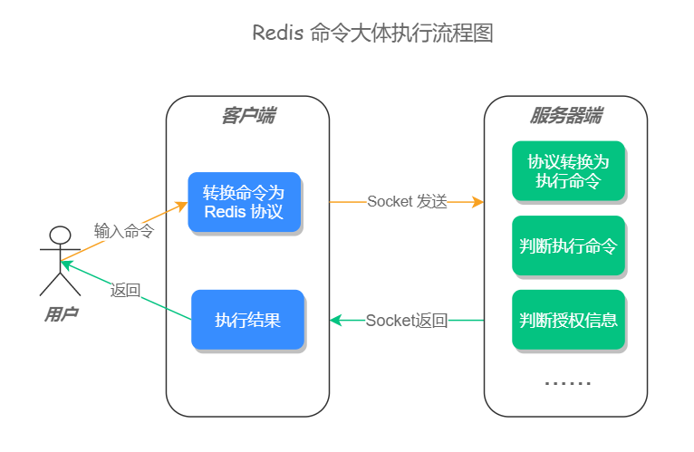
步骤一：用户输入一条命令
步骤二：客户端先将命令转换成 Redis 协议，然后再通过 socket 连接发送给服务器端
客户端和服务器端是基于 socket 通信的，服务器端在初始化时会创建了一个 socket 监听，用于监测链接客户端的 socket 链接，源码如下：
void initServer(void) {
//......
// 开启 Socket 事件监听
if (server.port != 0 &&
listenToPort(server.port,server.ipfd,&server.ipfd_count) == C_ERR)
exit(1);
//......
}
socket 小知识：每个 socket 被创建后，会分配两个缓冲区，输入缓冲区和输出缓冲区。 写入函数并不会立即向网络中传输数据，而是先将数据写入缓冲区中，再由 TCP 协议将数据从缓冲区发送到目标机器。一旦将数据写入到缓冲区，函数就可以成功返回，不管它们有没有到达目标机器，也不管它们何时被发送到网络，这些都是 TCP 协议负责的事情。 注意：数据有可能刚被写入缓冲区就发送到网络，也可能在缓冲区中不断积压，多次写入的数据被一次性发送到网络，这取决于当时的网络情况、当前线程是否空闲等诸多因素，不由程序员控制。 读取函数也是如此，它也是从输入缓冲区中读取数据，而不是直接从网络中读取。
当 socket 成功连接之后，客户端会先把命令转换成 Redis 通讯协议（RESP 协议，REdis Serialization Protocol）发送给服务器端，这个通信协议是为了保障服务器能最快速的理解命令的含义而制定的，如果没有这个通讯协议，那么 Redis 服务器端要遍历所有的空格以确认此条命令的含义，这样会加大服务器的运算量，而直接发送通讯协议，相当于把服务器端的解析工作交给了每一个客户端，这样会很大程度的提高 Redis 的运行速度。例如，当我们输入 set key val 命令时，客户端会把这个命令转换为 *3\r\n$3\r\nSET\r\n$4\r\nKEY\r\n$4\r\nVAL\r\n 协议发送给服务器端。 更多通讯协议，可访问官方文档：https://redis.io/topics/protocol
扩展知识：I/O 多路复用
Redis 使用的是 I/O 多路复用功能来监听多 socket 链接的，这样就可以使用一个线程链接来处理多个请求，减少线程切换带来的开销，同时也避免了 I/O 阻塞操作，从而大大提高了 Redis 的运行效率。
I/O 多路复用机制如下图所示： 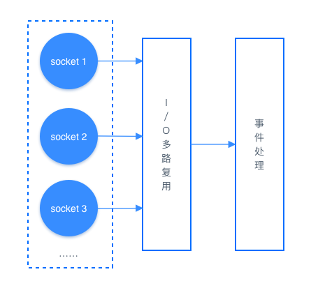
综合来说，此步骤的执行流程如下：
- 与服务器端以 socket 和 I/O 多路复用的技术建立链接；
- 将命令转换为 Redis 通讯协议，再将这些协议发送至缓冲区。
步骤三：服务器端接收到命令
服务器会先去输入缓冲中读取数据，然后判断数据的大小是否超过了系统设置的值(默认是 1GB)，如果大于此值就会返回错误信息，并关闭客户端连接。 默认大小如下图所示： 当数据大小验证通过之后，服务器端会对输入缓冲区中的请求命令进行分析，提取命令请求中包含的命令参数，存储在 client 对象(服务器端会为每个链接创建一个 Client 对象)的属性中。
步骤四：执行前准备
① 判断是否为退出命令，如果是则直接返回；
② 非 null 判断，检查 client 对象是否为 null，如果是返回错误信息；
③ 获取执行命令，根据 client 对象存储的属性信息去 redisCommand 结构中查询执行命令；
④ 用户权限效验，未通过身份验证的客户端只能执行 AUTH(授权) 命令，未通过身份验证的客户端执行了 AUTH 之外的命令则返回错误信息；
⑤ 集群相关操作，如果是集群模式，把命令重定向到目标节点，如果是 master(主节点) 则不需要重定向；
⑥ 检查服务器端最大内存限制，如果服务器端开启了最大内存限制，会先检查内存大小，如果内存超过了最大值会对内存进行回收操作；
⑦ 持久化检测，检查服务器是否开启了持久化和持久化出错停止写入配置，如果开启了此配置并且有持久化失败的情况，禁止执行写命令；
⑧ 集群模式最少从节点(slave)验证，如果是集群模式并且配置了 replminslavestowrite(最小从节点写入)，当从节点的数量少于配置项时，禁止执行写命令；
⑨ 只读从节点验证，当此服务器为只读从节点时，只接受 master 的写命令；
⑩ 客户端订阅判断，当客户端正在订阅频道时，只会执行部分命令（只会执行 SUBSCRIBE、PSUBSCRIBE、UNSUBSCRIBE、PUNSUBSCRIBE，其他命令都会被拒绝）。
⑪ 从节点状态效验，当服务器为 slave 并且没有连接 master 时，只会执行状态查询相关的命令，如 info 等；
⑫ 服务器初始化效验，当服务器正在启动时，只会执行 loading 标志的命令，其他的命令都会被拒绝；
⑬ lua 脚本阻塞效验，当服务器因为执行 lua 脚本阻塞时，只会执行部分命令；
⑭ 事务命令效验，如果执行的是事务命令，则开启事务把命令放入等待队列；
⑮ 监视器 (monitor) 判断，如果服务器打开了监视器功能，那么服务器也会把执行命令和相关参数发送给监视器 (监视器是用于监控服务器运行状态的)。
当服务器经过以上操作之后，就可以执行真正的操作命令了。
步骤五：执行最终命令，调用 redisCommand 中的 proc 函数执行命令。
步骤六：执行完后相关记录和统计 ① 检查慢查询是否开启，如果开启会记录慢查询日志； ② 检查统计信息是否开启，如果开启会记录一些统计信息，例如执行命令所耗费时长和计数器(calls)加1； ③ 检查持久化功能是否开启，如果开启则会记录持久化信息； ④ 如果有其它从服务器正在复制当前服务器，则会将刚刚执行的命令传播给其他从服务器。
步骤七：返回结果给客户端 命令执行完之后，服务器会通过 socket 的方式把执行结果发送给客户端，客户端再把结果展示给用户，至此一条命令的执行就结束了。
小结
当用户输入一条命令之后，客户端会以 socket 的方式把数据转换成 Redis 协议，并发送至服务器端，服务器端在接受到数据之后，会先将协议转换为真正的执行命令，在经过各种验证以保证命令能够正确并安全的执行，但验证处理完之后，会调用具体的方法执行此条命令，执行完成之后会进行相关的统计和记录，然后再把执行结果返回给客户端，整个执行流程，如下图所示：
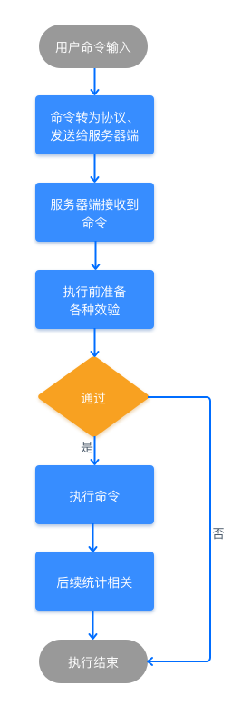
更多执行细节，可在 Redis 的源码文件 server.c 中查看。
02 Redis 快速搭建与使用
Redis 是由 C 语言开发的开源内存数据存储器，经常被用作数据库、缓存以及消息队列等。 Redis 因为其强大的功能和简洁的设计，深受广大开发者和公司的喜爱，几乎占领了内存数据库市场的所有份额。
1 Redis 特性
Redis 有很多优秀的特性，这也是它最受欢迎的原因。
1）多种数据类型支持
Redis 支持多种数据类型，例如字符串、散列、列表、集合、有序集合、HyperLogLog、流、地理坐标等，每种类型都有对应的使用场景，同时也满足了所有开发者的需要。
2）功能完善
Redis 提供了很多的功能，例如消息队列、自动过期删除、事务、数据持久化、分布式锁、附近的人、慢查询分析、Sentinel 和集群等多项功能。
3）高性能
Redis 是一款内存型数据库，因此在性能方面有天生的优势(内存操作比磁盘操作要快很多)，并且 Redis 在底层使用了更加高效的算法和数据结构，以最大限度的提高了 Redis 的性能。
4）广泛的编程语言支持
Redis 客户端有众多的开发者提供了相应的支持，这些客户端可以在 https://redis.io/clients 上找到，支持是编程语言，如下图所示：  可以看出几乎所有的编程语言，都有相应的客户端支持。
可以看出几乎所有的编程语言，都有相应的客户端支持。
5）使用简单
Redis 的 API 虽然比较丰富，但操作的方法都非常的简便，并且需要传递的参数也不多，这样开发者就能更快的上手使用，而且 Redis 官方也提供了比较完整的说明文档。
6）活跃性高/版本迭代快
Redis 活跃度很高，这点可以在 Redis 的开源项目 https://github.com/antirez/redis 中发现，并且 Redis 的版本迭代也很快，到目前为止 Redis 的发布版本就已经有二百多个了。
7）I/O 多路复用模型
Redis 使用了多路 I/O 复用模型，“多路”指的是多个网络连接，“复用”指的是复用同一个线程，采用多路 I/O 复用技术可以让单个线程高效的处理多个连接请求，这样就减少了创建和销毁线程所带来的时间消耗，从而到达高效处理大量并发请求的目的。
2 Redis 发展历程
Redis 的发展大概经过了以下几个过程：
- 2009 年 5 月发布 Redis 初始版本；
- 2012 年发布 Redis 2.6，重构了大量的核心代码，去掉了所有和集群相关的代码；
- 2013 年 11 月发布 Redis 2.8，增加了部分主从复制功能；
- 2015 年 4 月发布 Redis 3.0，增加了集群功能；
- 2017 年 7 月发布 Redis 4.0 ，优化了复制功能和新增了混合持久化；
- 2018 年 10 月发布 Redis 5.0，增加了 Stream 数据类型；
- 2020 年 3-5 月计划发布 Redis 6.0 稳定版。
3 Redis 安装
Redis 官方提供了 Linux 和 MacOS 服务端安装包，对于 Windows 还有提供正式的支持，之所以不支持 Windows 平台是因为目前 Linux 版本已经很稳定，并且也有大量的用户，如果开发 Windows 版本可能会带来很多的兼容性问题，但 Windows 平台还是有很多种方法可以安装 Redis 的，本文的下半部分会说到，我们先来看 Redis 在 Linux 和 MacOS 平台的安装。
1）源码安装
① 下载源码包
进入网址：https://redis.io/download 选择需要安装的版本，点击 Download 按钮，如下图所示： 
② 解压安装包
使用命令：tar zxvf redis-5.0.7.tar.gz
③ 切换到 Redis 目录
使用命令：cd /usr/local/redis-5.0.7/
④ 编译安装
使用命令：sudo make install 安装完成，如下图所示： 如果没有异常信息输出，向上图所示，则表示 Redis 已经安装成功。
2）Docker 安装
Docker 的使用前提是必须先有 Docker，如果本机没有安装 Docker，对于 Linux 用户来说，可使用命令 yum -y install docker 在线安装 docker，如果是非 Linux 平台需要在官网下载并安装 Docker Desker，下载地址：https://docs.docker.com/get-started/ 如下图所示：  选择相应的平台，下载安装即可。 有了 Docker 之后，就可以在 Docker 上安装 Redis 服务端了，具体步骤如下：
选择相应的平台，下载安装即可。 有了 Docker 之后，就可以在 Docker 上安装 Redis 服务端了，具体步骤如下：
① 拉取 Reids 镜像
使用命令：
docker pull redis
如果要安装其他版本的 Redis，可使用 docker pull redis:版本号 的方式来安装。
② 运行 Redis 容器
使用命令：
docker run --name myredis -d -p 6379:6379 redis
其中：
- --name：设置别名
- -p：映射宿主端口到容器端口
- -d：表示后台运行
执行完成后截图如下：  如图所示，则证明 Redis 已经正常启动了。 如果要查询 Redis 的安装版本，可遵循下图的执行流程，先进入容器，在进入 Redis 的安装目录，执行
如图所示，则证明 Redis 已经正常启动了。 如果要查询 Redis 的安装版本，可遵循下图的执行流程，先进入容器，在进入 Redis 的安装目录，执行 redis-server -v 命令，如图如下： 
③ 执行命令
Docker 版的 Redis 命令执行和其他方式安装的 Redis 不太一样，所以这里需要单独讲一下，我们要使用 redis-cli 工具，需要执行以下命令：
docker exec -it myredis redis-cli
其中“myredis”指的是容器中 Redis 服务端的别名。
3）在线安装
在线安装的执行步骤最简单，只需要执行 xxx install redis 命令即可直接安装，例如 MacOS 使用 brew install redis 、Ubuntu 使用 apt-get install redis 、CentOS 使用 yum install redis 等。
3 Windows 系统安装 Redis
上面我们提到了，官方并没有提供 Windows 的支持版本，但 Windows 平台依旧有很多种方法，可以用来安装 Redis 服务端，例如 Docker 方式、虚拟机方式、Windows 10 子系统方式和第三方提供的 Redis 版本等。
其中 Docker 方式和本文上半部分介绍的安装方式相同，这里就不再赘述，当然你也可以使用虚拟机安装 Linux 的方式，或者是使用 Windows 10 下的自带的 Linux 子系统的方式进行安装。
如果你还想要更简单的方式，就可以使用第三方提供的 Redis 安装包进行安装，例如可以使用微软官方支持并维护的一个 Win64 的 Redis 开源项目，目前支持的最新版本为 3.2，项目地址：https://github.com/MicrosoftArchive/redis/releases 下载 .msi 和 .zip 文件安装即可。
4 Redis 使用
Redis 安装完之后，在 src 目录和 /usr/local/bin 目录下有几个很重要的可执行文件，这些可执行文件可以做很多事，如下表所示：
| 可执行文件 | 功能 |
|---|---|
| redis-server | 启动 Redis |
| redis-cli | Redis 命令行工具 |
| redis-benchmark | 基准测试工具 |
| redis-check-aof | AOF 持久化文件检测工具和修复工具 |
| redis-check-dump | RDB 持久化文件检测工具和修复工具 |
| redis-sentinel | 启动 redis-sentinel |
1）启动 Redis
下面我们就用可执行文件 redis-server 来启动 Redis 服务器，我们在 Redis 的安装目录执行 src/redis-server 命令就可以启动 Redis 服务了，如下图所示：  可以看出 Redis 已经正常启动了，但这种启动方式，会使得 Redis 服务随着控制台的关闭而退出，因为 Redis 服务默认是非后台启动的，我们需要修改配置文件(redis.conf)，找到
可以看出 Redis 已经正常启动了，但这种启动方式，会使得 Redis 服务随着控制台的关闭而退出，因为 Redis 服务默认是非后台启动的，我们需要修改配置文件(redis.conf)，找到 daemonize no 改为 daemonize yes ，然后重启服务，此时 Redis 就是以后台运行方式启动了，并且不会随着控制台的关闭而退出。
daemonize 配置如下： 
2）使用可视化工具操作 Redis
Redis 启动之后就可以使用一些客户端工具进行链接和操作，如下图所示：  (注：我们本文使用的是 Redis Desktop Manager 工具链接的，更多 Redis 可视化工具，在本课程的后面有介绍。) 可以看出 Redis 服务器默认有 16 个数据库实例，从 db0 到 db15，但这个数据库实例和传统的关系型数据库实例是不一样的。传统型数据库实例是通过连接字符串配置的，而 Redis 数据库连接字符串只有一个，并不能指定要使用的数据库实例。
(注：我们本文使用的是 Redis Desktop Manager 工具链接的，更多 Redis 可视化工具，在本课程的后面有介绍。) 可以看出 Redis 服务器默认有 16 个数据库实例，从 db0 到 db15，但这个数据库实例和传统的关系型数据库实例是不一样的。传统型数据库实例是通过连接字符串配置的，而 Redis 数据库连接字符串只有一个，并不能指定要使用的数据库实例。
在 Redis 中如果要切换数据库实例，只需要执行 select n 命令即可，例如需要连接 db1 ，使用 select 1 命令选择即可，默认连接的数据库实例是 db0。
小贴士：当使用了
flushall清空 Redis 数据库时，此数据库下的所有数据都会被清除。
Redis 数据库的实例个数也可以通过配置文件更改，在 redis.conf 中找到 databases 16 ，修改后面的数字重启 Redis 服务就会生效。
3）使用 redis-cli 操作 Redis
redis-cli 是官方自带的客户端链接工具，它可以配合命令行来对 Redis 进行操作，在 Redis 的安装目录使用 src/redis-cli 命令即可链接并操作 Redis，如下图所示： 
5 小结
本文介绍了 Redis 的特性及其发展历程，以及 Redis 在 Windows、Linux、MacOS 下的安装，其中 Docker 安装方式，对所有平台都是通用的，在 Linux、MacOS 平台下可以在线安装或者使用源码安装，Windows 平台可以使用虚拟机或子系统以及第三方提供的 Redis 安装包进行安装。安装成功之后可以使用 redis-server 来启动 Redis 服务，并使用 redis-cli 来链接和操作 Redis 服务器，redis-server 默认是非后台运行 Redis，需要修改配置 daemonize yes 来设置 Redis 为后台运行模式，这样就可以快速上手使用 Redis 了。
03 Redis 持久化——RDB
Redis 的读写都是在内存中，所以它的性能较高，但在内存中的数据会随着服务器的重启而丢失，为了保证数据不丢失，我们需要将内存中的数据存储到磁盘，以便 Redis 重启时能够从磁盘中恢复原有的数据，而整个过程就叫做 Redis 持久化。
 Redis 持久化也是 Redis 和 Memcached 的主要区别之一，因为 Memcached 不具备持久化功能。
Redis 持久化也是 Redis 和 Memcached 的主要区别之一，因为 Memcached 不具备持久化功能。
1 持久化的几种方式
Redis 持久化拥有以下三种方式：
- 快照方式（RDB, Redis DataBase）将某一个时刻的内存数据，以二进制的方式写入磁盘；
- 文件追加方式（AOF, Append Only File），记录所有的操作命令，并以文本的形式追加到文件中；
- 混合持久化方式，Redis 4.0 之后新增的方式，混合持久化是结合了 RDB 和 AOF 的优点，在写入的时候，先把当前的数据以 RDB 的形式写入文件的开头，再将后续的操作命令以 AOF 的格式存入文件，这样既能保证 Redis 重启时的速度，又能减低数据丢失的风险。
因为每种持久化方案，都有特定的使用场景，让我们先从 RDB 持久化说起吧。
2 RDB简介
RDB（Redis DataBase）是将某一个时刻的内存快照（Snapshot），以二进制的方式写入磁盘的过程。
3 持久化触发
RDB 的持久化触发方式有两类：一类是手动触发，另一类是自动触发。
1）手动触发
手动触发持久化的操作有两个： save 和 bgsave ，它们主要区别体现在：是否阻塞 Redis 主线程的执行。
① save 命令
在客户端中执行 save 命令，就会触发 Redis 的持久化，但同时也是使 Redis 处于阻塞状态，直到 RDB 持久化完成，才会响应其他客户端发来的命令，所以在生产环境一定要慎用。
save 命令使用如下： 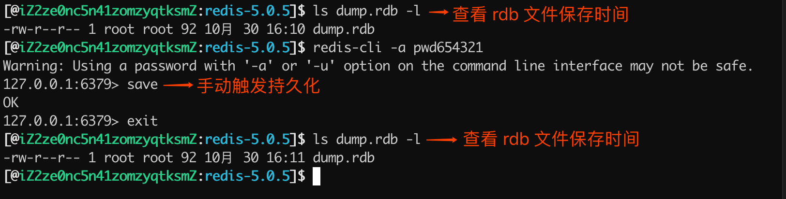 从图片可以看出，当执行完 save 命令之后，持久化文件 dump.rdb 的修改时间就变了，这就表示 save 成功的触发了 RDB 持久化。 save 命令执行流程，如下图所示： 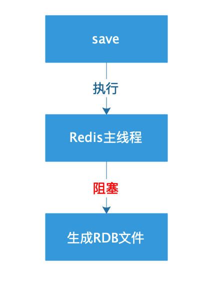
② bgsave 命令
bgsave（background save）既后台保存的意思， 它和 save 命令最大的区别就是 bgsave 会 fork() 一个子进程来执行持久化，整个过程中只有在 fork() 子进程时有短暂的阻塞，当子进程被创建之后，Redis 的主进程就可以响应其他客户端的请求了，相对于整个流程都阻塞的 save 命令来说，显然 bgsave 命令更适合我们使用。 bgsave 命令使用，如下图所示： 
bgsave 执行流程，如下图所示：
2）自动触发
说完了 RDB 的手动触发方式，下面来看如何自动触发 RDB 持久化？ RDB 自动持久化主要来源于以下几种情况。
① save m n
save m n 是指在 m 秒内，如果有 n 个键发生改变，则自动触发持久化。 参数 m 和 n 可以在 Redis 的配置文件中找到，例如，save 60 1 则表明在 60 秒内，至少有一个键发生改变，就会触发 RDB 持久化。 自动触发持久化，本质是 Redis 通过判断，如果满足设置的触发条件，自动执行一次 bgsave 命令。 注意：当设置多个 save m n 命令时，满足任意一个条件都会触发持久化。 例如，我们设置了以下两个 save m n 命令：
- save 60 10
- save 600 1
当 60s 内如果有 10 次 Redis 键值发生改变，就会触发持久化；如果 60s 内 Redis 的键值改变次数少于 10 次，那么 Redis 就会判断 600s 内，Redis 的键值是否至少被修改了一次，如果满足则会触发持久化。
② flushall
flushall 命令用于清空 Redis 数据库，在生产环境下一定慎用，当 Redis 执行了 flushall 命令之后，则会触发自动持久化，把 RDB 文件清空。 执行结果如下图所示： 
③ 主从同步触发
在 Redis 主从复制中，当从节点执行全量复制操作时，主节点会执行 bgsave 命令，并将 RDB 文件发送给从节点，该过程会自动触发 Redis 持久化。
4 配置说明
合理的设置 RDB 的配置，可以保障 Redis 高效且稳定的运行，下面一起来看 RDB 的配置项都有哪些？
RDB 配置参数可以在 Redis 的配置文件中找见，具体内容如下：
# RDB 保存的条件
save 900 1
save 300 10
save 60 10000
# bgsave 失败之后，是否停止持久化数据到磁盘，yes 表示停止持久化，no 表示忽略错误继续写文件。
stop-writes-on-bgsave-error yes
# RDB 文件压缩
rdbcompression yes
# 写入文件和读取文件时是否开启 RDB 文件检查，检查是否有无损坏，如果在启动是检查发现损坏，则停止启动。
rdbchecksum yes
# RDB 文件名
dbfilename dump.rdb
# RDB 文件目录
dir ./
其中比较重要的参数如下列表： ① save 参数 它是用来配置触发 RDB 持久化条件的参数，满足保存条件时将会把数据持久化到硬盘。 默认配置说明如下：
- save 900 1：表示 900 秒内如果至少有 1 个 key 值变化，则把数据持久化到硬盘；
- save 300 10：表示 300 秒内如果至少有 10 个 key 值变化，则把数据持久化到硬盘；
- save 60 10000：表示 60 秒内如果至少有 10000 个 key 值变化，则把数据持久化到硬盘。
② rdbcompression 参数 它的默认值是 yes 表示开启 RDB 文件压缩，Redis 会采用 LZF 算法进行压缩。如果不想消耗 CPU 性能来进行文件压缩的话，可以设置为关闭此功能，这样的缺点是需要更多的磁盘空间来保存文件。 ③ rdbchecksum 参数 它的默认值为 yes 表示写入文件和读取文件时是否开启 RDB 文件检查，检查是否有无损坏，如果在启动是检查发现损坏，则停止启动。
5 配置查询
Redis 中可以使用命令查询当前配置参数。查询命令的格式为：config get xxx ，例如，想要获取 RDB 文件的存储名称设置，可以使用 config get dbfilename ，执行效果如下图所示： 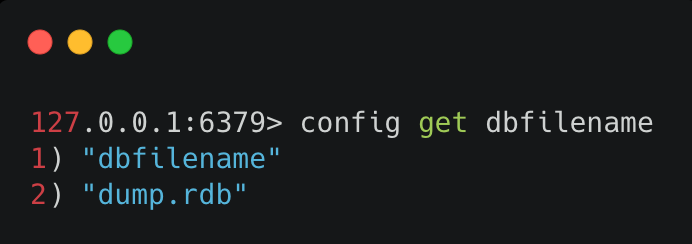 查询 RDB 的文件目录，可使用命令 config get dir ，执行效果如下图所示：
6 配置设置
设置 RDB 的配置，可以通过以下两种方式：
- 手动修改 Redis 配置文件；
- 使用命令行设置，例如，使用
config set dir "/usr/data"就是用于修改 RDB 的存储目录。
注意：手动修改 Redis 配置文件的方式是全局生效的，即重启 Redis 服务器设置参数也不会丢失，而使用命令修改的方式，在 Redis 重启之后就会丢失。但手动修改 Redis 配置文件，想要立即生效需要重启 Redis 服务器，而命令的方式则不需要重启 Redis 服务器。
小贴士：Redis 的配置文件位于 Redis 安装目录的根路径下，默认名称为 redis.conf。
7 RDB 文件恢复
当 Redis 服务器启动时，如果 Redis 根目录存在 RDB 文件 dump.rdb，Redis 就会自动加载 RDB 文件恢复持久化数据。 如果根目录没有 dump.rdb 文件，请先将 dump.rdb 文件移动到 Redis 的根目录。 验证 RDB 文件是否被加载 Redis 在启动时有日志信息，会显示是否加载了 RDB 文件，我们执行 Redis 启动命令：src/redis-server redis.conf ，如下图所示：  从日志上可以看出， Redis 服务在启动时已经正常加载了 RDB 文件。
从日志上可以看出， Redis 服务在启动时已经正常加载了 RDB 文件。
小贴士：Redis 服务器在载入 RDB 文件期间，会一直处于阻塞状态，直到载入工作完成为止。
8 RDB 优缺点
1）RDB 优点
- RDB 的内容为二进制的数据，占用内存更小，更紧凑，更适合做为备份文件；
- RDB 对灾难恢复非常有用，它是一个紧凑的文件，可以更快的传输到远程服务器进行 Redis 服务恢复；
- RDB 可以更大程度的提高 Redis 的运行速度，因为每次持久化时 Redis 主进程都会 fork() 一个子进程，进行数据持久化到磁盘，Redis 主进程并不会执行磁盘 I/O 等操作；
- 与 AOF 格式的文件相比，RDB 文件可以更快的重启。
2）RDB 缺点
- 因为 RDB 只能保存某个时间间隔的数据，如果中途 Redis 服务被意外终止了，则会丢失一段时间内的 Redis 数据；
- RDB 需要经常 fork() 才能使用子进程将其持久化在磁盘上。如果数据集很大，fork() 可能很耗时，并且如果数据集很大且 CPU 性能不佳，则可能导致 Redis 停止为客户端服务几毫秒甚至一秒钟。
9 禁用持久化
禁用持久化可以提高 Redis 的执行效率，如果对数据丢失不敏感的情况下，可以在连接客户端的情况下，执行 config set save "" 命令即可禁用 Redis 的持久化，如下图所示： 
10 小结
通过本文我们可以得知，RDB 持久化分为手动触发和自动触发两种方式，它的优点是存储文件小，Redis 启动 时恢复数据比较快，缺点是有丢失数据的风险。RDB 文件的恢复也很简单，只需要把 RDB 文件放到 Redis 的根目录，在 Redis 启动时就会自动加载并恢复数据。 最后给大家留一个思考题：如果 Redis 服务器 CPU 占用过高，可能是什么原因导致的？欢迎各位在评论区，写下你们的答案。
参考&鸣谢 https://redis.io/topics/persistence https://blog.csdn.net/qq_36318234/article/details/79994133 https://www.cnblogs.com/ysocean/p/9114268.html https://www.cnblogs.com/wdliu/p/9377278.html
04 Redis 持久化——AOF
使用 RDB 持久化有一个风险，它可能会造成最新数据丢失的风险。因为 RDB 的持久化有一定的时间间隔，在这个时间段内如果 Redis 服务意外终止的话，就会造成最新的数据全部丢失。
可能会操作 Redis 服务意外终止的条件：
- 安装 Redis 的机器停止运行，蓝屏或者系统崩溃；
- 安装 Redis 的机器出现电源故障，例如突然断电；
- 使用
kill -9 Redis_PID等。
那么如何解决以上的这些问题呢？Redis 为我们提供了另一种持久化的方案——AOF。
1 简介
AOF（Append Only File）中文是附加到文件，顾名思义 AOF 可以把 Redis 每个键值对操作都记录到文件（appendonly.aof）中。
2 持久化查询和设置
1）查询 AOF 启动状态
使用 config get appendonly 命令，如下图所示： 其中，第一行为 AOF 文件的名称，而最后一行表示 AOF 启动的状态，yes 表示已启动，no 表示未启动。
2）开启 AOF 持久化
Redis 默认是关闭 AOF 持久化的，想要开启 AOF 持久化，有以下两种方式：
- 通过命令行的方式；
- 通过修改配置文件的方式（redis.conf）。
下面分别来看以上两种方式的实现。
① 命令行启动 AOF
命令行启动 AOF，使用 config set appendonly yes 命令，如下图所示： 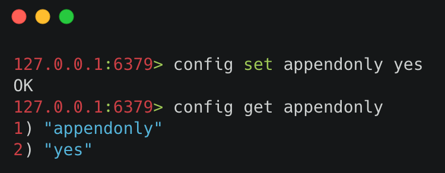 命令行启动 AOF 的优缺点：命令行启动优点是无需重启 Redis 服务，缺点是如果 Redis 服务重启，则之前使用命令行设置的配置就会失效。
② 配置文件启动 AOF
Redis 的配置文件在它的根路径下的 redis.conf 文件中，获取 Redis 的根目录可以使用命令 config get dir 获取，如下图所示：  只需要在配置文件中设置
只需要在配置文件中设置 appendonly yes 即可，默认 appendonly no 表示关闭 AOF 持久化。 配置文件启动 AOF 的优缺点：修改配置文件的缺点是每次修改配置文件都要重启 Redis 服务才能生效，优点是无论重启多少次 Redis 服务，配置文件中设置的配置信息都不会失效。
3 触发持久化
AOF 持久化开启之后，只要满足一定条件，就会触发 AOF 持久化。AOF 的触发条件分为两种：自动触发和手动触发。
1）自动触发
有两种情况可以自动触发 AOF 持久化，分为是：满足 AOF 设置的策略触发和**满足 AOF 重写触发。**其中，AOF 重写触发会在本文的后半部分详细介绍，这里重点来说 AOF 持久化策略都有哪些。 AOF 持久化策略，分为以下三种：
- always：每条 Redis 操作命令都会写入磁盘，最多丢失一条数据；
- everysec：每秒钟写入一次磁盘，最多丢失一秒的数据；
- no：不设置写入磁盘的规则，根据当前操作系统来决定何时写入磁盘，Linux 默认 30s 写入一次数据至磁盘。
这三种配置可以在 Redis 的配置文件（redis.conf）中设置，如下代码所示：
# 开启每秒写入一次的持久化策略
appendfsync everysec
小贴士：因为每次写入磁盘都会对 Redis 的性能造成一定的影响，所以要根据用户的实际情况设置相应的策略，一般设置每秒写入一次磁盘的频率就可以满足大部分的使用场景了。
触发自动持久化的两种情况，如下图所示： 
2）手动触发
在客户端执行 bgrewriteaof 命令就可以手动触发 AOF 持久化，如下图所示：  可以看出执行完
可以看出执行完 bgrewriteaof 命令之后，AOF 持久化就会被触发。
4 AOF 文件重写
AOF 是通过记录 Redis 的执行命令来持久化（保存）数据的，所以随着时间的流逝 AOF 文件会越来越多，这样不仅增加了服务器的存储压力，也会造成 Redis 重启速度变慢，为了解决这个问题 Redis 提供了 AOF 重写的功能。
1）什么是 AOF 重写？
AOF 重写指的是它会直接读取 Redis 服务器当前的状态，并压缩保存为 AOF 文件。例如，我们增加了一个计数器，并对它做了 99 次修改，如果不做 AOF 重写的话，那么持久化文件中就会有 100 条记录执行命令的信息，而 AOF 重写之后，之后记录一条此计数器最终的结果信息，这样就去除了所有的无效信息。
2）AOF 重写实现
触发 AOF 文件重写，要满足两个条件，这两个条件也是配置在 Redis 配置文件中的，它们分别：
- auto-aof-rewrite-min-size：允许 AOF 重写的最小文件容量，默认是 64mb 。
- auto-aof-rewrite-percentage：AOF 文件重写的大小比例，默认值是 100，表示 100%，也就是只有当前 AOF 文件，比最后一次（上次）的 AOF 文件大一倍时，才会启动 AOF 文件重写。
查询 auto-aof-rewrite-min-size 和 auto-aof-rewrite-percentage 的值，可使用 config get xxx 命令，如下图所示： 
小贴士：只有同时满足 auto-aof-rewrite-min-size 和 auto-aof-rewrite-percentage 设置的条件，才会触发 AOF 文件重写。
注意：使用 bgrewriteaof 命令，可以自动触发 AOF 文件重写。
3）AOF 重写流程
AOF 文件重写是生成一个全新的文件，并把当前数据的最少操作命令保存到新文件上，当把所有的数据都保存至新文件之后，Redis 会交换两个文件，并把最新的持久化操作命令追加到新文件上。
5 配置说明
合理的设置 AOF 的配置，可以保障 Redis 高效且稳定的运行，以下是 AOF 的全部配置信息和说明。
AOF 的配置参数在 Redis 的配置文件中，也就是 Redis 根路径下的 redis.conf 文件中，配置参数和说明如下：
# 是否开启 AOF，yes 为开启，默认是关闭
appendonly no
# AOF 默认文件名
appendfilename "appendonly.aof"
# AOF 持久化策略配置
# appendfsync always
appendfsync everysec
# appendfsync no
# AOF 文件重写的大小比例，默认值是 100，表示 100%，也就是只有当前 AOF 文件，比最后一次的 AOF 文件大一倍时，才会启动 AOF 文件重写。
auto-aof-rewrite-percentage 100
# 允许 AOF 重写的最小文件容量
auto-aof-rewrite-min-size 64mb
# 是否开启启动时加载 AOF 文件效验，默认值是 yes，表示尽可能的加载 AOF 文件，忽略错误部分信息，并启动 Redis 服务。
# 如果值为 no，则表示，停止启动 Redis，用户必须手动修复 AOF 文件才能正常启动 Redis 服务。
aof-load-truncated yes
其中比较重要的是 appendfsync 参数，用它来设置 AOF 的持久化策略，可以选择按时间间隔或者操作次数来存储 AOF 文件，这个参数的三个值在文章开头有说明，这里就不再复述了。
6 数据恢复
1）正常数据恢复
正常情况下，只要开启了 AOF 持久化，并且提供了正常的 appendonly.aof 文件，在 Redis 启动时就会自定加载 AOF 文件并启动，执行如下图所示：  其中
其中 DB loaded from append only file...... 表示 Redis 服务器在启动时，先去加载了 AOF 持久化文件。
小贴士：默认情况下 appendonly.aof 文件保存在 Redis 的根目录下。
持久化文件加载规则
- 如果只开启了 AOF 持久化，Redis 启动时只会加载 AOF 文件（appendonly.aof），进行数据恢复；
- 如果只开启了 RDB 持久化，Redis 启动时只会加载 RDB 文件（dump.rdb），进行数据恢复；
- 如果同时开启了 RDB 和 AOF 持久化，Redis 启动时只会加载 AOF 文件（appendonly.aof），进行数据恢复。
在 AOF 开启的情况下，即使 AOF 文件不存在，只有 RDB 文件，也不会加载 RDB 文件。 AOF 和 RDB 的加载流程如下图所示： 
2）简单异常数据恢复
在 AOF 写入文件时如果服务器崩溃，或者是 AOF 存储已满的情况下，AOF 的最后一条命令可能被截断，这就是异常的 AOF 文件。
在 AOF 文件异常的情况下，如果为修改 Redis 的配置文件，也就是使用 aof-load-truncated 等于 yes 的配置，Redis 在启动时会忽略最后一条命令，并顺利启动 Redis，执行结果如下：
* Reading RDB preamble from AOF file...
* Reading the remaining AOF tail...
# !!! Warning: short read while loading the AOF file !!!
# !!! Truncating the AOF at offset 439 !!!
# AOF loaded anyway because aof-load-truncated is enabled
3）复杂异常数据恢复
AOF 文件可能出现更糟糕的情况，当 AOF 文件不仅被截断，而且中间的命令也被破坏，这个时候再启动 Redis 会提示错误信息并中止运行，错误信息如下：
* Reading the remaining AOF tail...
# Bad file format reading the append only file: make a backup of your AOF file, then use ./redis-check-aof --fix <filename>
出现此类问题的解决方案如下：
- 首先使用 AOF 修复工具，检测出现的问题，在命令行中输入
redis-check-aof命令，它会跳转到出现问题的命令行，这个时候可以尝试手动修复此文件； - 如果无法手动修复，我们可以使用
redis-check-aof --fix自动修复 AOF 异常文件，不过执行此命令，可能会导致异常部分至文件末尾的数据全部被丢弃。
7 优缺点
AOF 优点
- AOF 持久化保存的数据更加完整，AOF 提供了三种保存策略：每次操作保存、每秒钟保存一次、跟随系统的持久化策略保存，其中每秒保存一次，从数据的安全性和性能两方面考虑是一个不错的选择，也是 AOF 默认的策略，即使发生了意外情况，最多只会丢失 1s 钟的数据；
- AOF 采用的是命令追加的写入方式，所以不会出现文件损坏的问题，即使由于某些意外原因，导致了最后操作的持久化数据写入了一半，也可以通过 redis-check-aof 工具轻松的修复；
- AOF 持久化文件，非常容易理解和解析，它是把所有 Redis 键值操作命令，以文件的方式存入了磁盘。即使不小心使用
flushall命令删除了所有键值信息，只要使用 AOF 文件，删除最后的flushall命令，重启 Redis 即可恢复之前误删的数据。
AOF 缺点
- 对于相同的数据集来说，AOF 文件要大于 RDB 文件；
- 在 Redis 负载比较高的情况下，RDB 比 AOF 性能更好；
- RDB 使用快照的形式来持久化整个 Redis 数据，而 AOF 只是将每次执行的命令追加到 AOF 文件中，因此从理论上说，RDB 比 AOF 更健壮。
8 小结
AOF 保存数据更加完整，它可以记录每次 Redis 的键值变化，或者是选择每秒保存一次数据。AOF 的持久化文件更加易读，但相比与二进制的 RDB 来说，所占的存储空间也越大，为了解决这个问题，AOF 提供自动化重写机制，最大程度的减少了 AOF 占用空间大的问题。同时 AOF 也提供了很方便的异常文件恢复命令： redis-check-aof --fix ，为使用 AOF 提供了很好的保障。
参考&鸣谢 https://redis.io/topics/persistence https://blog.csdn.net/qq_36318234/article/details/79994133 https://www.cnblogs.com/wdliu/p/9377278.html
05 Redis 持久化——混合持久化
RDB 和 AOF 持久化各有利弊，RDB 可能会导致一定时间内的数据丢失，而 AOF 由于文件较大则会影响 Redis 的启动速度，为了能同时使用 RDB 和 AOF 各种的优点，Redis 4.0 之后新增了混合持久化的方式。
在开启混合持久化的情况下，AOF 重写时会把 Redis 的持久化数据，以 RDB 的格式写入到 AOF 文件的开头，之后的数据再以 AOF 的格式化追加的文件的末尾。
混合持久化的数据存储结构如下图所示：
1 开启混合持久化
查询是否开启混合持久化可以使用 config get aof-use-rdb-preamble 命令，执行结果如下图所示： 其中 yes 表示已经开启混合持久化，no 表示关闭，Redis 5.0 默认值为 yes。 如果是其他版本的 Redis 首先需要检查一下，是否已经开启了混合持久化，如果关闭的情况下，可以通过以下两种方式开启：
- 通过命令行开启
- 通过修改 Redis 配置文件开启
1）通过命令行开启
使用命令 config set aof-use-rdb-preamble yes 执行结果如下图所示：
小贴士：命令行设置配置的缺点是重启 Redis 服务之后，设置的配置就会失效。
2）通过修改 Redis 配置文件开启
在 Redis 的根路径下找到 redis.conf 文件，把配置文件中的 aof-use-rdb-preamble no 改为 aof-use-rdb-preamble yes 如下图所示：
2 实例运行
当在混合持久化关闭的情况下，使用 bgrewriteaof 触发 AOF 文件重写之后，查看 appendonly.aof 文件的持久化日志，如下图所示： 可以看出，当混合持久化关闭的情况下 AOF 持久化文件存储的为标准的 AOF 格式的文件。 当混合持久化开启的模式下，使用 bgrewriteaof 命令触发 AOF 文件重写，得到 appendonly.aof 的文件内容如下图所示： 可以看出 appendonly.aof 文件存储的内容是 REDIS 开头的 RDB 格式的内容，并非为 AOF 格式的日志。
3 数据恢复和源码解析
混合持久化的数据恢复和 AOF 持久化过程是一样的，只需要把 appendonly.aof 放到 Redis 的根目录，在 Redis 启动时，只要开启了 AOF 持久化，Redis 就会自动加载并恢复数据。 Redis 启动信息如下图所示：  可以看出 Redis 在服务器初始化的时候加载了 AOF 文件的内容。
可以看出 Redis 在服务器初始化的时候加载了 AOF 文件的内容。
1）混合持久化的加载流程
混合持久化的加载流程如下：
- 判断是否开启 AOF 持久化，开启继续执行后续流程，未开启执行加载 RDB 文件的流程；
- 判断 appendonly.aof 文件是否存在，文件存在则执行后续流程；
- 判断 AOF 文件开头是 RDB 的格式, 先加载 RDB 内容再加载剩余的 AOF 内容；
- 判断 AOF 文件开头不是 RDB 的格式，直接以 AOF 格式加载整个文件。
AOF 加载流程图如下图所示：  2）源码解析
2）源码解析
Redis 判断 AOF 文件的开头是否是 RDB 格式的，是通过关键字 REDIS 判断的，RDB 文件的开头一定是 REDIS 关键字开头的，判断源码在 Redis 的 src/aof.c 中，核心代码如下所示：
char sig[5]; /* "REDIS" */
if (fread(sig,1,5,fp) != 5 || memcmp(sig,"REDIS",5) != 0) {
// AOF 文件开头非 RDB 格式，非混合持久化文件
if (fseek(fp,0,SEEK_SET) == -1) goto readerr;
} else {
/* RDB preamble. Pass loading the RDB functions. */
rio rdb;
serverLog(LL_NOTICE,"Reading RDB preamble from AOF file...");
if (fseek(fp,0,SEEK_SET) == -1) goto readerr;
rioInitWithFile(&rdb,fp);
// AOF 文件开头是 RDB 格式，先加载 RDB 再加载 AOF
if (rdbLoadRio(&rdb,NULL,1) != C_OK) {
serverLog(LL_WARNING,"Error reading the RDB preamble of the AOF file, AOF loading aborted");
goto readerr;
} else {
serverLog(LL_NOTICE,"Reading the remaining AOF tail...");
}
}
// 加载 AOF 格式的数据
可以看出 Redis 是通过判断 AOF 文件的开头是否是 REDIS 关键字，来确定此文件是否为混合持久化文件的。
小贴士：AOF 格式的开头是 *，而 RDB 格式的开头是 REDIS。
4 优缺点
混合持久化优点：
- 混合持久化结合了 RDB 和 AOF 持久化的优点，开头为 RDB 的格式，使得 Redis 可以更快的启动，同时结合 AOF 的优点，有减低了大量数据丢失的风险。
混合持久化缺点：
- AOF 文件中添加了 RDB 格式的内容，使得 AOF 文件的可读性变得很差；
- 兼容性差，如果开启混合持久化，那么此混合持久化 AOF 文件，就不能用在 Redis 4.0 之前版本了。
5 持久化最佳实践
持久化虽然保证了数据不丢失，但同时拖慢了 Redis 的运行速度，那怎么更合理的使用 Redis 的持久化功能呢？ Redis 持久化的最佳实践可从以下几个方面考虑。
1）控制持久化开关
使用者可根据实际的业务情况考虑，如果对数据的丢失不敏感的情况下，可考虑关闭 Redis 的持久化，这样所以的键值操作都在内存中，就可以保证最高效率的运行 Redis 了。 持久化关闭操作：
- 关闭 RDB 持久化，使用命令：
config set save "" - 关闭 AOF 和 混合持久化，使用命令：
config set appendonly no
2）主从部署
使用主从部署，一台用于响应主业务，一台用于数据持久化，这样就可能让 Redis 更加高效的运行。
3）使用混合持久化
混合持久化结合了 RDB 和 AOF 的优点，Redis 5.0 默认是开启的。
4）使用配置更高的机器
Redis 对 CPU 的要求并不高，反而是对内存和磁盘的要求很高，因为 Redis 大部分时候都在做读写操作，使用更多的内存和更快的磁盘，对 Redis 性能的提高非常有帮助。
参考&鸣谢 https://redis.io/topics/persistence https://blog.csdn.net/qq_36318234/article/details/79994133 https://www.cnblogs.com/wdliu/p/9377278.html
06 字符串使用与内部实现原理
Redis 发展到现在已经有 9 种数据类型了，其中最基础、最常用的数据类型有 5 种，它们分别是：字符串类型、列表类型、哈希表类型、集合类型、有序集合类型，而在这 5 种数据类型中最常用的是字符串类型，所以本文我们先从字符串的使用开始说起。
字符串类型的全称是 Simple Dynamic Strings 简称 SDS，中文意思是：简单动态字符串。它是以键值对 key-value 的形式进行存储的，根据 key 来存储和获取 value 值，它的使用相对来说比较简单，但在实际项目中应用非常广泛。
1 字符串类型能做什么？
字符串类型的使用场景有很多，但从功能的角度来区分，大致可分为以下两种：
- 字符串存储和操作；
- 整数类型和浮点类型的存储和计算。
字符串最常用的业务场景有以下几个。
1）页面数据缓存
我们知道，一个系统最宝贵的资源就是数据库资源，随着公司业务的发展壮大，数据库的存储量也会越来越大，并且要处理的请求也越来越多，当数据量和并发量到达一定级别之后，数据库就变成了拖慢系统运行的“罪魁祸首”，为了避免这种情况的发生，我们可以把查询结果放入缓存(Redis)中，让下次同样的查询直接去缓存系统取结果，而非查询数据库，这样既减少了数据库的压力，同时也提高了程序的运行速度。
介于以上这个思路，我们可以把文章详情页的数据放入缓存系统。具体的做法是先将文章详情页序列化为字符串存入缓存，再从缓存中读取到字符串，反序列化成对象，然后再赋值到页面进行显示 (当然也可以用哈希类型进行存储，这会在下一篇文章中讲到)，这样我们就实现了文章详情页的缓存功能，架构流程对比图如下所示。
原始系统运行流程图： 
引入缓存系统后的流程图： 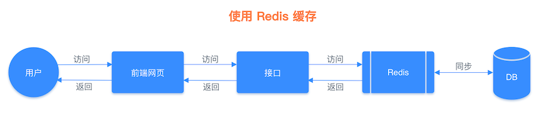
2）数字计算与统计
Redis 可以用来存储整数和浮点类型的数据，并且可以通过命令直接累加并存储整数信息，这样就省去了每次先要取数据、转换数据、拼加数据、再存入数据的麻烦，只需要使用一个命令就可以完成此流程，具体实现过程本文下半部分会讲。这样我们就可以使用此功能来实现访问量的统计，当有人访问时访问量 +1 就可以了。
3）共享 Session 信息
通常我们在开发后台管理系统时，会使用 Session 来保存用户的会话(登录)状态，这些 Session 信息会被保存在服务器端，但这只适用于单系统应用，如果是分布式系统此模式将不再适用。
例如用户一的 Session 信息被存储在服务器一，但第二次访问时用户一被分配到服务器二，这个时候服务器并没有用户一的 Session 信息，就会出现需要重复登录的问题。分布式系统每次会把请求随机分配到不同的服务器，因此我们需要借助缓存系统对这些 Session 信息进行统一的存储和管理，这样无论请求发送到那台服务器，服务器都会去统一的缓存系统获取相关的 Session 信息，这样就解决了分布式系统下 Session 存储的问题。
分布式系统单独存储 Session 流程图： 
分布式系统使用同一的缓存系统存储 Session 流程图： 
2 字符串如何使用？
通常我们会使用两种方式来操作 Redis：第一种是使用命令行来操作，例如 redis-cli；另一种是使用代码的方式来操作，下面我们分别来看。
1）命令行操作方式
字符串的操作命令有很多，但大体可分为以下几类：
- 单个键值对操作
- 多个键值对操作
- 数字统计
我们本文使用 redis-cli 来实现对 Redis 的操作，在使用命令之前，先输入 redis-cli 来链接到 Redis 服务器。
① 单个键值对操作
a.添加键值对
语法：set key value [expiration EX seconds|PX milliseconds] [NX|XX] 示例：
127.0.0.1:6379> set k1 val1
OK
b.获取键值对
语法：get key 示例：
127.0.0.1:6379> get k1
"val1"
c.给元素追加值
语法：append key value 示例：
127.0.0.1:6379> get k1
"v1"
127.0.0.1:6379> append k1 append
(integer) 5
127.0.0.1:6379> get k1
"v1append"
d.查询字符串的长度
语法：strlen key 示例：
127.0.0.1:6379> strlen k1
(integer) 5
② 多个键值对操作
a.创建一个或多个键值对
语法：mset key value [key value …] 示例：
127.0.0.1:6379> mset k2 v2 k3 v3
OK
小贴士：mset 是一个原子性(atomic)操作，所有给定 key 都会在同一时间内被设置，不会出现某些 key 被更新，而另一些 key 没被更新的情况。
b.查询一个或多个元素
语法：mget key [key …] 示例：
127.0.0.1:6379> mget k2 k3
1) "v2"
2) "v3"
③ 数字统计
在 Redis 中可以直接操作整型和浮点型，例如可以直接使用命令来加、减值。
a.给整数类型的值加 1
语法：incr key 示例：
127.0.0.1:6379> get k1
"3"
127.0.0.1:6379> incr k1
(integer) 4
127.0.0.1:6379> get k1
"4"
b.给整数类型的值减 1
语法：decr key 示例：
127.0.0.1:6379> get k1
"4"
127.0.0.1:6379> decr k1
(integer) 3
127.0.0.1:6379> get k1
"3"
c.根据 key 减去指定的值
语法：decrby key decrement 示例：
127.0.0.1:6379> get k1
"3"
127.0.0.1:6379> decrby k1 2
(integer) 1
127.0.0.1:6379> get k1
"1"
如果 key 不存在，则会先初始化此 key 为 0 ，然后再执行减法操作：
127.0.0.1:6379> get k2
(nil)
127.0.0.1:6379> decrby k2 3
(integer) -3
127.0.0.1:6379> get k2
"-3"
d.根据 key 加指定的整数值
语法：incrby key increment 示例：
127.0.0.1:6379> get k1
"1"
127.0.0.1:6379> incrby k1 2
(integer) 3
127.0.0.1:6379> get k1
"3"
如果 key 不存在，则会先初始化此 key 为 0 ，然后再执行加整数值的操作：
127.0.0.1:6379> get k3
(nil)
127.0.0.1:6379> incrby k3 5
(integer) 5
127.0.0.1:6379> get k3
"5"
e.根据 key 加上指定的浮点数
语法：incrbyfloat key increment 示例：
127.0.0.1:6379> get k3
"5"
127.0.0.1:6379> incrbyfloat k3 4.9
"9.9"
127.0.0.1:6379> get k3
"9.9"
如果 key 不存在，则会先初始化此 key 为 0 ，然后再执行加浮点数的操作：
127.0.0.1:6379> get k4
(nil)
127.0.0.1:6379> incrbyfloat k4 4.4
"4.4"
127.0.0.1:6379> get k4
"4.4"
更多使用命令，详见附录部分。
2）代码操作方式
本文我们使用 Java 语言来实现对 Redis 的操作，首先我们在项目中添加对 Jedis 框架的引用，如果是 Maven 项目，我们会在 pom.xml 文件中添加如下信息：
<dependency>
<groupId>redis.clients</groupId>
<artifactId>jedis</artifactId>
<version>${version}</version>
</dependency>
Jedis 是 Redis 官方推荐的 Java 客户端开发包，用于实现快速简单的操作 Redis。添加完 Jedis 之后，我们来写具体的操作代码，操作函数与命令方式的调用比较相似，如下代码所示：
import redis.clients.jedis.Jedis;
import java.util.List;
public class StringExample {
public static void main(String[] args) {
Jedis jedis = new Jedis("127.0.0.1", 6379);
// jedis.auth("xxx"); // 输入密码，没有密码，可以不设置
// 添加一个元素
jedis.set("mystr", "redis");
// 获取元素
String myStr = jedis.get("mystr");
System.out.println(myStr); // 输出：redis
// 添加多个元素(key,value,key2,value2)
jedis.mset("db", "redis", "lang", "java");
// 获取多个元素
List<String> mlist = jedis.mget("db", "lang");
System.out.println(mlist); // 输出：[redis, java]
// 给元素追加字符串
jedis.append("db", ",mysql");
// 打印追加的字符串
System.out.println(jedis.get("db")); // 输出：redis,mysql
// 当 key 不存在时，赋值键值
Long setnx = jedis.setnx("db", "db2");
// 因为 db 元素已经存在，所以会返回 0 条修改
System.out.println(setnx); // 输出：0
// 字符串截取
String range = jedis.getrange("db", 0, 2);
System.out.println(range); // 输出：red
// 添加键值并设置过期时间(单位：毫秒)
String setex = jedis.setex("db", 1000, "redis");
System.out.println(setex); // 输出：ok
// 查询键值的过期时间
Long ttl = jedis.ttl("db");
System.out.println(ttl); // 输出：1000
}
}
3 代码实战
本文的上半部分我们讲到了字符串的很多种使用场景，本小节就以字符串存储用户对象信息为例，我们先将用户对象信息序列化为字符串存储在 Redis，再从 Redis 中取出字符串并反序列化为对象信息为例，使用 Java 语言来实现。
首先添加 JSON 转换类，用于对象和字符串之间的序列化和反序列化，我们这里采用 Google 的 Gson 来实现，首先在 pom.xml 文件中添加如下引用：
<!-- https://mvnrepository.com/artifact/com.google.code.gson/gson -->
<dependency>
<groupId>com.google.code.gson</groupId>
<artifactId>gson</artifactId>
<version>2.8.6</version>
</dependency>
添加完 Gson 引用之后，我们来写具体的业务代码，先见用户信息序列化之后存储在 Redis 中：
Jedis jedis = new Jedis("xxx.xxx.xxx.xxx", 6379);
jedis.auth("xxx");
Gson gson = new Gson();
// 构建用户数据
User user = new User();
user.setId(1);
user.setName("Redis");
user.setAge(10);
String jsonUser = gson.toJson(user);
// 打印用户信息(json)
System.out.println(jsonUser); // 输出：{"id":1,"name":"Redis","age":10}
// 把字符串存入 Redis
jedis.set("user", jsonUser);
当使用用户信息时，我们从 Redis 反序列化出来，代码如下：
String getUserData = jedis.get("user");
User userData = gson.fromJson(getUserData, User.class);
// 打印对象属性信息
System.out.println(userData.getId() + ":" + userData.getName()); // 输出结果：1:Redis
以上两个步骤就完成了用户信息存放至 Redis 中的过程，也是常用的经典使用场景之一。
4 字符串的内部实现
1）源码分析
Redis 3.2 之前 SDS 源码如下：
struct sds{
int len; // 已占用的字节数
int free; // 剩余可以字节数
char buf[]; // 存储字符串的数据空间
}
可以看出 Redis 3.2 之前 SDS 内部是一个带有长度信息的字节数组，存储结构如下图所示：
为了更加有效的利用内存，Redis 3.2 优化了 SDS 的存储结构，源码如下：
typedef char *sds;
struct __attribute__ ((__packed__)) sdshdr5 { // 对应的字符串长度小于 1<<5
unsigned char flags;
char buf[];
};
struct __attribute__ ((__packed__)) sdshdr8 { // 对应的字符串长度小于 1<<8
uint8_t len; /* 已使用长度，1 字节存储 */
uint8_t alloc; /* 总长度 */
unsigned char flags;
char buf[]; // 真正存储字符串的数据空间
};
struct __attribute__ ((__packed__)) sdshdr16 { // 对应的字符串长度小于 1<<16
uint16_t len; /* 已使用长度，2 字节存储 */
uint16_t alloc;
unsigned char flags;
char buf[];
};
struct __attribute__ ((__packed__)) sdshdr32 { // 对应的字符串长度小于 1<<32
uint32_t len; /* 已使用长度，4 字节存储 */
uint32_t alloc;
unsigned char flags;
char buf[];
};
struct __attribute__ ((__packed__)) sdshdr64 { // 对应的字符串长度小于 1<<64
uint64_t len; /* 已使用长度，8 字节存储 */
uint64_t alloc;
unsigned char flags;
char buf[];
};
这样就可以针对不同长度的字符串申请相应的存储类型，从而有效的节约了内存使用。
2）数据类型
我们可以使用 object encoding key 命令来查看对象(键值对)存储的数据类型，当我们使用此命令来查询 SDS 对象时，发现 SDS 对象竟然包含了三种不同的数据类型：int、embstr 和 raw。
① int 类型
127.0.0.1:6379> set key 666
OK
127.0.0.1:6379> object encoding key
"int"
② embstr 类型
127.0.0.1:6379> set key abc
OK
127.0.0.1:6379> object encoding key
"embstr"
③ raw 类型
127.0.0.1:6379> set key abcdefghigklmnopqrstyvwxyzabcdefghigklmnopqrs
OK
127.0.0.1:6379> object encoding key
"raw"
int 类型很好理解，整数类型对应的就是 int 类型，而字符串则对应是 embstr 类型，当字符串长度大于 44 字节时，会变为 raw 类型存储。
3）为什么是 44 字节？
在 Redis 中，如果 SDS 的存储值大于 64 字节时，Redis 的内存分配器会认为此对象为大字符串，并使用 raw 类型来存储，当数据小于 64 字节时(字符串类型)，会使用 embstr 类型存储。既然内存分配器的判断标准是 64 字节，那为什么 embstr 类型和 raw 类型的存储判断值是 44 字节？
这是因为 Redis 在存储对象时，会创建此对象的关联信息，redisObject 对象头和 SDS 自身属性信息，这些信息都会占用一定的存储空间，因此长度判断标准就从 64 字节变成了 44 字节。
在 Redis 中，所有的对象都会包含 redisObject 对象头。我们先来看 redisObject 对象的源码：
typedef struct redisObject {
unsigned type:4; // 4 bit
unsigned encoding:4; // 4 bit
unsigned lru:LRU_BITS; // 3 个字节
int refcount; // 4 个字节
void *ptr; // 8 个字节
} robj;
它的参数说明如下：
- type：对象的数据类型，例如：string、list、hash 等，占用 4 bits 也就是半个字符的大小；
- encoding：对象数据编码，占用 4 bits；
- lru：记录对象的 LRU(Least Recently Used 的缩写，即最近最少使用)信息，内存回收时会用到此属性，占用 24 bits(3 字节)；
- refcount：引用计数器，占用 32 bits(4 字节)；
- *ptr：对象指针用于指向具体的内容，占用 64 bits(8 字节)。
redisObject 总共占用 0.5 bytes + 0.5 bytes + 3 bytes + 4 bytes + 8 bytes = 16 bytes(字节)。
了解了 redisObject 之后，我们再来看 SDS 自身的数据结构，从 SDS 的源码可以看出，SDS 的存储类型一共有 5 种：SDSTYPE5、SDSTYPE8、SDSTYPE16、SDSTYPE32、SDSTYPE64，在这些类型中最小的存储类型为 SDSTYPE５，但 SDSTYPE５ 类型会默认转成 SDSTYPE8，以下源码可以证明，如下图所示： 
那我们直接来看 SDSTYPE8 的源码：
struct __attribute__ ((__packed__)) sdshdr8 {
uint8_t len; // 1 byte
uint8_t alloc; // 1 byte
unsigned char flags; // 1 byte
char buf[];
};
可以看出除了内容数组(buf)之外，其他三个属性分别占用了 1 个字节，最终分隔字符等于 64 字节，减去 redisObject 的 16 个字节，再减去 SDS 自身的 3 个字节，再减去结束符 \0 结束符占用 1 个字节，最终的结果是 44 字节(64-16-3-1=44)，内存占用如下图所示：

5 小结
本文介绍了字符串的定义及其使用，它的使用主要分为：单键值对操作、多键值对操作、数字统计、键值对过期操作、字符串操作进阶等。同时也介绍了字符串使用的三个场景，字符串类型可用作为：页面数据缓存，可以缓存一些文章详情信息等；数字计算与统计，例如计算页面的访问次数；也可以用作 Session 共享，用来记录管理员的登录信息等。同时我们深入的介绍了字符串的五种数据存储结构，以及字符串的三种内部数据类型，如下图所示：

同时我们也知道了 embstr 类型向 raw 类型转化，是因为每个 Redis 对象都包含了一个 redisObject 对象头和 SDS 自身属性占用了一定的空间，最终导致数据类型的判断长度是 44 字节。
07 附录：更多字符串操作命令
键值对过期操作
a.添加键值对并设置过期时间
语法：set key value [expiration EX seconds|PX milliseconds] [NX|XX] 示例：
127.0.0.1:6379> set k1 val1 ex 1000
OK
设置键值对 k1=val1，过期时间为 1000 秒。 查询键的过期时间可以使用 ttl key，如下代码所示：
127.0.0.1:6379> ttl k1
(integer) 997
b.赋值字符串，并设置过期时间(单位/秒)
语法：setex key seconds value 示例：
127.0.0.1:6379> setex k1 1000 v1
OK
127.0.0.1:6379> ttl k1
(integer) 999
127.0.0.1:6379> get k1
"v1"
如果 key 已经存在，setex 命令将会覆写原来的旧值。
c.赋值字符串，并设置过期时间(单位/毫秒)
与 setex 用法类似，只不过 psetex 设置的单位是毫秒。 语法：psetex key milliseconds value 示例：
127.0.0.1:6379> psetex k1 100000 v11
OK
127.0.0.1:6379> ttl k1
(integer) 97
127.0.0.1:6379> get k1
"v11"
字符串操作进阶
a.根据指定的范围截取字符串
语法：getrange key start end 示例：
127.0.0.1:6379> get hello
"hello world"
127.0.0.1:6379> getrange hello 0 4
"hello"
127.0.0.1:6379> getrange hello 0 -1
"hello world"
127.0.0.1:6379> getrange hello 0 -2
"hello worl"
负数表示从字符串最后开始计数， -1 表示最后一个字符， -2 表示倒数第二个，以此类推。
b.设置字符串新值并返回旧值
语法：getset key value 示例：
127.0.0.1:6379> get db
"redis"
127.0.0.1:6379> getset db mysql
"redis"
127.0.0.1:6379> get db
"mysql"
使用 getset 命令时，如果 key 不为字符串会报错，如下效果所示：
127.0.0.1:6379> type myset
set
127.0.0.1:6379> getset myset v1
(error) WRONGTYPE Operation against a key holding the wrong kind of value
根据 type 命令可以查询出 key 所对应的数据类型为非字符串，在使用 getset 命令就会报错。
c.赋值(创建)键值对，当 key 不存在时
如果 key 已经存在，则执行命令无效，不会修改原来的值，否则会创建新的键值对。 语法：setnx key value 示例：
127.0.0.1:6379> setnx k9 v9
(integer) 1
127.0.0.1:6379> get k9
"v9"
127.0.0.1:6379> setnx k9 v99
(integer) 0
127.0.0.1:6379> get k9
"v9"
d.设置一个或多个键值，当所有键值都不存在时
语法：msetnx key value [key value …] 示例：
127.0.0.1:6379> msetnx k5 v5 k6 v6
(integer) 1
127.0.0.1:6379> mget k5 k6
1) "v5"
2) "v6"
注意：msetnx 是一个原子操作，当一个操作失败时，其他操作也会失败。例如，如果有一个已经存在的值，那么全部键值都会设置失败，效果如下：
127.0.0.1:6379> get k1
"val1"
127.0.0.1:6379> get k8
(nil)
127.0.0.1:6379> msetnx k1 v1 k8 v8
(integer) 0
127.0.0.1:6379> get k1
"val1"
127.0.0.1:6379> get k8
(nil)
e.截取字符串并赋值
语法：setrange key offset value 示例：
127.0.0.1:6379> get hello
"hello java"
127.0.0.1:6379> setrange hello 6 redis
(integer) 11
127.0.0.1:6379> get hello
"hello redis"
如果待截取的键不存在，会当作空白字符串处理，效果如下：
127.0.0.1:6379> setrange mystr 3 mystring
(integer) 11
127.0.0.1:6379> get mystring
(nil)
以上这些命令基本涵盖了所有的字符串操作，有些不常用，但很好用，例如 setnx key value 命令，当 key 已经存在，则执行命令无效，并不会覆盖原有的值，如果没有此 key 则会新创建一个键值对。
08 字典使用与内部实现原理
字典类型 (Hash) 又被成为散列类型或者是哈希表类型，它是将一个键值 (key) 和一个特殊的“哈希表”关联起来，这个“哈希表”表包含两列数据：字段和值。例如我们使用字典类型来存储一篇文章的详情信息，存储结构如下图所示： 同理我们也可以使用字典类型来存储用户信息，并且使用字典类型来存储此类信息，是不需要手动序列化和反序列化数据的，所以使用起来更加的方便和高效。
1.基础使用
首先我们使用命令行工具 redis-cli，来对字典类型进行相关的操作。
1）插入单个元素
语法：hset key field value 示例：
127.0.0.1:6379> hset myhash key1 value1
(integer) 1
127.0.0.1:6379> hset myhash key2 value2
(integer) 1
2）当某键不存在时，插入数据
语法：hsetnx key field value 示例：
127.0.0.1:6379> hsetnx myhash k4 v4
(integer) 1
127.0.0.1:6379> hget myhash k4
"v4"
如果尝试插入已存在的键，不会改变原来的值，示例如下：
127.0.0.1:6379> hsetnx myhash k4 val4
(integer) 0
127.0.0.1:6379> hget myhash k4
"v4"
尝试修改已经存在的 k4 赋值为 val4，但并没有生效，查询 k4 的结果依然是原来的值 v4。
3）查询单个元素
语法：hget key field 示例：
127.0.0.1:6379> hget myhash key1
"value1"
4）删除 key 中的一个或多个元素
语法：hdel myhash field [field ...] 示例：
127.0.0.1:6379> hdel myhash key1 key2
(integer) 1
注意：不能使用类似于 hdel myhash 的命令删除整个 Hash 值的。
5）某个整数值累加计算
语法：hincrby key field increment 示例：
127.0.0.1:6379> hset myhash k3 3
(integer) 1
127.0.0.1:6379> hincrby myhash k3 2
(integer) 5
127.0.0.1:6379> hget myhash k3
"5"
更多操作命令，详见附录部分。
2.代码实战
接下来我们用 Java 代码实现对 Redis 的操作，同样我们先引入 Jedis 框架 ，接下来再用代码来对字典类型进行操作，示例代码如下：
import redis.clients.jedis.Jedis;
import java.util.Map;
public class HashExample {
public static void main(String[] args) throws InterruptedException {
Jedis jedis = new Jedis("127.0.0.1", 6379);
// 把 Key 值定义为变量
final String REDISKEY = "myhash";
// 插入单个元素
jedis.hset(REDISKEY, "key1", "value1");
// 查询单个元素
Map<String, String> singleMap = jedis.hgetAll(REDISKEY);
System.out.println(singleMap.get("key1")); // 输出：value1
// 查询所有元素
Map<String, String> allMap = jedis.hgetAll(REDISKEY);
System.out.println(allMap.get("k2")); // 输出：val2
System.out.println(allMap); // 输出：{key1=value1, k1=val1, k2=val2, k3=9.2, k4=v4...}
// 删除单个元素
Long delResult = jedis.hdel(REDISKEY, "key1");
System.out.println("删除结果：" + delResult); // 输出：删除结果：1
// 查询单个元素
System.out.println(jedis.hget(REDISKEY, "key1")); // 输出：返回 null
}
}
从代码中可以看出，在 Jedis 中我们可以直接使用 Map 来接收 Redis 中读取的字典类型的数据，省去了手动转化的麻烦，还是比较方便的。
3.数据结构
字典类型本质上是由数组和链表结构组成的，来看字典类型的源码实现：
typedef struct dictEntry { // dict.h
void *key;
union {
void *val;
uint64_t u64;
int64_t s64;
double d;
} v;
struct dictEntry *next; // 下一个 entry
} dictEntry;
字典类型的数据结构，如下图所示：
通常情况下字典类型会使用数组的方式来存储相关的数据，但发生哈希冲突时才会使用链表的结构来存储数据。
4.哈希冲突
字典类型的存储流程是先将键值进行 Hash 计算，得到存储键值对应的数组索引，再根据数组索引进行数据存储，但在小概率事件下可能会出完全不相同的键值进行 Hash 计算之后，得到相同的 Hash 值，这种情况我们称之为哈希冲突。
哈希冲突一般通过链表的形式解决，相同的哈希值会对应一个链表结构，每次有哈希冲突时，就把新的元素插入到链表的尾部，请参考上面数据结构的那张图。
键值查询的流程如下：
- 通过算法 (Hash，计算和取余等) 操作获得数组的索引值，根据索引值找到对应的元素；
- 判断元素和查找的键值是否相等，相等则成功返回数据，否则需要查看 next 指针是否还有对应其他元素，如果没有，则返回 null，如果有的话，重复此步骤。
键值查询流程，如下图所示：
5.渐进式rehash
Redis 为了保证应用的高性能运行，提供了一个重要的机制——渐进式 rehash。 渐进式 rehash 是用来保证字典缩放效率的，也就是说在字典进行扩容或者缩容是会采取渐进式 rehash 的机制。
1）扩容
当元素数量等于数组长度时就会进行扩容操作，源码在 dict.c 文件中，核心代码如下：
int dictExpand(dict *d, unsigned long size)
{
/* 需要的容量小于当前容量，则不需要扩容 */
if (dictIsRehashing(d) || d->ht[0].used > size)
return DICT_ERR;
dictht n;
unsigned long realsize = _dictNextPower(size); // 重新计算扩容后的值
/* 计算新的扩容大小等于当前容量，不需要扩容 */
if (realsize == d->ht[0].size) return DICT_ERR;
/* 分配一个新的哈希表，并将所有指针初始化为NULL */
n.size = realsize;
n.sizemask = realsize-1;
n.table = zcalloc(realsize*sizeof(dictEntry*));
n.used = 0;
if (d->ht[0].table == NULL) {
// 第一次初始化
d->ht[0] = n;
return DICT_OK;
}
d->ht[1] = n; // 把增量输入放入新 ht[1] 中
d->rehashidx = 0; // 非默认值 -1，表示需要进行 rehash
return DICT_OK;
}
从以上源码可以看出，如果需要扩容则会申请一个新的内存地址赋值给 ht[1]，并把字典的 rehashindex 设置为 0，表示之后需要进行 rehash 操作。
2）缩容
当字典的使用容量不足总空间的 10% 时就会触发缩容，Redis 在进行缩容时也会把 rehashindex 设置为 0，表示之后需要进行 rehash 操作。
3）渐进式rehash流程
在进行渐进式 rehash 时，会同时保留两个 hash 结构，新键值对加入时会直接插入到新的 hash 结构中，并会把旧 hash 结构中的元素一点一点的移动到新的 hash 结构中，当移除完最后一个元素时，清空旧 hash 结构，主要的执行流程如下：
- 扩容或者缩容时把字典中的字段 rehashidx 标识为 0；
- 在执行定时任务或者执行客户端的 hset、hdel 等操作指令时，判断是否需要触发 rehash 操作（通过 rehashidx 标识判断），如果需要触发 rehash 操作，也就是调用 dictRehash 函数，dictRehash 函数会把 ht[0] 中的元素依次添加到新的 Hash 表 ht[1] 中；
- rehash 操作完成之后，清空 Hash 表 ht[0]，然后对调 ht[1] 和 ht[0] 的值，把新的数据表 ht[1] 更改为 ht[0]，然后把字典中的 rehashidx 标识为 -1，表示不需要执行 rehash 操作。
6.使用场景
哈希字典的典型使用场景如下：
- 商品购物车，购物车非常适合用哈希字典表示，使用人员唯一编号作为字典的 key，value 值可以存储商品的 id 和数量等信息；
- 存储用户的属性信息，使用人员唯一编号作为字典的 key，value 值为属性字段和对应的值；
- 存储文章详情页信息等。
7.小结
本文我们学习了字典类型的操作命令和在代码中的使用，也明白了字典类型实际是由数组和链表组成的，当字典进行扩容或者缩容时会进行渐进式 rehash 操作，渐进式 rehash 是用来保证 Redis 运行效率的，它的执行流程是同时保留两个哈希表，把旧表中的元素一点一点的移动到新表中，查询的时候会先查询两个哈希表，当所有元素都移动到新的哈希表之后，就会删除旧的哈希表。
09 附录：更多字典操作命令
插入一个或多个元素
语法：hmset key field value [field value ...] 示例：
127.0.0.1:6379> hmset myhash k1 val1 k2 val2
OK
127.0.0.1:6379> hmget myhash k1 k2
1) "val1"
2) "val2"
查询一个或多个元素
语法：hmget key field [field ...] 示例：
127.0.0.1:6379> hmget myhash k1 k2
1) "v1"
2) "v2"
查询某个 key 的所有字段
语法：hkeys key 示例：
127.0.0.1:6379> hkeys myhash
1) "key1"
2) "key2"
查询某个 key 的所有值
语法：hvals key 示例：
127.0.0.1:6379> hvals myhash
1) "value1"
2) "value2"
查询某个 key 的所有字段和值
语法：hgetall key 示例：
127.0.0.1:6379> hgetall myhash
1) "k1"
2) "v1"
3) "k2"
4) "v2"
某个浮点值累加计算
语法：hincrbyfloat key field increment 示例：
127.0.0.1:6379> hincrbyfloat myhash k3 2.2
"9.2"
查询元素是否存在
语法：hexists key field 示例：
127.0.0.1:6379> hexists myhash key1
(integer) 1
查询元素个数
语法：hlen key 示例：
127.0.0.1:6379> hlen myhash
(integer) 2
10 列表使用与内部实现原理
列表类型 (List) 是一个使用链表结构存储的有序结构，它的元素插入会按照先后顺序存储到链表结构中，因此它的元素操作 (插入\删除) 时间复杂度为 O(1)，所以相对来说速度还是比较快的，但它的查询时间复杂度为 O(n)，因此查询可能会比较慢。
1 基础使用
列表类型的使用相对来说比较简单，对它的操作就相当操作一个没有任何 key 值的 value 集合，如下图所示： 
1）给列表添加一个或多个元素
语法：lpush key value [value …] 示例：
127.0.0.1:6379> lpush list 1 2 3
(integer) 3
2）给列表尾部添加一个或多个元素
语法：rpush key value [value …] 示例：
127.0.0.1:6379> rpush list2 1 2 3
(integer) 3
3）返回列表指定区间内的元素
语法：lrange key start stop 示例：
127.0.0.1:6379> lrange list 0 -1
"3"
"2"
"1"
127.0.0.1:6379> lrange list2 0 -1
"1"
"2"
"3"
其中 -1 代表列表中的最后一个元素。
4）获取并删除列表的第一个元素
语法：lpop key 示例：
127.0.0.1:6379> lrange list 0 -1
1) "d"
2) "c"
3) "b"
4) "a"
127.0.0.1:6379> lpop list
"d"
127.0.0.1:6379> lrange list 0 -1
1) "c"
2) "b"
3) "a"
5）获取并删除列表的最后一个元素
语法：rpop key 示例：
127.0.0.1:6379> lrange list 0 -1
1) "c"
2) "b"
3) "a"
127.0.0.1:6379> rpop list
"a"
127.0.0.1:6379> lrange list 0 -1
1) "c"
2) "b"
6）根据下标获取对应的元素
语法：lindex key index 示例：
127.0.0.1:6379> rpush list3 a b c
(integer) 3
127.0.0.1:6379> lindex list3 0
"a"
更多操作命令，详见附录部分。
2 代码实战
下面来看列表类型在 Java 中的使用，同样先添加 Jedis 框架，使用代码如下：
public class ListExample {
public static void main(String[] args) {
Jedis jedis = new Jedis("127.0.0.1", 6379);
// 声明 Redis key
final String REDISKEY = "list";
// 在头部插入一个或多个元素
Long lpushResult = jedis.lpush(REDISKEY, "Java", "Sql");
System.out.println(lpushResult); // 输出：2
// 获取第 0 个元素的值
String idValue = jedis.lindex(REDISKEY, 0);
System.out.println(idValue); // 输出：Sql
// 查询指定区间的元素
List<String> list = jedis.lrange(REDISKEY, 0, -1);
System.out.println(list); // 输出：[Sql, Java]
// 在元素 Java 前面添加 MySQL 元素
jedis.linsert(REDISKEY, ListPosition.BEFORE, "Java", "MySQL");
System.out.println(jedis.lrange(REDISKEY, 0, -1)); // 输出：[Sql, MySQL, Java]
jedis.close();
}
}
程序运行结果如下：
2 Sql [Sql, Java] [Sql, MySQL, Java]
3 内部实现
我们先用 debug encoding key 来查看列表类型的内部存储类型，如下所示：
127.0.0.1:6379> object encoding list
"quicklist"
从结果可以看出，列表类型的底层数据类型是 quicklist。
quicklist (快速列表) 是 Redis 3.2 引入的数据类型，早期的列表类型使用的是ziplist (压缩列表) 和双向链表组成的，Redis 3.2 改为用 quicklist 来存储列表元素。
我们来看下 quicklist 的实现源码：
typedef struct quicklist { // src/quicklist.h
quicklistNode *head;
quicklistNode *tail;
unsigned long count; /* ziplist 的个数 */
unsigned long len; /* quicklist 的节点数 */
unsigned int compress : 16; /* LZF 压缩算法深度 */
//...
} quicklist;
typedef struct quicklistNode {
struct quicklistNode *prev;
struct quicklistNode *next;
unsigned char *zl; /* 对应的 ziplist */
unsigned int sz; /* ziplist 字节数 */
unsigned int count : 16; /* ziplist 个数 */
unsigned int encoding : 2; /* RAW==1 or LZF==2 */
unsigned int container : 2; /* NONE==1 or ZIPLIST==2 */
unsigned int recompress : 1; /* 该节点先前是否被压缩 */
unsigned int attempted_compress : 1; /* 节点太小无法压缩 */
//...
} quicklistNode;
typedef struct quicklistLZF {
unsigned int sz;
char compressed[];
} quicklistLZF;
从以上源码可以看出 quicklist 是一个双向链表，链表中的每个节点实际上是一个 ziplist，它们的结构如下图所示：
ziplist 作为 quicklist 的实际存储结构，它本质是一个字节数组，ziplist 数据结构如下图所示：
其中的字段含义如下：
- zlbytes：压缩列表字节长度，占 4 字节；
- zltail：压缩列表尾元素相对于起始元素地址的偏移量，占 4 字节；
- zllen：压缩列表的元素个数；
- entryX：压缩列表存储的所有元素，可以是字节数组或者是整数；
- zlend：压缩列表的结尾，占 1 字节。
4 源码解析
下面我们来看一下更多关于列表类型的源码实现。
1）添加功能源码分析
quicklist 添加操作对应函数是 quicklistPush，源码如下：
void quicklistPush(quicklist *quicklist, void *value, const size_t sz,
int where) {
if (where == QUICKLIST_HEAD) {
// 在列表头部添加元素
quicklistPushHead(quicklist, value, sz);
} else if (where == QUICKLIST_TAIL) {
// 在列表尾部添加元素
quicklistPushTail(quicklist, value, sz);
}
}
以 quicklistPushHead 为例，源码如下：
int quicklistPushHead(quicklist *quicklist, void *value, size_t sz) {
quicklistNode *orig_head = quicklist->head;
if (likely(
_quicklistNodeAllowInsert(quicklist->head, quicklist->fill, sz))) {
// 在头部节点插入元素
quicklist->head->zl =
ziplistPush(quicklist->head->zl, value, sz, ZIPLIST_HEAD);
quicklistNodeUpdateSz(quicklist->head);
} else {
// 头部节点不能继续插入，需要新建 quicklistNode、ziplist 进行插入
quicklistNode *node = quicklistCreateNode();
node->zl = ziplistPush(ziplistNew(), value, sz, ZIPLIST_HEAD);
quicklistNodeUpdateSz(node);
// 将新建的 quicklistNode 插入到 quicklist 结构中
_quicklistInsertNodeBefore(quicklist, quicklist->head, node);
}
quicklist->count++;
quicklist->head->count++;
return (orig_head != quicklist->head);
}
quicklistPushHead 函数的执行流程，先判断 quicklist 的 head 节点是否可以插入数据，如果可以插入则使用 ziplist 的接口进行插入，否则就新建 quicklistNode 节点进行插入。
函数的入参是待插入的 quicklist，还有需要插入的值 value 以及他的大小 sz。
函数的返回值为 int，0 表示没有新建 head，1 表示新建了 head。 quicklistPushHead 执行流程，如下图所示：

2）删除功能源码分析
quicklist 元素删除分为两种情况：单一元素删除和区间元素删除，它们都位于 src/quicklist.c 文件中。
① 单一元素删除
单一元素的删除函数是 quicklistDelEntry，源码如下：
void quicklistDelEntry(quicklistIter *iter, quicklistEntry *entry) {
quicklistNode *prev = entry->node->prev;
quicklistNode *next = entry->node->next;
// 删除指定位置的元素
int deleted_node = quicklistDelIndex((quicklist *)entry->quicklist,
entry->node, &entry->zi);
//...
}
可以看出 quicklistDelEntry 函数的底层，依赖 quicklistDelIndex 函数进行元素删除。
② 区间元素删除
区间元素删除的函数是 quicklistDelRange，源码如下：
// start 表示开始删除的下标，count 表示要删除的个数
int quicklistDelRange(quicklist *quicklist, const long start,
const long count) {
if (count <= 0)
return 0;
unsigned long extent = count;
if (start >= 0 && extent > (quicklist->count - start)) {
// 删除的元素个数大于已有元素
extent = quicklist->count - start;
} else if (start < 0 && extent > (unsigned long)(-start)) {
// 删除指定的元素个数
extent = -start; /* c.f. LREM -29 29; just delete until end. */
}
//...
// extent 为剩余需要删除的元素个数，
while (extent) {
// 保存下个 quicklistNode，因为本节点可能会被删除
quicklistNode *next = node->next;
unsigned long del;
int delete_entire_node = 0;
if (entry.offset == 0 && extent >= node->count) {
// 删除整个 quicklistNode
delete_entire_node = 1;
del = node->count;
} else if (entry.offset >= 0 && extent >= node->count) {
// 删除本节点的所有元素
del = node->count - entry.offset;
} else if (entry.offset < 0) {
// entry.offset<0 表示从后向前，相反则表示从前向后剩余的元素个数
del = -entry.offset;
if (del > extent)
del = extent;
} else {
// 删除本节点部分元素
del = extent;
}
D("[%ld]: asking to del: %ld because offset: %d; (ENTIRE NODE: %d), "
"node count: %u",
extent, del, entry.offset, delete_entire_node, node->count);
if (delete_entire_node) {
__quicklistDelNode(quicklist, node);
} else {
quicklistDecompressNodeForUse(node);
node->zl = ziplistDeleteRange(node->zl, entry.offset, del);
quicklistNodeUpdateSz(node);
node->count -= del;
quicklist->count -= del;
quicklistDeleteIfEmpty(quicklist, node);
if (node)
quicklistRecompressOnly(quicklist, node);
}
// 剩余待删除元素的个数
extent -= del;
// 下个 quicklistNode
node = next;
// 从下个 quicklistNode 起始位置开始删除
entry.offset = 0;
}
return 1;
}
从上面代码可以看出，quicklist 在区间删除时，会先找到 start 所在的 quicklistNode，计算删除的元素是否小于要删除的 count，如果不满足删除的个数，则会移动至下一个 quicklistNode 继续删除，依次循环直到删除完成为止。
quicklistDelRange 函数的返回值为 int 类型，当返回 1 时表示成功的删除了指定区间的元素，返回 0 时表示没有删除任何元素。
3）更多源码
除了上面介绍的几个常用函数之外，还有一些更多的函数，例如：
- quicklistCreate：创建 quicklist；
- quicklistInsertAfter：在某个元素的后面添加数据；
- quicklistInsertBefore：在某个元素的前面添加数据；
- quicklistPop：取出并删除列表的第一个或最后一个元素；
- quicklistReplaceAtIndex：替换某个元素。
5 使用场景
列表的典型使用场景有以下两个：
- 消息队列：列表类型可以使用 rpush 实现先进先出的功能，同时又可以使用 lpop 轻松的弹出（查询并删除）第一个元素，所以列表类型可以用来实现消息队列；
- 文章列表：对于博客站点来说，当用户和文章都越来越多时，为了加快程序的响应速度，我们可以把用户自己的文章存入到 List 中，因为 List 是有序的结构，所以这样又可以完美的实现分页功能，从而加速了程序的响应速度。
6 小结
通过本文我们可以知道列表类型并不是简单的双向链表，而是采用了 quicklist 的数据结构对数据进行存取，quicklist 是 Redis 3.2 新增的数据类型，它的底层采取的是压缩列表加双向链表的存储结构，quicklist 为了存储更多的数据，会对每个 quicklistNode 节点进行压缩，这样就可以有效的存储更多的消息队列或者文章的数据了。
11 附录：更多列表操作命令
在某值之前/之后添加某个元素
语法：linsert key before|after pivot value 示例：
127.0.0.1:6379> linsert list3 before b A
(integer) 4
127.0.0.1:6379> lrange list3 0 -1
"a"
"A"
"b"
"c"
根据下标修改元素
语法：lset key index value 示例*：*
127.0.0.1:6379> lindex list3 0
"a"
127.0.0.1:6379> lset list3 0 A
OK
127.0.0.1:6379> lindex list3 0
"A"
根据下标删除元素
语法：ltrim key start stop 示例：
127.0.0.1:6379> lpush list a b c
(integer) 3
127.0.0.1:6379> ltrim list 0 1
OK
127.0.0.1:6379> lrange list 0 -1
1) "c"
2) "b"
查询列表的长度
语法：llen key 示例：
127.0.0.1:6379> llen list
(integer) 2
删除指定个数的元素
语法：lrem key count value 示例：
127.0.0.1:6379> lpush list a a b b c c
(integer) 6
127.0.0.1:6379> lrem list 2 a
(integer) 2
127.0.0.1:6379> lrem list 1 b
(integer) 1
127.0.0.1:6379> lrange list 0 -1
1) "c"
2) "c"
3) "b"
12 集合使用与内部实现原理
集合类型 (Set) 是一个无序并唯一的键值集合。
之所以说集合类型是一个无序集合，是因为它的存储顺序不会按照插入的先后顺序进行存储，如下代码所示：
127.0.0.1:6379> sadd myset v2 v1 v3 #插入数据 v2、v1、v3
(integer) 3
127.0.0.1:6379> smembers myset #查询数据
1) "v1"
2) "v3"
3) "v2"
从上面代码执行结果可以看出，myset 的存储顺序并不是以插入的先后顺序进行存储的。
集合类型和列表类型的区别如下：
- 列表可以存储重复元素，集合只能存储非重复元素；
- 列表是按照元素的先后顺序存储元素的，而集合则是无序方式存储元素的。
1 基础使用
集合类型的功能比列表类型丰富一些，集合类型可以用来统计多个集合的交集、错集和并集，如下代码所示。
1）添加一个或多个元素
语法：sadd key member [member ...] 示例：
127.0.0.1:6379> sadd myset v1 v2 v3
(integer) 3
2）查询集合所有元素
语法：smembers key 示例：
127.0.0.1:6379> smembers myset
1) "v1"
2) "v3"
3) "v2"
3）查询集合的成员数量
语法：scard key 示例：
127.0.0.1:6379> scard myset
(integer) 3
4）查询集合中是否包含某个元素
语法：sismember key member 示例：
127.0.0.1:6379> sismember myset v1
(integer) 1
127.0.0.1:6379> sismember myset v4
(integer) 0
5）从一个集合中移动一个元素到另一个集合
语法：smove source destination member 示例：
127.0.0.1:6379> smembers myset
1) "v1"
2) "v3"
3) "v2"
127.0.0.1:6379> smembers myset2
1) "v1"
2) "v8"
127.0.0.1:6379> smove myset myset2 v3
(integer) 1
127.0.0.1:6379> smembers myset2
1) "v1"
2) "v8"
3) "v3"
127.0.0.1:6379> smembers myset
1) "v1"
2) "v2"
6）移除集合中一个或多个元素
语法：srem key member [member ...] 示例：
127.0.0.1:6379> smembers myset
1) "v4"
2) "v1"
3) "v3"
4) "v2"
5) "v5"
127.0.0.1:6379> srem myset v5
(integer) 1
127.0.0.1:6379> smembers myset
1) "v3"
2) "v2"
3) "v1"
4) "v4"
注意：使用 srem 指令，不存在的元素将会被忽略。 更多操作命令，详见附录部分。
2 代码实战
下面来看集合类型在 Java 中的使用，同样先添加 Jedis 框架，使用代码如下：
import redis.clients.jedis.Jedis;
import java.util.Set;
public class SetExample {
public static void main(String[] args) {
Jedis jedis = new Jedis("xxx.xxx.xxx.xxx", 6379);
jedis.auth("xxx");
// 创建集合并添加元素
jedis.sadd("set1", "java", "golang");
// 查询集合中的所有元素
Set<String> members = jedis.smembers("set1");
System.out.println(members); // 输出：[java, golang]
// 查询集合中的元素数量
System.out.println(jedis.scard("set1"));
// 移除集合中的一个元素
jedis.srem("set1", "golang");
System.out.println(jedis.smembers("set1")); // 输出：[java]
// 创建集合 set2 并添加元素
jedis.sadd("set2", "java", "golang");
// 查询两个集合中交集
Set<String> inters = jedis.sinter("set1", "set2");
System.out.println(inters); // 输出：[java]
// 查询两个集合中并集
Set<String> unions = jedis.sunion("set1", "set2");
System.out.println(unions); // 输出：[java,golang]
// 查询两个集合的错集
Set<String> diffs = jedis.sdiff("set2", "set1");
System.out.println(diffs); // 输出：[golang]
}
}
3 内部实现
集合类型是由 intset (整数集合) 或 hashtable (普通哈希表) 组成的。当集合类型以 hashtable 存储时，哈希表的 key 为要插入的元素值，而哈希表的 value 则为 Null，如下图所示：
当集合中所有的值都为整数时，Redis 会使用 intset 结构来存储，如下代码所示：
127.0.0.1:6379> sadd myset 1 9 3 -2
(integer) 4
127.0.0.1:6379> object encoding myset
"intset"
从上面代码可以看出，当所有元素都为整数时，集合会以 intset 结构进行(数据)存储。 当发生以下两种情况时，会导致集合类型使用 hashtable 而非 intset 存储： 1）当元素的个数超过一定数量时，默认是 512 个，该值可通过命令 set-max-intset-entries xxx 来配置。 2）当元素为非整数时，集合将会使用 hashtable 来存储，如下代码所示：
127.0.0.1:6379> sadd myht "redis" "db"
(integer) 2
127.0.0.1:6379> object encoding myht
"hashtable"
从上面代码可以看出，当元素为非整数时，集合会使用 hashtable 进行存储。
4 源码解析
集合源码在 t_set.c 文件中，核心源码如下：
/*
* 添加元素到集合
* 如果当前值已经存在，则返回 0 不作任何处理，否则就添加该元素，并返回 1。
*/
int setTypeAdd(robj *subject, sds value) {
long long llval;
if (subject->encoding == OBJ_ENCODING_HT) { // 字典类型
dict *ht = subject->ptr;
dictEntry *de = dictAddRaw(ht,value,NULL);
if (de) {
// 把 value 作为字典到 key，将 Null 作为字典到 value，将元素存入到字典
dictSetKey(ht,de,sdsdup(value));
dictSetVal(ht,de,NULL);
return 1;
}
} else if (subject->encoding == OBJ_ENCODING_INTSET) { // inset 数据类型
if (isSdsRepresentableAsLongLong(value,&llval) == C_OK) {
uint8_t success = 0;
subject->ptr = intsetAdd(subject->ptr,llval,&success);
if (success) {
// 超过 inset 的最大存储数量，则使用字典类型存储
if (intsetLen(subject->ptr) > server.set_max_intset_entries)
setTypeConvert(subject,OBJ_ENCODING_HT);
return 1;
}
} else {
// 转化为整数类型失败，使用字典类型存储
setTypeConvert(subject,OBJ_ENCODING_HT);
serverAssert(dictAdd(subject->ptr,sdsdup(value),NULL) == DICT_OK);
return 1;
}
} else {
// 未知编码(类型)
serverPanic("Unknown set encoding");
}
return 0;
}
以上这些代码验证了，我们上面所说的内容，当元素都为整数并且元素的个数没有到达设置的最大值时，键值的存储使用的是 intset 的数据结构，反之到元素超过了一定的范围，又或者是存储的元素为非整数时，集合会选择使用 hashtable 的数据结构进行存储。
5 使用场景
集合类型的经典使用场景如下：
- 微博关注我的人和我关注的人都适合用集合存储，可以保证人员不会重复；
- 中奖人信息也适合用集合类型存储，这样可以保证一个人不会重复中奖。
6 小结
通过本文我们知道了，集合类型是由整数集合 (intset) 或者是哈希表 (hashtable) 组成的，集合类型比较适合用来数据去重和保障数据的唯一性，除此之外，集合类型还可以用来统计多个集合的交集、错集和并集 (见附录)。当我们存储的数据是无序并且需要去重的情况下，比较适合使用集合类型进行存储。
13 附录：更多集合操作命令
移除并返回集合中的一个随机元素
语法：spop key [count] 示例：
127.0.0.1:6379> smembers myset
1) "v1"
2) "v2"
127.0.0.1:6379> spop myset 1
1) "v2"
127.0.0.1:6379> smembers myset
1) "v1"
随机返回集合中指定数量的元素列表
语法：srandmember key [count] 示例：
127.0.0.1:6379> srandmember myset 2
1) "v4"
2) "v2"
返回一个集合或多个集合的交集
语法：sinter key [key ...] 示例：
127.0.0.1:6379> smembers myset
1) "v1"
2) "v3"
3) "v2"
127.0.0.1:6379> smembers myset2
1) "v1"
2) "v8"
127.0.0.1:6379> sinter myset myset2
1) "v1"
把集合的交集复制到新的集合中
语法：sinterstore destination key [key ...] 示例：
127.0.0.1:6379> smembers myset
1) "v1"
2) "v3"
3) "v2"
127.0.0.1:6379> smembers myset2
1) "v1"
2) "v8"
127.0.0.1:6379> sinterstore myset3 myset myset2
(integer) 1
127.0.0.1:6379> smembers myset3
1) "v1"
命令解析：从以上代码可以看出，我们把集合 myset 和 集合 myset2 的合集元素 v1 复制到了新的集合 myset3 中，但 v1 并不会从原有集合中移除。
查询一个或多个集合的并集
语法：sunion key [key ...] 示例：
127.0.0.1:6379> smembers group1
1) "java"
127.0.0.1:6379> smembers group2
1) "golang"
127.0.0.1:6379> sunion group1 group2
1) "java"
2) "golang"
把一个或多个集合的并集复制到新集合中
语法：sunionstore destination key [key ...] 示例：
127.0.0.1:6379> smembers group1
1) "java"
127.0.0.1:6379> smembers group2
1) "golang"
127.0.0.1:6379> sunionstore group3 group1 group2
(integer) 2
127.0.0.1:6379> smembers group3
1) "java"
2) "golang"
注意：只是把一个或多个集合的并集复制到新集合中，并不会在原集合中删除复制的元素。
查询一个或多个集合的错集
语法：sdiff key [key ...] 示例：
127.0.0.1:6379> smembers group1
1) "java"
2) "golang"
127.0.0.1:6379> smembers group2
1) "golang"
127.0.0.1:6379> sdiff group1 group2
1) "java"
注意：执行命令时集合的先后顺序会影响返回的结果，如下所示：
127.0.0.1:6379> sdiff group1 group2
1) "java"
127.0.0.1:6379> sdiff group2 group1
(empty list or set)
这是因为查询错集是以第一个集合为主的，当第二个元素包含第一个元素时，查询的错集结果就是空。
把一个或多个集合的错集复制到新集合
语法：sdiffstore destination key [key ...] 示例：
127.0.0.1:6379> smembers group1
1) "java"
2) "golang"
127.0.0.1:6379> smembers group2
1) "golang"
127.0.0.1:6379> sdiffstore group3 group1 group2
(integer) 1
127.0.0.1:6379> smembers group3
1) "java"
14 有序集合使用与内部实现原理
有序集合类型 (Sorted Set) 相比于集合类型多了一个排序属性 score（分值），对于有序集合 ZSet 来说，每个存储元素相当于有两个值组成的，一个是有序结合的元素值，一个是排序值。有序集合的存储元素值也是不能重复的，但分值是可以重复的。
当我们把学生的成绩存储在有序集合中时，它的存储结构如下图所示：

下面我们先从有序集合的使用开始说起。
1 基础使用
1）添加一个或多个元素
语法：zadd key [NX|XX] [CH] [INCR] score member [score member ...] 示例：
127.0.0.1:6379> zadd zset1 10 java
(integer) 1
127.0.0.1:6379> zadd zset1 3 golang 4 sql 1 redis
(integer) 3
可以看出有序集合的添加是 zadd 键值 分值1 元素值1 分值2 元素值2 的形式添加的。
2）查询所有元素列表
语法：zrange key start stop [WITHSCORES] 示例：
127.0.0.1:6379> zrange zset 0 -1
1) "redis"
2) "mysql"
3) "java"
其中 -1 表示最后一个元素，查询结果包含开始和结束元素。
3）删除一个或多个元素(根据元素值)
语法：zrem key member [member ...] 示例：
127.0.0.1:6379> zrangebyscore zset1 0 -1 #查询所有元素
1) "golang"
2) "redis"
3) "sql"
4) "java"
127.0.0.1:6379> zrem zset1 redis sql #删除元素：reids、sql
(integer) 2
127.0.0.1:6379> zrange zset1 0 -1 #查询所有元素
1) "golang"
2) "java"
删除命令中如果包含了不存在的元素，并不会影响命令的正常执行，不存在的元素将会被忽略。
4）查询某元素的 score 值
语法：zscore key member 示例：
127.0.0.1:6379> zscore zset1 redis
"1"
5）查询 score 区间内元素
语法：zrangebyscore key min max [WITHSCORES] [LIMIT offset count] 示例：
127.0.0.1:6379> zrangebyscore zset1 3 10
1) "golang"
2) "redis"
3) "sql"
4) "java"
6）查询某元素排名
语法：zrank key member 示例：
127.0.0.1:6379> zadd zset 5 redis 10 java 8 mysql #创建有序集合
(integer) 3
127.0.0.1:6379> zrank zset java #查询元素排序
(integer) 2
127.0.0.1:6379> zrank zset redis
(integer) 0
可以看出，排名是从 0 开始的，排名可以理解为元素排序后的下标值。
更多操作命令，详见附录部分。
2 代码实战
下面来看有序集合在 Java 中的使用，同样先添加 Jedis 框架，示例代码如下：
import redis.clients.jedis.Jedis;
import java.util.HashMap;
import java.util.Map;
import java.util.Set;
public class ZSetExample {
public static void main(String[] args) {
Jedis jedis = new Jedis("127.0.0.1", 6379);
Map<String, Double> map = new HashMap<>();
map.put("小明", 80.5d);
map.put("小红", 75d);
map.put("老王", 85d);
// 为有序集合(ZSet)添加元素
jedis.zadd("grade", map);
// 查询分数在 80 分到 100 分之间的人(包含 80 分和 100 分)
Set<String> gradeSet = jedis.zrangeByScore("grade", 80, 100);
System.out.println(gradeSet); // 输出：[小明, 老王]
// 查询小红的排名(排名从 0 开始)
System.out.println(jedis.zrank("grade", "小明")); // 输出：1
// 从集合中移除老王
jedis.zrem("grade", "老王");
// 查询有序集合中的所有元素(根据排名从小到大)
Set<String> range = jedis.zrange("grade", 0, -1);
System.out.println(range); // 输出：[小红, 小明]
// 查询有序集合中的所有元素(根据 score 从小到大)
Set<String> rangeByScore = jedis.zrangeByScore("grade", 0, 100);
System.out.println(rangeByScore);
}
}
3 内部实现
有序集合是由 ziplist (压缩列表) 或 skiplist (跳跃表) 组成的。
1）ziplist
当数据比较少时，有序集合使用的是 ziplist 存储的，如下代码所示：
127.0.0.1:6379> zadd myzset 1 db 2 redis 3 mysql
(integer) 3
127.0.0.1:6379> object encoding myzset
"ziplist"
从结果可以看出，有序集合把 myset 键值对存储在 ziplist 结构中了。 有序集合使用 ziplist 格式存储必须满足以下两个条件：
- 有序集合保存的元素个数要小于 128 个；
- 有序集合保存的所有元素成员的长度都必须小于 64 字节。
如果不能满足以上两个条件中的任意一个，有序集合将会使用 skiplist 结构进行存储。 接下来我们来测试以下，当有序集合中某个元素长度大于 64 字节时会发生什么情况？ 代码如下：
127.0.0.1:6379> zadd zmaxleng 1.0 redis
(integer) 1
127.0.0.1:6379> object encoding zmaxleng
"ziplist"
127.0.0.1:6379> zadd zmaxleng 2.0 aaaaaaaaaaaaaaaaaaaaaaaaaaaaaaaaaaaaaaaaaaaaaaaaaaaaaaaaaaaaaaaaa
(integer) 1
127.0.0.1:6379> object encoding zmaxleng
"skiplist"
通过以上代码可以看出，当有序集合保存的所有元素成员的长度大于 64 字节时，有序集合就会从 ziplist 转换成为 skiplist。
小贴士：可以通过配置文件中的 zset-max-ziplist-entries（默认 128）和 zset-max-ziplist-value（默认 64）来设置有序集合使用 ziplist 存储的临界值。
2）skiplist
skiplist 数据编码底层是使用 zset 结构实现的，而 zset 结构中包含了一个字典和一个跳跃表，源码如下：
typedef struct zset {
dict *dict;
zskiplist *zsl;
} zset;
更多关于跳跃表的源码实现，会在后面的章节详细介绍。
① 跳跃表实现原理
跳跃表的结构如下图所示： 
根据以上图片展示，当我们在跳跃表中查询值 32 时，执行流程如下：
- 从最上层开始找，1 比 32 小，在当前层移动到下一个节点进行比较；
- 7 比 32 小，当前层移动下一个节点比较，由于下一个节点指向 Null，所以以 7 为目标，移动到下一层继续向后比较；
- 18 小于 32，继续向后移动查找，对比 77 大于 32，以 18 为目标，移动到下一层继续向后比较；
- 对比 32 等于 32，值被顺利找到。
从上面的流程可以看出，跳跃表会想从最上层开始找起，依次向后查找，如果本层的节点大于要找的值，或者本层的节点为 Null 时，以上一个节点为目标，往下移一层继续向后查找并循环此流程，直到找到该节点并返回，如果对比到最后一个元素仍未找到，则返回 Null。
② 为什么是跳跃表？而非红黑树？
因为跳跃表的性能和红黑树基本相近，但却比红黑树更好实现，所有 Redis 的有序集合会选用跳跃表来实现存储。
4 使用场景
有序集合的经典使用场景如下：
- 学生成绩排名
- 粉丝列表，根据关注的先后时间排序
5 小结
通过本文的学习我们了解到，有序集合具有唯一性和排序的功能，排序功能是借助分值字段 score 实现的，score 字段不仅可以实现排序功能，还可以实现数据的赛选与过滤的功能。我们还了解到了有序集合是由 压缩列表 (ziplist) 或跳跃列表 (skiplist) 来存储的，当元素个数小于 128 个，并且所有元素的值都小于 64 字节时，有序集合会采取 ziplist 来存储，反之则会用 skiplist 来存储，其中 skiplist 是从上往下、从前往后进行元素查找的，相比于传统的普通列表，可能会快很多，因为普通列表只能从前往后依次查找。
15 附录：更多有序集合操作命令
查询有序集合的总个数
语法：zcard key 示例：
127.0.0.1:6379> zcard zset1
(integer) 4
查询 score 区间内的元素个数
语法：zcount key min max 示例：
127.0.0.1:6379> zcount zset1 0 10
(integer) 4
累加元素的 score 值
语法：zincrby key increment member 示例：
127.0.0.1:6379> zscore zset1 redis #查询 zset1 的 score 值
"1"
127.0.0.1:6379> zincrby zset1 2 redis #累加 score 值
"3"
127.0.0.1:6379> zscore zset1 redis
"3"
查询某元素倒序排名
语法：zrevrank key member 示例：
127.0.0.1:6379> zrevrank zset1 python #倒序查询
(integer) 0
127.0.0.1:6379> zrange zset1 0 -1 #正序列表
1) "redis"
2) "java"
3) "golang"
4) "python"
根据排名删除元素
语法：zremrangebyrank key start stop 示例：
127.0.0.1:6379> zrange zset1 0 -1 #查询所有元素
1) "redis"
2) "java"
3) "golang"
4) "python"
127.0.0.1:6379> zremrangebyrank zset1 0 2 #删除元素
(integer) 3
127.0.0.1:6379> zrange zset1 0 -1 #查询所有元素
1) "python"
删除 score 区间内的元素
语法：zremrangebyscore key min max 示例：
127.0.0.1:6379> zscore zset1 python
"4"
127.0.0.1:6379> zremrangebyscore zset1 4 5
(integer) 1
127.0.0.1:6379> zscore zset1 python
(nil)
复制交集元素到新集合
语法：zinterstore destination numkeys key [key …] [WEIGHTS weight] [AGGREGATE SUM|MIN|MA 参数 numkeys 表示需要几个集合参与查询。 示例：
127.0.0.1:6379> zrange zset1 0 -1
1) "redis"
2) "java"
3) "golang"
4) "python"
127.0.0.1:6379> zrange zset2 0 -1
1) "redis"
2) "db"
127.0.0.1:6379> zinterstore zset3 2 zset1 zset2
(integer) 1
127.0.0.1:6379> zrange zset3 0 -1
1) "redis"
复制并集元素到新集合
语法：zunionstore destination numkeys key [key …] [WEIGHTS weight] [AGGREGATE SUM|MIN|MA 示例：
127.0.0.1:6379> zrange zset1 0 -1
1) "redis"
2) "java"
3) "golang"
4) "python"
127.0.0.1:6379> zrange zset2 0 -1
1) "redis"
2) "db"
127.0.0.1:6379> zunionstore zset3 2 zset1 zset2
(integer) 5
127.0.0.1:6379> zrange zset3 0 -1
1) "java"
2) "golang"
3) "redis"
4) "python"
5) "db"
16 Redis 事务深入解析
作为关系型数据库中一项非常重要的基础功能——事务，在 Redis 中是如何处理并使用的？
前言
事务指的是提供一种将多个命令打包，一次性按顺序地执行的机制，并且保证服务器只有在执行完事务中的所有命令后，才会继续处理此客户端的其他命令。
事务也是其他关系型数据库所必备的基础功能，以支付的场景为例，正常情况下只有正常消费完成之后，才会减去账户余额。但如果没有事务的保障，可能会发生消费失败了，但依旧会把账户的余额给扣减了，我想这种情况应该任何人都无法接受吧？所以事务是数据库中一项非常重要的基础功能。
事务基本使用
事务在其他语言中，一般分为以下三个阶段：
- 开启事务——Begin Transaction
- 执行业务代码，提交事务——Commit Transaction
- 业务处理中出现异常，回滚事务——Rollback Transaction
以 Java 中的事务执行为例：
// 开启事务
begin();
try {
//......
// 提交事务
commit();
} catch(Exception e) {
// 回滚事务
rollback();
}
Redis 中的事务从开始到结束也是要经历三个阶段：
- 开启事务
- 命令入列
- 执行事务/放弃事务
其中，开启事务使用 multi 命令，事务执行使用 exec 命令，放弃事务使用 discard 命令。
开启事务
multi 命令用于开启事务，实现代码如下：
> multi
OK
multi 命令可以让客户端从非事务模式状态，变为事务模式状态，如下图所示：
注意：multi 命令不能嵌套使用，如果已经开启了事务的情况下，再执行 multi 命令，会提示如下错误：
(error) ERR MULTI calls can not be nested
执行效果，如下代码所示：
127.0.0.1:6379> multi
OK
127.0.0.1:6379> multi
(error) ERR MULTI calls can not be nested
当客户端是非事务状态时，使用 multi 命令，客户端会返回结果 OK，如果客户端已经是事务状态，再执行 multi 命令会 multi 命令不能嵌套的错误，但不会终止客户端为事务的状态，如下图所示：
命令入列
客户端进入事务状态之后，执行的所有常规 Redis 操作命令（非触发事务执行或放弃和导致入列异常的命令）会依次入列，命令入列成功后会返回 QUEUED，如下代码所示：
> multi
OK
> set k v
QUEUED
> get k
QUEUED
执行流程如下图所示：
注意：命令会按照先进先出（FIFO）的顺序出入列，也就是说事务会按照命令的入列顺序，从前往后依次执行。
执行事务/放弃事务
执行事务的命令是 exec，放弃事务的命令是 discard。
执行事务示例代码如下：
> multi
OK
> set k v2
QUEUED
> exec
1) OK
> get k
"v2"
放弃事务示例代码如下：
> multi
OK
> set k v3
QUEUED
> discard
OK
> get k
"v2"
执行流程如下图所示：
事务错误&回滚
事务执行中的错误分为以下三类：
- 执行时才会出现的错误（简称：执行时错误）；
- 入列时错误，不会终止整个事务；
- 入列时错误，会终止整个事务。
执行时错误
示例代码如下：
> get k
"v"
> multi
OK
> set k v2
QUEUED
> expire k 10s
QUEUED
> exec
1) OK
2) (error) ERR value is not an integer or out of range
> get k
"v2"
执行命令解释如下图所示：
从以上结果可以看出，即使事务队列中某个命令在执行期间发生了错误，事务也会继续执行，直到事务队列中所有命令执行完成。
入列错误不会导致事务结束
示例代码如下：
> get k
"v"
> multi
OK
> set k v2
QUEUED
> multi
(error) ERR MULTI calls can not be nested
> exec
1) OK
> get k
"v2"
执行命令解释如下图所示：
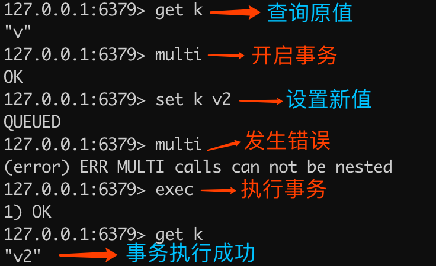
可以看出，重复执行 multi 会导致入列错误，但不会终止事务，最终查询的结果是事务执行成功了。除了重复执行 multi 命令，还有在事务状态下执行 watch 也是同样的效果，下文会详细讲解关于 watch 的内容。
入列错误导致事务结束
示例代码如下：
> get k
"v2"
> multi
OK
> set k v3
QUEUED
> set k
(error) ERR wrong number of arguments for 'set' command
> exec
(error) EXECABORT Transaction discarded because of previous errors.
> get k
"v2"
执行命令解释如下图所示：
为什么不支持事务回滚？
Redis 官方文档的解释如下：
If you have a relational databases background, the fact that Redis commands can fail during a transaction, but still Redis will execute the rest of the transaction instead of rolling back, may look odd to you.
However there are good opinions for this behavior:
- Redis commands can fail only if called with a wrong syntax (and the problem is not detectable during the command queueing), or against keys holding the wrong data type: this means that in practical terms a failing command is the result of a programming errors, and a kind of error that is very likely to be detected during development, and not in production.
- Redis is internally simplified and faster because it does not need the ability to roll back.
An argument against Redis point of view is that bugs happen, however it should be noted that in general the roll back does not save you from programming errors. For instance if a query increments a key by 2 instead of 1, or increments the wrong key, there is no way for a rollback mechanism to help. Given that no one can save the programmer from his or her errors, and that the kind of errors required for a Redis command to fail are unlikely to enter in production, we selected the simpler and faster approach of not supporting roll backs on errors.
大概的意思是，作者不支持事务回滚的原因有以下两个：
- 他认为 Redis 事务的执行时，错误通常都是编程错误造成的，这种错误通常只会出现在开发环境中，而很少会在实际的生产环境中出现，所以他认为没有必要为 Redis 开发事务回滚功能；
- 不支持事务回滚是因为这种复杂的功能和 Redis 追求的简单高效的设计主旨不符合。
这里不支持事务回滚，指的是不支持运行时错误的事务回滚。
监控
watch 命令用于客户端并发情况下，为事务提供一个乐观锁（CAS，Check And Set），也就是可以用 watch 命令来监控一个或多个变量，如果在事务的过程中，某个监控项被修改了，那么整个事务就会终止执行。
watch 基本语法如下：
watch key [key ...]
watch 示例代码如下：
> watch k
OK
> multi
OK
> set k v2
QUEUED
> exec
(nil)
> get k
"v"
注意：以上事务在执行期间，也就是开启事务（multi）之后，执行事务（exec）之前，模拟多客户端并发操作了变量 k 的值，这个时候再去执行事务，才会出现如上结果，exec 执行的结果为 nil。
可以看出，当执行 exec 返回的结果是 nil 时，表示 watch 监控的对象在事务执行的过程中被修改了。从 get k 的结果也可以印证，因为事务中设置的值 set k v2 并未正常执行。
执行流程如下图所示：
注意： watch 命令只能在客户端开启事务之前执行，在事务中执行 watch 命令会引发错误，但不会造成整个事务失败，如下代码所示：
> multi
OK
> set k v3
QUEUED
> watch k
(error) ERR WATCH inside MULTI is not allowed
> exec
1) OK
> get k
"v3"
执行命令解释如下图所示：
unwatch 命令用于清除所有之前监控的所有对象（键值对）。
unwatch 示例如下所示：
> set k v
OK
> watch k
OK
> multi
OK
> unwatch
QUEUED
> set k v2
QUEUED
> exec
1) OK
2) OK
> get k
"v2"
可以看出，即使在事务的执行过程中，k 值被修改了，因为调用了 unwatch 命令，整个事务依然会顺利执行。
代码实战
以下是事务在 Java 中的使用，代码如下：
import redis.clients.jedis.Jedis;
import redis.clients.jedis.Transaction;
public class TransactionExample {
public static void main(String[] args) {
// 创建 Redis 连接
Jedis jedis = new Jedis("xxx.xxx.xxx.xxx", 6379);
// 设置 Redis 密码
jedis.auth("xxx");
// 设置键值
jedis.set("k", "v");
// 开启监视 watch
jedis.watch("k");
// 开始事务
Transaction tx = jedis.multi();
// 命令入列
tx.set("k", "v2");
// 执行事务
tx.exec();
System.out.println(jedis.get("k"));
jedis.close();
}
}
知识点练习
以下两个客户端交替执行的结果是？
客户端一，执行如下命令：
> set k v
OK
> watch k
OK
> multi
OK
> set k v2
QUEUED
客户端二，执行如下命令：
> set k v
OK
客户端一，再执行如下命令：
> exec
此时 k 的值为多少？
答： k 的值为 v，而非 v2。
题目解析：本题考查的是 watch 命令监控时，即使把原对象的值重新赋值给了原对象，这个时候 watch 命令也会认为监控对象还是被修改了。
小结
事务为多个命令提供一次性按顺序执行的机制，与 Redis 事务相关的命令有以下五个：
- multi：开启事务
- exec：执行事务
- discard：丢弃事务
- watch：为事务提供乐观锁实现
- unwatch：取消监控（取消事务中的乐观锁）
正常情况下 Redis 事务分为三个阶段：开启事务、命令入列、执行事务。Redis 事务并不支持运行时错误的事务回滚，但在某些入列错误，如 set key 或者是 watch 监控项被修改时，提供整个事务回滚的功能。
17 Redis 键值过期操作
过期设置
Redis 中设置过期时间主要通过以下四种方式：
- expire key seconds：设置 key 在 n 秒后过期；
- pexpire key milliseconds：设置 key 在 n 毫秒后过期；
- expireat key timestamp：设置 key 在某个时间戳（精确到秒）之后过期；
- pexpireat key millisecondsTimestamp：设置 key 在某个时间戳（精确到毫秒）之后过期；
下面分别来看以上这些命令的具体实现。
expire：N 秒后过期
127.0.0.1:6379> set key value
OK
127.0.0.1:6379> expire key 100
(integer) 1
127.0.0.1:6379> ttl key
(integer) 97
其中命令 ttl 的全称是 Time To Live，表示此键值在 n 秒后过期。例如，上面的结果 97 表示 key 在 97s 后过期。
pexpire：N 毫秒后过期
127.0.0.1:6379> set key2 value2
OK
127.0.0.1:6379> pexpire key2 100000
(integer) 1
127.0.0.1:6379> pttl key2
(integer) 94524
其中 pexpire key2 100000 表示设置 key2 在 100000 毫秒（100 秒）后过期。
expireat：过期时间戳精确到秒
127.0.0.1:6379> set key3 value3
OK
127.0.0.1:6379> expireat key3 1573472683
(integer) 1
127.0.0.1:6379> ttl key3
(integer) 67
其中 expireat key3 1573472683 表示 key3 在时间戳 1573472683 后过期（精确到秒），使用 ttl 查询可以发现在 67s 后 key3 会过期。
小贴士：在 Redis 可以使用 time 命令查询当前时间的时间戳（精确到秒），示例如下：
127.0.0.1:6379> time
"1573472563"
"248426"
pexpireat：过期时间戳精确到毫秒
127.0.0.1:6379> set key4 value4
OK
127.0.0.1:6379> pexpireat key4 1573472683000
(integer) 1
127.0.0.1:6379> pttl key4
(integer) 3522
其中 pexpireat key4 1573472683000 表示 key4 在时间戳 1573472683000 后过期（精确到毫秒），使用 ttl 查询可以发现在 3522ms 后 key4 会过期。
字符串中的过期操作
字符串中几个直接操作过期时间的方法，如下列表：
- set key value ex seconds：设置键值对的同时指定过期时间（精确到秒）；
- set key value px milliseconds：设置键值对的同时指定过期时间（精确到毫秒）；
- setex key seconds valule：设置键值对的同时指定过期时间（精确到秒）。
实现示例如下。
1. set key value ex seconds
127.0.0.1:6379> set k v ex 100
OK
127.0.0.1:6379> ttl k
(integer) 97
2. set key value ex milliseconds
127.0.0.1:6379> set k2 v2 px 100000
OK
127.0.0.1:6379> pttl k2
(integer) 92483
3. setex key seconds valule
127.0.0.1:6379> setex k3 100 v3
OK
127.0.0.1:6379> ttl k3
(integer) 91
移除过期时间
使用命令： persist key 可以移除键值的过期时间，如下代码所示。
127.0.0.1:6379> ttl k3
(integer) 97
127.0.0.1:6379> persist k3
(integer) 1
127.0.0.1:6379> ttl k3
(integer) -1
可以看出第一次使用 ttl 查询 k3 会在 97s 后过期，当使用了 persist 命令之后，在查询 k3 的存活时间发现结果是 -1，它表示 k3 永不过期。
Java实现过期操作
本文将使用 Jedis 框架来实现对 Redis 过期时间的操作，如下代码所示：
public class TTLTest {
public static void main(String[] args) throws InterruptedException {
// 创建 Redis 连接
Jedis jedis = new Jedis("xxx.xxx.xxx.xxx", 6379);
// 设置 Redis 密码(如果没有密码，此行可省略)
jedis.auth("xxx");
// 存储键值对（默认情况下永不过期）
jedis.set("k", "v");
// 查询 TTL（过期时间）
Long ttl = jedis.ttl("k");
// 打印过期日志
System.out.println("过期时间：" + ttl);
// 设置 100s 后过期
jedis.expire("k", 100);
// 等待 1s 后执行
Thread.sleep(1000);
// 打印过期日志
System.out.println("执行 expire 后的 TTL=" + jedis.ttl("k"));
}
}
程序的执行结果为：
过期时间：-1
执行 expire 后的 TTL=99
可以看出使用 Jedis 来操作 Redis 的过期时间还是很方便的，可直接使用 jedis.ttl("k") 查询键值的生存时间，使用 jedis.expire("k",seconds) 方法设置过期时间（精确到秒）。
小贴士：使用 Jedis 之前，先要把 Jedis 引入到程序中，如果使用的是 Maven 项目的，直接在 pom.xml 文件中添加以下引用：
<!-- https://mvnrepository.com/artifact/redis.clients/jedis -->
<dependency>
<groupId>redis.clients</groupId>
<artifactId>jedis</artifactId>
<version>version</version>
</dependency>
更多过期操作方法，如下列表：
- pexpire(String key, long milliseconds)：设置 n 毫秒后过期；
- expireAt(String key, long unixTime)：设置某个时间戳后过期（精确到秒）；
- pexpireAt(String key, long millisecondsTimestamp)：设置某个时间戳后过期（精确到毫秒）；
- persist(String key)：移除过期时间。
完整示例代码如下：
public class TTLTest {
public static void main(String[] args) throws InterruptedException {
// 创建 Redis 连接
Jedis jedis = new Jedis("xxx.xxx.xxx.xxx", 6379);
// 设置 Redis 密码(如果没有密码，此行可省略)
jedis.auth("xxx");
// 存储键值对（默认情况下永不过期）
jedis.set("k", "v");
// 查询 TTL（过期时间）
Long ttl = jedis.ttl("k");
// 打印过期日志
System.out.println("过期时间：" + ttl);
// 设置 100s 后过期
jedis.expire("k", 100);
// 等待 1s 后执行
Thread.sleep(1000);
// 打印过期日志
System.out.println("执行 expire 后的 TTL=" + jedis.ttl("k"));
// 设置 n 毫秒后过期
jedis.pexpire("k", 100000);
// 设置某个时间戳后过期（精确到秒）
jedis.expireAt("k", 1573468990);
// 设置某个时间戳后过期（精确到毫秒）
jedis.pexpireAt("k", 1573468990000L);
// 移除过期时间
jedis.persist("k");
}
}
持久化中的过期键
上面我们讲了过期键在 Redis 正常运行中一些使用案例，接下来，我们来看 Redis 在持久化的过程中是如何处理过期键的。
Redis 持久化文件有两种格式：RDB（Redis Database）和 AOF（Append Only File），下面我们分别来看过期键在这两种格式中的呈现状态。
RDB 中的过期键
RDB 文件分为两个阶段，RDB 文件生成阶段和加载阶段。
1. RDB 文件生成
从内存状态持久化成 RDB（文件）的时候，会对 key 进行过期检查，过期的键不会被保存到新的 RDB 文件中，因此 Redis 中的过期键不会对生成新 RDB 文件产生任何影响。
2. RDB 文件加载
RDB 加载分为以下两种情况：
- 如果 Redis 是主服务器运行模式的话，在载入 RDB 文件时，程序会对文件中保存的键进行检查，过期键不会被载入到数据库中。所以过期键不会对载入 RDB 文件的主服务器造成影响；
- 如果 Redis 是从服务器运行模式的话，在载入 RDB 文件时，不论键是否过期都会被载入到数据库中。但由于主从服务器在进行数据同步时，从服务器的数据会被清空。所以一般来说，过期键对载入 RDB 文件的从服务器也不会造成影响。
RDB 文件加载的源码可以在 rdb.c 文件的 rdbLoad() 函数中找到，源码所示：
/* Check if the key already expired. This function is used when loading
* an RDB file from disk, either at startup, or when an RDB was
* received from the master. In the latter case, the master is
* responsible for key expiry. If we would expire keys here, the
* snapshot taken by the master may not be reflected on the slave.
*
* 如果服务器为主节点的话，
* 那么在键已经过期的时候，不再将它们关联到数据库中去
*/
if (server.masterhost == NULL && expiretime != -1 && expiretime < now) {
decrRefCount(key);
decrRefCount(val);
// 跳过
continue;
}
AOF 中的过期键
1. AOF 文件写入
当 Redis 以 AOF 模式持久化时，如果数据库某个过期键还没被删除，那么 AOF 文件会保留此过期键，当此过期键被删除后，Redis 会向 AOF 文件追加一条 DEL 命令来显式地删除该键值。
2. AOF 重写
执行 AOF 重写时，会对 Redis 中的键值对进行检查已过期的键不会被保存到重写后的 AOF 文件中，因此不会对 AOF 重写造成任何影响。
主从库的过期键
当 Redis 运行在主从模式下时，从库不会进行过期扫描，从库对过期的处理是被动的。也就是即使从库中的 key 过期了，如果有客户端访问从库时，依然可以得到 key 对应的值，像未过期的键值对一样返回。
从库的过期键处理依靠主服务器控制，主库在 key 到期时，会在 AOF 文件里增加一条 del 指令，同步到所有的从库，从库通过执行这条 del 指令来删除过期的 key。
小结
本文我们知道了 Redis 中的四种设置过期时间的方式：expire、pexpire、expireat、pexpireat，其中比较常用的是 expire 设置键值 n 秒后过期。
字符串中可以在添加键值的同时设置过期时间，并可以使用 persist 命令移除过期时间。同时我们也知道了过期键在 RDB 写入和 AOF 重写时都不会被记录。
过期键在主从模式下，从库对过期键的处理要完全依靠主库，主库删除过期键之后会发送 del 命令给所有的从库。
本文的知识点，如下图所示：
18 Redis 过期策略与源码分析
在 Redis 中我们可以给一些元素设置过期时间，那当它过期之后 Redis 是如何处理这些过期键呢？
过期键执行流程
Redis 之所以能知道那些键值过期，是因为在 Redis 中维护了一个字典，存储了所有设置了过期时间的键值，我们称之为过期字典。
过期键判断流程如下图所示：
过期键源码分析
过期键存储在 redisDb 结构中，源代码在 src/server.h 文件中：
/* Redis database representation. There are multiple databases identified
* by integers from 0 (the default database) up to the max configured
* database. The database number is the 'id' field in the structure. */
typedef struct redisDb {
dict *dict; /* 数据库键空间，存放着所有的键值对 */
dict *expires; /* 键的过期时间 */
dict *blocking_keys; /* Keys with clients waiting for data (BLPOP)*/
dict *ready_keys; /* Blocked keys that received a PUSH */
dict *watched_keys; /* WATCHED keys for MULTI/EXEC CAS */
int id; /* Database ID */
long long avg_ttl; /* Average TTL, just for stats */
list *defrag_later; /* List of key names to attempt to defrag one by one, gradually. */
} redisDb;
小贴士：本文的所有源码都是基于 Redis 5。
过期键数据结构如下图所示：
过期策略
Redis 会删除已过期的键值，以此来减少 Redis 的空间占用，但因为 Redis 本身是单线的，如果因为删除操作而影响主业务的执行就得不偿失了，为此 Redis 需要制定多个（过期）删除策略来保证糟糕的事情不会发生。
常见的过期策略有以下三种：
- 定时删除
- 惰性删除
- 定期删除
下面分别来看每种策略有何不同。
定时删除
在设置键值过期时间时，创建一个定时事件，当过期时间到达时，由事件处理器自动执行键的删除操作。
- **优点：**保证内存可以被尽快地释放。
- **缺点：**在 Redis 高负载的情况下或有大量过期键需要同时处理时，会造成 Redis 服务器卡顿，影响主业务执行。
惰性删除
不主动删除过期键，每次从数据库获取键值时判断是否过期，如果过期则删除键值，并返回 null。
- **优点：**因为每次访问时，才会判断过期键，所以此策略只会使用很少的系统资源。
- **缺点：**系统占用空间删除不及时，导致空间利用率降低，造成了一定的空间浪费。
源码解析
惰性删除的源码位于 src/db.c 文件的 expireIfNeeded 方法中，源码如下：
int expireIfNeeded(redisDb *db, robj *key) {
// 判断键是否过期
if (!keyIsExpired(db,key)) return 0;
if (server.masterhost != NULL) return 1;
/* 删除过期键 */
// 增加过期键个数
server.stat_expiredkeys++;
// 传播键过期的消息
propagateExpire(db,key,server.lazyfree_lazy_expire);
notifyKeyspaceEvent(NOTIFY_EXPIRED,
"expired",key,db->id);
// server.lazyfree_lazy_expire 为 1 表示异步删除（懒空间释放），反之同步删除
return server.lazyfree_lazy_expire ? dbAsyncDelete(db,key) :
dbSyncDelete(db,key);
}
// 判断键是否过期
int keyIsExpired(redisDb *db, robj *key) {
mstime_t when = getExpire(db,key);
if (when < 0) return 0; /* No expire for this key */
/* Don't expire anything while loading. It will be done later. */
if (server.loading) return 0;
mstime_t now = server.lua_caller ? server.lua_time_start : mstime();
return now > when;
}
// 获取键的过期时间
long long getExpire(redisDb *db, robj *key) {
dictEntry *de;
/* No expire? return ASAP */
if (dictSize(db->expires) == 0 ||
(de = dictFind(db->expires,key->ptr)) == NULL) return -1;
/* The entry was found in the expire dict, this means it should also
* be present in the main dict (safety check). */
serverAssertWithInfo(NULL,key,dictFind(db->dict,key->ptr) != NULL);
return dictGetSignedIntegerVal(de);
}
所有对数据库的读写命令在执行之前，都会调用 expireIfNeeded 方法判断键值是否过期，过期则会从数据库中删除，反之则不做任何处理。
惰性删除执行流程，如下图所示：
定期删除
每隔一段时间检查一次数据库，随机删除一些过期键。
Redis 默认每秒进行 10 次过期扫描，此配置可通过 Redis 的配置文件 redis.conf 进行配置，配置键为 hz 它的默认值是 hz 10。
需要注意的是：Redis 每次扫描并不是遍历过期字典中的所有键，而是采用随机抽取判断并删除过期键的形式执行的。
定期删除流程
- 从过期字典中随机取出 20 个键；
- 删除这 20 个键中过期的键；
- 如果过期 key 的比例超过 25%，重复步骤 1。
同时为了保证过期扫描不会出现循环过度，导致线程卡死现象，算法还增加了扫描时间的上限，默认不会超过 25ms。
定期删除执行流程，如下图所示：
- **优点：**通过限制删除操作的时长和频率，来减少删除操作对 Redis 主业务的影响，同时也能删除一部分过期的数据减少了过期键对空间的无效占用。
- **缺点：**内存清理方面没有定时删除效果好，同时没有惰性删除使用的系统资源少。
源码解析
定期删除的核心源码在 src/expire.c 文件下的 activeExpireCycle 方法中，源码如下：
void activeExpireCycle(int type) {
static unsigned int current_db = 0; /* 上次定期删除遍历到的数据库ID */
static int timelimit_exit = 0; /* Time limit hit in previous call? */
static long long last_fast_cycle = 0; /* 上一次执行快速定期删除的时间点 */
int j, iteration = 0;
int dbs_per_call = CRON_DBS_PER_CALL; // 每次定期删除，遍历的数据库的数量
long long start = ustime(), timelimit, elapsed;
if (clientsArePaused()) return;
if (type == ACTIVE_EXPIRE_CYCLE_FAST) {
if (!timelimit_exit) return;
// ACTIVE_EXPIRE_CYCLE_FAST_DURATION 是快速定期删除的执行时长
if (start < last_fast_cycle + ACTIVE_EXPIRE_CYCLE_FAST_DURATION*2) return;
last_fast_cycle = start;
}
if (dbs_per_call > server.dbnum || timelimit_exit)
dbs_per_call = server.dbnum;
// 慢速定期删除的执行时长
timelimit = 1000000*ACTIVE_EXPIRE_CYCLE_SLOW_TIME_PERC/server.hz/100;
timelimit_exit = 0;
if (timelimit <= 0) timelimit = 1;
if (type == ACTIVE_EXPIRE_CYCLE_FAST)
timelimit = ACTIVE_EXPIRE_CYCLE_FAST_DURATION; /* 删除操作的执行时长 */
long total_sampled = 0;
long total_expired = 0;
for (j = 0; j < dbs_per_call && timelimit_exit == 0; j++) {
int expired;
redisDb *db = server.db+(current_db % server.dbnum);
current_db++;
do {
// .......
expired = 0;
ttl_sum = 0;
ttl_samples = 0;
// 每个数据库中检查的键的数量
if (num > ACTIVE_EXPIRE_CYCLE_LOOKUPS_PER_LOOP)
num = ACTIVE_EXPIRE_CYCLE_LOOKUPS_PER_LOOP;
// 从数据库中随机选取 num 个键进行检查
while (num--) {
dictEntry *de;
long long ttl;
if ((de = dictGetRandomKey(db->expires)) == NULL) break;
ttl = dictGetSignedInteger
// 过期检查，并对过期键进行删除
if (activeExpireCycleTryExpire(db,de,now)) expired++;
if (ttl > 0) {
/* We want the average TTL of keys yet not expired. */
ttl_sum += ttl;
ttl_samples++;
}
total_sampled++;
}
total_expired += expired;
if (ttl_samples) {
long long avg_ttl = ttl_sum/ttl_samples;
if (db->avg_ttl == 0) db->avg_ttl = avg_ttl;
db->avg_ttl = (db->avg_ttl/50)*49 + (avg_ttl/50);
}
if ((iteration & 0xf) == 0) { /* check once every 16 iterations. */
elapsed = ustime()-start;
if (elapsed > timelimit) {
timelimit_exit = 1;
server.stat_expired_time_cap_reached_count++;
break;
}
}
/* 每次检查只删除 ACTIVE_EXPIRE_CYCLE_LOOKUPS_PER_LOOP/4 个过期键 */
} while (expired > ACTIVE_EXPIRE_CYCLE_LOOKUPS_PER_LOOP/4);
}
// .......
}
activeExpireCycle 方法在规定的时间，分多次遍历各个数据库，从过期字典中随机检查一部分过期键的过期时间，删除其中的过期键。
这个函数有两种执行模式，一个是快速模式一个是慢速模式，体现是代码中的 timelimit 变量，这个变量是用来约束此函数的运行时间的。快速模式下 timelimit 的值是固定的，等于预定义常量 ACTIVE_EXPIRE_CYCLE_FAST_DURATION，慢速模式下，这个变量的值是通过 1000000*ACTIVE_EXPIRE_CYCLE_SLOW_TIME_PERC/server.hz/100 计算的。
Redis 使用的过期策略
Redis 使用的是惰性删除加定期删除的过期策略。
小结
通过本文可知 Redis 是通过设置过期字典的形式来判断过期键的，Redis 采用的是惰性删除和定期删除的形式删除过期键的，Redis 的定期删除策略并不会遍历删除每个过期键，而是采用随机抽取的方式删除过期键，同时为了保证过期扫描不影响 Redis 主业务，Redis 的定期删除策略中还提供了最大执行时间，以保证 Redis 正常并高效地运行。
19 Redis 管道技术——Pipeline
管道技术（Pipeline）是客户端提供的一种批处理技术，用于一次处理多个 Redis 命令，从而提高整个交互的性能。
通常情况下 Redis 是单行执行的，客户端先向服务器发送请求，服务端接收并处理请求后再把结果返回给客户端，这种处理模式在非频繁请求时不会有任何问题。
但如果出现集中大批量的请求时，因为每个请求都要经历先请求再响应的过程，这就会造成网络资源浪费，此时就需要管道技术来把所有的命令整合一次发给服务端，再一次响应给客户端，这样就能大大的提升了 Redis 的响应速度。
普通命令模式，如下图所示：
管道模式，如下图所示：
小贴士：管道中命令越多，管道技术的作用就更大，相比于普通模式来说执行效率就越高。
管道技术解决了什么问题？
管道技术解决了多个命令集中请求时造成网络资源浪费的问题，加快了 Redis 的响应速度，让 Redis 拥有更高的运行速度。但要注意的一点是，管道技术本质上是客户端提供的功能，而非 Redis 服务器端的功能。
管道技术使用
本文我们使用 Jedis 客户端提供的 Pipeline 对象来实现管道技术。首先先获取 Pipeline 对象，再为 Pipeline 对象设置需要执行的命令，最后再使用 sync() 方法或 syncAndReturnAll() 方法来统一执行这些命令，代码如下：
public class PipelineExample {
public static void main(String[] args) {
Jedis jedis = new Jedis("127.0.0.1", 6379);
// 记录执行开始时间
long beginTime = System.currentTimeMillis();
// 获取 Pipeline 对象
Pipeline pipe = jedis.pipelined();
// 设置多个 Redis 命令
for (int i = 0; i < 100; i++) {
pipe.set("key" + i, "val" + i);
pipe.del("key"+i);
}
// 执行命令
pipe.sync();
// 记录执行结束时间
long endTime = System.currentTimeMillis();
System.out.println("执行耗时：" + (endTime - beginTime) + "毫秒");
}
}
以上程序执行结果如下：
执行耗时：297毫秒
如果要接收管道所有命令的执行结果，可使用 syncAndReturnAll() 方法，示例代码如下：
public class PipelineExample {
public static void main(String[] args) {
Jedis jedis = new Jedis("127.0.0.1", 6379);
// 获取 Pipeline 对象
Pipeline pipe = jedis.pipelined();
// 设置多个 Redis 命令
for (int i = 0; i < 100; i++) {
pipe.set("key" + i, "val" + i);
}
// 执行命令并返回结果
List<Object> res = pipe.syncAndReturnAll();
for (Object obj : res) {
// 打印结果
System.out.println(obj);
}
}
}
管道技术 VS 普通命令
上面使用管道技术执行一个 for 循环所用的时间为 297 毫秒，接下来我们用普通的命令执行此循环，看下程序的执行时间，代码如下：
public class PipelineExample {
public static void main(String[] args) {
Jedis jedis = new Jedis("127.0.0.1", 6379);
// 记录执行开始时间
long beginTime = System.currentTimeMillis();
for (int i = 0; i < 100; i++) {
jedis.set("key" + i, "val" + i);
jedis.del("key"+i);
}
// 记录执行结束时间
long endTime = System.currentTimeMillis();
System.out.println("执行耗时：" + (endTime - beginTime) + "毫秒");
}
}
以上程序执行结果如下：
执行耗时：17276毫秒
结论
从上面的结果可以看出，管道的执行时间是 297 毫秒，而普通命令执行时间是 17276 毫秒，管道技术要比普通的执行快了 58 倍。
管道技术需要注意的事项
管道技术虽然有它的优势，但在使用时还需注意以下几个细节：
- 发送的命令数量不会被限制，但输入缓存区也就是命令的最大存储体积为 1GB，当发送的命令超过此限制时，命令不会被执行，并且会被 Redis 服务器端断开此链接；
- 如果管道的数据过多可能会导致客户端的等待时间过长，导致网络阻塞；
- 部分客户端自己本身也有缓存区大小的设置，如果管道命令没有没执行或者是执行不完整，可以排查此情况或较少管道内的命令重新尝试执行。
小结
使用管道技术可以解决多个命令执行时的网络等待，它是把多个命令整合到一起发送给服务器端处理之后统一返回给客户端，这样就免去了每条命令执行后都要等待的情况，从而有效地提高了程序的执行效率，但使用管道技术也要注意避免发送的命令过大，或管道内的数据太多而导致的网络阻塞。
20 查询附近的人——GEO
受过高等教育的我们都知道，我们所处的任何位置都可以用经度和纬度来标识，经度的范围 -180 到 180，纬度的范围为 -90 到 90。纬度以赤道为界，赤道以南为负数，赤道以北为正数；经度以本初子午线（英国格林尼治天文台）为界，东边为正数，西边为负数。
Redis 在 3.2 版本中增加了 GEO 类型用于存储和查询地理位置，关于 GEO 的命令不多，主要包含以下 6 个：
- geoadd：添加地理位置
- geopos：查询位置信息
- geodist：距离统计
- georadius：查询某位置内的其他成员信息
- geohash：查询位置的哈希值
- zrem：删除地理位置
下面我们分别来看这些命令的使用。
基础使用
添加地理位置
我们先用百度地图提供的经纬度查询工具，地址：
如下图所示：
找了以下 4 个地点，添加到 Redis 中：
- 天安门：116.404269,39.913164
- 月坛公园：116.36,39.922461
- 北京欢乐谷：116.499705,39.874635
- 香山公园：116.193275,39.996348
代码如下：
127.0.0.1:6379> geoadd site 116.404269 39.913164 tianan
(integer) 1
127.0.0.1:6379> geoadd site 116.36 39.922461 yuetan
(integer) 1
127.0.0.1:6379> geoadd site 116.499705 39.874635 huanle
(integer) 1
127.0.0.1:6379> geoadd site 116.193275 39.996348 xiangshan
(integer) 1
相关语法：
geoadd key longitude latitude member [longitude latitude member ...]
重点参数说明如下：
- longitude 表示经度
- latitude 表示纬度
- member 是为此经纬度起的名字
此命令支持一次添加一个或多个位置信息。
查询位置信息
127.0.0.1:6379> geopos site tianan
1) 1) "116.40541702508926392"
2) "39.91316289865137179"
相关语法：
geopos key member [member ...]
此命令支持查看一个或多个位置信息。
距离统计
127.0.0.1:6379> geodist site tianan yuetan km
"3.9153"
可以看出天安门距离月坛公园的直线距离大概是 3.9 km，我们打开地图使用工具测试一下咱们的统计结果是否准确，如下图所示：
可以看出 Redis 的统计和使用地图工具统计的距离是完全吻合的。
注意：此命令统计的距离为两个位置的直线距离。
相关语法：
geodist key member1 member2 [unit]
unit 参数表示统计单位，它可以设置以下值：
- m：以米为单位，默认单位；
- km：以千米为单位；
- mi：以英里为单位；
- ft：以英尺为单位。
查询某位置内的其他成员信息
127.0.0.1:6379> georadius site 116.405419 39.913164 5 km
1) "tianan"
2) "yuetan"
此命令的意思是查询天安门（116.405419,39.913164）附近 5 公里范围内的成员列表。
相关语法：
georadius key longitude latitude radius m|km|ft|mi [WITHCOORD] [WITHDIST] [WITHHASH] [COUNT count] [ASC|DESC]
可选参数说明如下。
1. WITHCOORD
说明：返回满足条件位置的经纬度信息。
示例代码：
127.0.0.1:6379> georadius site 116.405419 39.913164 5 km withcoord
1) 1) "tianan"
2) 1) "116.40426903963088989"
2) "39.91316289865137179"
2) 1) "yuetan"
2) 1) "116.36000186204910278"
2) "39.92246025586381819"
2. WITHDIST
说明：返回满足条件位置与查询位置的直线距离。
示例代码：
127.0.0.1:6379> georadius site 116.405419 39.913164 5 km withdist
1) 1) "tianan"
2) "0.0981"
2) 1) "yuetan"
2) "4.0100"
3. WITHHASH
说明：返回满足条件位置的哈希信息。
示例代码：
127.0.0.1:6379> georadius site 116.405419 39.913164 5 km withhash
1) 1) "tianan"
2) (integer) 4069885552230465
2) 1) "yuetan"
2) (integer) 4069879797297521
4. COUNT count
说明：指定返回满足条件位置的个数。
例如，指定返回一条满足条件的信息，代码如下：
127.0.0.1:6379> georadius site 116.405419 39.913164 5 km count 1
1) "tianan"
5. ASC|DESC
说明：从近到远|从远到近排序返回。
示例代码：
127.0.0.1:6379> georadius site 116.405419 39.913164 5 km desc
1) "yuetan"
2) "tianan"
127.0.0.1:6379> georadius site 116.405419 39.913164 5 km asc
1) "tianan"
2) "yuetan"
当然以上这些可选参数也可以一起使用，例如以下代码：
127.0.0.1:6379> georadius site 116.405419 39.913164 5 km withdist desc
1) 1) "yuetan"
2) "4.0100"
2) 1) "tianan"
2) "0.0981"
5. 查询哈希值
127.0.0.1:6379> geohash site tianan
1) "wx4g0cgp000"
相关语法：
geohash key member [member ...]
此命令支持查询一个或多个地址的哈希值。
6. 删除地理位置
127.0.0.1:6379> zrem site xiaoming
(integer) 1
相关语法：
zrem key member [member ...]
此命令支持删除一个或多个位置信息。
代码实战
下面我们用 Java 代码，来实现查询附近的人，完整代码如下：
import redis.clients.jedis.GeoCoordinate;
import redis.clients.jedis.GeoRadiusResponse;
import redis.clients.jedis.GeoUnit;
import redis.clients.jedis.Jedis;
import java.util.HashMap;
import java.util.List;
import java.util.Map;
public class GeoHashExample {
public static void main(String[] args) {
Jedis jedis = new Jedis("127.0.0.1", 6379);
Map<String, GeoCoordinate> map = new HashMap<>();
// 添加小明的位置
map.put("xiaoming", new GeoCoordinate(116.404269, 39.913164));
// 添加小红的位置
map.put("xiaohong", new GeoCoordinate(116.36, 39.922461));
// 添加小美的位置
map.put("xiaomei", new GeoCoordinate(116.499705, 39.874635));
// 添加小二
map.put("xiaoer", new GeoCoordinate(116.193275, 39.996348));
jedis.geoadd("person", map);
// 查询小明和小红的直线距离
System.out.println("小明和小红相距：" + jedis.geodist("person", "xiaoming",
"xiaohong", GeoUnit.KM) + " KM");
// 查询小明附近 5 公里的人
List<GeoRadiusResponse> res = jedis.georadiusByMemberReadonly("person", "xiaoming",
5, GeoUnit.KM);
for (int i = 1; i < res.size(); i++) {
System.out.println("小明附近的人：" + res.get(i).getMemberByString());
}
}
}
以上程序执行的结果如下：
小明和小红相距：3.9153 KM
小明附近的人：xiaohong
应用场景
Redis 中的 GEO 经典使用场景如下：
- 查询附近的人、附近的地点等；
- 计算相关的距离信息。
小结
GEO 是 Redis 3.2 版本中新增的功能，只有升级到 3.2+ 才能使用，GEO 本质上是基于 ZSet 实现的，这点在 Redis 源码找到相关信息，我们可以 GEO 使用实现查找附近的人或者附近的地点，还可以用它来计算两个位置相隔的直线距离。
21 游标迭代器（过滤器）——Scan
一个问题引发的「血案」
曾经发生过这样一件事，我们的 Redis 服务器存储了海量的数据，其中登录用户信息是以 user_token_id 的形式存储的。运营人员想要当前所有的用户登录信息，然后悲剧就发生了：因为我们的工程师使用了 keys user_token_* 来查询对应的用户，结果导致 Redis 假死不可用，以至于影响到线上的其他业务接连发生问题，然后就收到了一堆的系统预警短信。并且这个假死的时间是和存储的数据成正比的，数据量越大假死的时间就越长，导致的故障时间也越长。
那如何避免这个问题呢？
问题的解决方案
在 Redis 2.8 之前，我们只能使用 keys 命令来查询我们想要的数据，但这个命令存在两个缺点：
- 此命令没有分页功能，我们只能一次性查询出所有符合条件的 key 值，如果查询结果非常巨大，那么得到的输出信息也会非常多；
- keys 命令是遍历查询，因此它的查询时间复杂度是 o(n)，所以数据量越大查询时间就越长。
然而，比较幸运的是在 Redis 2.8 时推出了 Scan，解决了我们这些问题，下面来看 Scan 的具体使用。
Scan 命令使用
我们先来模拟海量数据，使用 Pipeline 添加 10w 条数据，Java 代码实现如下：
import redis.clients.jedis.Jedis;
import redis.clients.jedis.Pipeline;
import utils.JedisUtils;
public class ScanExample {
public static void main(String[] args) {
// 添加 10w 条数据
initData();
}
public static void initData(){
Jedis jedis = JedisUtils.getJedis();
Pipeline pipe = jedis.pipelined();
for (int i = 1; i < 100001; i++) {
pipe.set("user_token_" + i, "id" + i);
}
// 执行命令
pipe.sync();
System.out.println("数据插入完成");
}
}
我们来查询用户 id 为 9999* 的数据，Scan 命令使用如下：
127.0.0.1:6379> scan 0 match user_token_9999* count 10000
1) "127064"
2) 1) "user_token_99997"
127.0.0.1:6379> scan 127064 match user_token_9999* count 10000
1) "1740"
2) 1) "user_token_9999"
127.0.0.1:6379> scan 1740 match user_token_9999* count 10000
1) "21298"
2) 1) "user_token_99996"
127.0.0.1:6379> scan 21298 match user_token_9999* count 10000
1) "65382"
2) (empty list or set)
127.0.0.1:6379> scan 65382 match user_token_9999* count 10000
1) "78081"
2) 1) "user_token_99998"
2) "user_token_99992"
127.0.0.1:6379> scan 78081 match user_token_9999* count 10000
1) "3993"
2) 1) "user_token_99994"
2) "user_token_99993"
127.0.0.1:6379> scan 3993 match user_token_9999* count 10000
1) "13773"
2) 1) "user_token_99995"
127.0.0.1:6379> scan 13773 match user_token_9999* count 10000
1) "47923"
2) (empty list or set)
127.0.0.1:6379> scan 47923 match user_token_9999* count 10000
1) "59751"
2) 1) "user_token_99990"
2) "user_token_99991"
3) "user_token_99999"
127.0.0.1:6379> scan 59751 match user_token_9999* count 10000
1) "0"
2) (empty list or set)
从以上的执行结果，我们看出两个问题：
- 查询的结果为空，但游标值不为 0，表示遍历还没结束；
- 设置的是 count 10000，但每次返回的数量都不是 10000，且不固定，这是因为 count 只是限定服务器单次遍历的字典槽位数量（约等于），而不是规定返回结果的 count 值。
相关语法：
scan cursor [MATCH pattern] [COUNT count]
其中：
- cursor：光标位置，整数值，从 0 开始，到 0 结束，查询结果是空，但游标值不为 0，表示遍历还没结束；
- match pattern：正则匹配字段；
- count：限定服务器单次遍历的字典槽位数量（约等于），只是对增量式迭代命令的一种提示（hint），并不是查询结果返回的最大数量，它的默认值是 10。
代码实战
本文我们使用 Java 代码来实现 Scan 的查询功能，代码如下：
import redis.clients.jedis.Jedis;
import redis.clients.jedis.Pipeline;
import redis.clients.jedis.ScanParams;
import redis.clients.jedis.ScanResult;
import utils.JedisUtils;
public class ScanExample {
public static void main(String[] args) {
Jedis jedis = JedisUtils.getJedis();
// 定义 match 和 count 参数
ScanParams params = new ScanParams();
params.count(10000);
params.match("user_token_9999*");
// 游标
String cursor = "0";
while (true) {
ScanResult<String> res = jedis.scan(cursor, params);
if (res.getCursor().equals("0")) {
// 表示最后一条
break;
}
cursor = res.getCursor(); // 设置游标
for (String item : res.getResult()) {
// 打印查询结果
System.out.println("查询结果：" + item);
}
}
}
}
以上程序执行结果如下：
查询结果：user_token_99997
查询结果：user_token_9999
查询结果：user_token_99996
查询结果：user_token_99998
查询结果：user_token_99992
查询结果：user_token_99994
查询结果：user_token_99993
查询结果：user_token_99995
查询结果：user_token_99990
查询结果：user_token_99991
查询结果：user_token_99999
Scan 相关命令
Scan 是一个系列指令，除了 Scan 之外，还有以下 3 个命令：
- HScan 遍历字典游标迭代器
- SScan 遍历集合的游标迭代器
- ZScan 遍历有序集合的游标迭代器
来看这些命令的具体使用。
HScan 使用
127.0.0.1:6379> hscan myhash 0 match k2* count 10
1) "0"
2) 1) "k2"
2) "v2"
相关语法：
hscan key cursor [MATCH pattern] [COUNT count]
SScan 使用
127.0.0.1:6379> sscan myset 0 match v2* count 20
1) "0"
2) 1) "v2"
相关语法：
sscan key cursor [MATCH pattern] [COUNT count]
ZScan 使用
127.0.0.1:6379> zscan zset 0 match red* count 20
1) "0"
2) 1) "redis"
2) "10"
相关语法：
zscan key cursor [MATCH pattern] [COUNT count]
Scan 说明
官方对 Scan 命令的描述信息如下。
Scan guarantees
The SCAN command, and the other commands in the SCAN family, are able to provide to the user a set of guarantees associated to full iterations.
- A full iteration always retrieves all the elements that were present in the collection from the start to the end of a full iteration. This means that if a given element is inside the collection when an iteration is started, and is still there when an iteration terminates, then at some point SCANreturned it to the user.
- A full iteration never returns any element that was NOT present in the collection from the start to the end of a full iteration. So if an element was removed before the start of an iteration, and is never added back to the collection for all the time an iteration lasts, SCAN ensures that this element will never be returned.
However because SCAN has very little state associated (just the cursor) it has the following drawbacks:
- A given element may be returned multiple times. It is up to the application to handle the case of duplicated elements, for example only using the returned elements in order to perform operations that are safe when re-applied multiple times.
- Elements that were not constantly present in the collection during a full iteration, may be returned or not: it is undefined.
官方文档地址：
翻译为中文的含义是：Scan 及它的相关命令可以保证以下查询规则。
- 它可以完整返回开始到结束检索集合中出现的所有元素，也就是在整个查询过程中如果这些元素没有被删除，且符合检索条件，则一定会被查询出来；
- 它可以保证不会查询出，在开始检索之前删除的那些元素。
然后，Scan 命令包含以下缺点：
- 一个元素可能被返回多次，需要客户端来实现去重；
- 在迭代过程中如果有元素被修改，那么修改的元素能不能被遍历到不确定。
小结
通过本文我们可以知道 Scan 包含以下四个指令：
- Scan：用于检索当前数据库中所有数据；
- HScan：用于检索哈希类型的数据；
- SScan：用于检索集合类型中的数据；
- ZScan：由于检索有序集合中的数据。
Scan 具备以下几个特点：
- Scan 可以实现 keys 的匹配功能；
- Scan 是通过游标进行查询的不会导致 Redis 假死；
- Scan 提供了 count 参数，可以规定遍历的数量；
- Scan 会把游标返回给客户端，用户客户端继续遍历查询；
- Scan 返回的结果可能会有重复数据，需要客户端去重；
- 单次返回空值且游标不为 0，说明遍历还没结束；
- Scan 可以保证在开始检索之前，被删除的元素一定不会被查询出来；
- 在迭代过程中如果有元素被修改， Scan 不保证能查询出相关的元素。
22 优秀的基数统计算法——HyperLogLog
为什么要使用 HyperLogLog？
在我们实际开发的过程中，可能会遇到这样一个问题，当我们需要统计一个大型网站的独立访问次数时，该用什么的类型来统计？
如果我们使用 Redis 中的集合来统计，当它每天有数千万级别的访问时，将会是一个巨大的问题。因为这些访问量不能被清空，我们运营人员可能会随时查看这些信息，那么随着时间的推移，这些统计数据所占用的空间会越来越大，逐渐超出我们能承载最大空间。
例如，我们用 IP 来作为独立访问的判断依据，那么我们就要把每个独立 IP 进行存储，以 IP4 来计算，IP4 最多需要 15 个字节来存储信息，例如：110.110.110.110。当有一千万个独立 IP 时，所占用的空间就是 15 bit*10000000 约定于 143MB，但这只是一个页面的统计信息，假如我们有 1 万个这样的页面，那我们就需要 1T 以上的空间来存储这些数据，而且随着 IP6 的普及，这个存储数字会越来越大，那我们就不能用集合的方式来存储了，这个时候我们需要开发新的数据类型 HyperLogLog 来做这件事了。
HyperLogLog 介绍
HyperLogLog（下文简称为 HLL）是 Redis 2.8.9 版本添加的数据结构，它用于高性能的基数（去重）统计功能，它的缺点就是存在极低的误差率。
HLL 具有以下几个特点：
- 能够使用极少的内存来统计巨量的数据，它只需要 12K 空间就能统计 2^64 的数据；
- 统计存在一定的误差，误差率整体较低，标准误差为 0.81%；
- 误差可以被设置辅助计算因子进行降低。
基础使用
HLL 的命令只有 3 个，但都非常的实用，下面分别来看。
添加元素
127.0.0.1:6379> pfadd key "redis"
(integer) 1
127.0.0.1:6379> pfadd key "java" "sql"
(integer) 1
相关语法：
pfadd key element [element ...]
此命令支持添加一个或多个元素至 HLL 结构中。
统计不重复的元素
127.0.0.1:6379> pfadd key "redis"
(integer) 1
127.0.0.1:6379> pfadd key "sql"
(integer) 1
127.0.0.1:6379> pfadd key "redis"
(integer) 0
127.0.0.1:6379> pfcount key
(integer) 2
从 pfcount 的结果可以看出，在 HLL 结构中键值为 key 的元素，有 2 个不重复的值：redis 和 sql，可以看出结果还是挺准的。
相关语法：
pfcount key [key ...]
此命令支持统计一个或多个 HLL 结构。
合并一个或多个 HLL 至新结构
新增 k 和 k2 合并至新结构 k3 中，代码如下：
127.0.0.1:6379> pfadd k "java" "sql"
(integer) 1
127.0.0.1:6379> pfadd k2 "redis" "sql"
(integer) 1
127.0.0.1:6379> pfmerge k3 k k2
OK
127.0.0.1:6379> pfcount k3
(integer) 3
相关语法：
pfmerge destkey sourcekey [sourcekey ...]
pfmerge 使用场景
当我们需要合并两个或多个同类页面的访问数据时，我们可以使用 pfmerge 来操作。
代码实战
接下来我们使用 Java 代码来实现 HLL 的三个基础功能，代码如下：
import redis.clients.jedis.Jedis;
public class HyperLogLogExample {
public static void main(String[] args) {
Jedis jedis = new Jedis("127.0.0.1", 6379);
// 添加元素
jedis.pfadd("k", "redis", "sql");
jedis.pfadd("k", "redis");
// 统计元素
long count = jedis.pfcount("k");
// 打印统计元素
System.out.println("k：" + count);
// 合并 HLL
jedis.pfmerge("k2", "k");
// 打印新 HLL
System.out.println("k2：" + jedis.pfcount("k2"));
}
}
以上代码执行结果如下：
k：2
k2：2
HLL 算法原理
HyperLogLog 算法来源于论文 HyperLogLog the analysis of a near-optimal cardinality estimation algorithm，想要了解 HLL 的原理，先要从伯努利试验说起，伯努利实验说的是抛硬币的事。一次伯努利实验相当于抛硬币，不管抛多少次只要出现一个正面，就称为一次伯努利实验。
我们用 k 来表示每次抛硬币的次数，n 表示第几次抛的硬币，用 k_max 来表示抛硬币的最高次数，最终根据估算发现 n 和 k_max 存在的关系是 n=2^(k_max)，但同时我们也发现了另一个问题当试验次数很小的时候，这种估算方法的误差会很大，例如我们进行以下 3 次实验：
- 第 1 次试验：抛 3 次出现正面，此时 k=3，n=1；
- 第 2 次试验：抛 2 次出现正面，此时 k=2，n=2；
- 第 3 次试验：抛 6 次出现正面，此时 k=6，n=3。
对于这三组实验来说，k_max=6，n=3，但放入估算公式明显 3≠2^6。为了解决这个问题 HLL 引入了分桶算法和调和平均数来使这个算法更接近真实情况。
分桶算法是指把原来的数据平均分为 m 份，在每段中求平均数在乘以 m，以此来消减因偶然性带来的误差，提高预估的准确性，简单来说就是把一份数据分为多份，把一轮计算，分为多轮计算。
而调和平均数指的是使用平均数的优化算法，而非直接使用平均数。
例如小明的月工资是 1000 元，而小王的月工资是 100000 元，如果直接取平均数，那小明的平均工资就变成了 (1000+100000)/2=50500 元，这显然是不准确的，而使用调和平均数算法计算的结果是 2/(1/1000+1/100000)≈1998 元，显然此算法更符合实际平均数。
所以综合以上情况，在 Redis 中使用 HLL 插入数据，相当于把存储的值经过 hash 之后，再将 hash 值转换为二进制，存入到不同的桶中，这样就可以用很小的空间存储很多的数据，统计时再去相应的位置进行对比很快就能得出结论，这就是 HLL 算法的基本原理，想要更深入的了解算法及其推理过程，可以看去原版的论文，链接地址在文末。
小结
当需要做大量数据统计时，普通的集合类型已经不能满足我们的需求了，这个时候我们可以借助 Redis 2.8.9 中提供的 HyperLogLog 来统计，它的优点是只需要使用 12k 的空间就能统计 2^64 的数据，但它的缺点是存在 0.81% 的误差，HyperLogLog 提供了三个操作方法 pfadd 添加元素、pfcount 统计元素和 pfmerge 合并元素。
参考文献
23 内存淘汰机制与算法
在本文开始之前，我们先要明白：在 Redis 中，过期策略和内存淘汰策略两个完全不同的概念，但很多人会把两者搞混。
首先，Redis 过期策略指的是 Redis 使用那种策略，来删除已经过期的键值对；而 Redis 内存淘汰机制指的是，当 Redis 运行内存已经超过 Redis 设置的最大内存之后，将采用什么策略来删除符合条件的键值对，以此来保障 Redis 高效的运行。
过期策略前面的文章，我们已经详细地讲过了，本文我们重点来看 Redis 的内存淘汰机制。
Redis 最大运行内存
只有在 Redis 的运行内存达到了某个阀值，才会触发内存淘汰机制，这个阀值就是我们设置的最大运行内存，此值在 Redis 的配置文件中可以找到，配置项为 maxmemory。
内存淘汰执行流程，如下图所示：
查询最大运行内存
我们可以使用命令 config get maxmemory 来查看设置的最大运行内存，命令如下：
127.0.0.1:6379> config get maxmemory
1) "maxmemory"
2) "0"
我们发现此值竟然是 0，这是 64 位操作系统默认的值，当 maxmemory 为 0 时，表示没有内存大小限制。
小贴士：32 位操作系统，默认的最大内存值是 3GB。
内存淘汰策略
查看 Redis 内存淘汰策略
我们可以使用 config get maxmemory-policy 命令，来查看当前 Redis 的内存淘汰策略，命令如下：
127.0.0.1:6379> config get maxmemory-policy
1) "maxmemory-policy"
2) "noeviction"
可以看出此 Redis 使用的是 noeviction 类型的内存淘汰机制，它表示当运行内存超过最大设置内存时，不淘汰任何数据，但新增操作会报错。
内存淘汰策略分类
早期版本的 Redis 有以下 6 种淘汰策略：
- noeviction：不淘汰任何数据，当内存不足时，新增操作会报错，Redis 默认内存淘汰策略；
- allkeys-lru：淘汰整个键值中最久未使用的键值；
- allkeys-random：随机淘汰任意键值;
- volatile-lru：淘汰所有设置了过期时间的键值中最久未使用的键值；
- volatile-random：随机淘汰设置了过期时间的任意键值；
- volatile-ttl：优先淘汰更早过期的键值。
在 Redis 4.0 版本中又新增了 2 种淘汰策略：
- volatile-lfu：淘汰所有设置了过期时间的键值中，最少使用的键值；
- allkeys-lfu：淘汰整个键值中最少使用的键值。
其中 allkeys-xxx 表示从所有的键值中淘汰数据，而 volatile-xxx 表示从设置了过期键的键值中淘汰数据。
修改 Redis 内存淘汰策略
设置内存淘汰策略有两种方法，这两种方法各有利弊，需要使用者自己去权衡。
- 方式一：通过“config set maxmemory-policy 策略”命令设置。它的优点是设置之后立即生效，不需要重启 Redis 服务，缺点是重启 Redis 之后，设置就会失效。
- 方式二：通过修改 Redis 配置文件修改，设置“maxmemory-policy 策略”，它的优点是重启 Redis 服务后配置不会丢失，缺点是必须重启 Redis 服务，设置才能生效。
内存淘汰算法
从内测淘汰策略分类上，我们可以得知，除了随机删除和不删除之外，主要有两种淘汰算法：LRU 算法和 LFU 算法。
LRU 算法
LRU 全称是 Least Recently Used 译为最近最少使用，是一种常用的页面置换算法，选择最近最久未使用的页面予以淘汰。
1. LRU 算法实现
LRU 算法需要基于链表结构，链表中的元素按照操作顺序从前往后排列，最新操作的键会被移动到表头，当需要内存淘汰时，只需要删除链表尾部的元素即可。
2. 近 LRU 算法
Redis 使用的是一种近似 LRU 算法，目的是为了更好的节约内存，它的实现方式是给现有的数据结构添加一个额外的字段，用于记录此键值的最后一次访问时间，Redis 内存淘汰时，会使用随机采样的方式来淘汰数据，它是随机取 5 个值（此值可配置），然后淘汰最久没有使用的那个。
3. LRU 算法缺点
LRU 算法有一个缺点，比如说很久没有使用的一个键值，如果最近被访问了一次，那么它就不会被淘汰，即使它是使用次数最少的缓存，那它也不会被淘汰，因此在 Redis 4.0 之后引入了 LFU 算法，下面我们一起来看。
LFU 算法
LFU 全称是 Least Frequently Used 翻译为最不常用的，最不常用的算法是根据总访问次数来淘汰数据的，它的核心思想是“如果数据过去被访问多次，那么将来被访问的频率也更高”。
LFU 解决了偶尔被访问一次之后，数据就不会被淘汰的问题，相比于 LRU 算法也更合理一些。
在 Redis 中每个对象头中记录着 LFU 的信息，源码如下：
typedef struct redisObject {
unsigned type:4;
unsigned encoding:4;
unsigned lru:LRU_BITS; /* LRU time (relative to global lru_clock) or
* LFU data (least significant 8 bits frequency
* and most significant 16 bits access time). */
int refcount;
void *ptr;
} robj;
在 Redis 中 LFU 存储分为两部分，16 bit 的 ldt（last decrement time）和 8 bit 的 logc（logistic counter）。
- logc 是用来存储访问频次，8 bit 能表示的最大整数值为 255，它的值越小表示使用频率越低，越容易淘汰；
- ldt 是用来存储上一次 logc 的更新时间。
小结
通过本文我们了解到，Redis 内存淘汰策略和过期回收策略是完全不同的概念，内存淘汰策略是解决 Redis 运行内存过大的问题的，通过与 maxmemory 比较，决定要不要淘汰数据，根据 maxmemory-policy 参数，决定使用何种淘汰策略，在 Redis 4.0 之后已经有 8 种淘汰策略了，默认的策略是 noeviction 当内存超出时不淘汰任何键值，只是新增操作会报错。
24 消息队列——发布订阅模式
在 Redis 中提供了专门的类型：Publisher（发布者）和 Subscriber（订阅者）来实现消息队列。
在文章开始之前，先来介绍消息队列中有几个基础概念，以便大家更好的理解本文的内容。
首先，发布消息的叫做发布方或发布者，也就是消息的生产者，而接收消息的叫做消息的订阅方或订阅者，也就是消费者，用来处理生产者发布的消息。
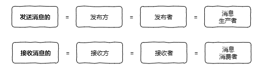
除了发布和和订阅者，在消息队列中还有一个重要的概念：channel 意为频道或通道，可以理解为某个消息队列的名称，首先消费者先要订阅某个 channel，然后当生产者把消息发送到这个 channel 中时，消费者就可以正常接收到消息了，如下图所示：
普通订阅与发布
消息队列有两个重要的角色，一个是发送者，另一个就是订阅者，对应的命令如下：
- 发布消息：publish channel "message"
- 订阅消息：subscribe channel
下面我们来看具体的命令实现。
订阅消息
127.0.0.1:6379> subscribe channel #订阅消息channel
Reading messages...
1) "subscribe"
2) "channel"
3) (integer) 1
相关语法：
subscribe channel [channel ...]
此命令支持订阅一个或多个频道的命令，也就是说一个订阅者可以订阅多个频道。例如，某个客户端订阅了两个频道 channel 和 channel2，当两个发布者分别推送消息后，订阅者的信息输出如下：
127.0.0.1:6379> subscribe channel channel2 #订阅 channel 和 channel2
Reading messages... (press Ctrl-C to quit)
1) "subscribe"
2) "channel"
3) (integer) 1
1) "subscribe"
2) "channel2"
3) (integer) 2
1) "message"
2) "channel" # 收到 channel 消息
3) "message 1."
1) "message"
2) "channel2" # 收到 channel2 消息
3) "message 2."
可以看出此订阅者可以收到来自两个频道的消息推送。
发送消息
127.0.0.1:6379> publish channel "hello,redis." #发布消息
(integer) 1
相关语法：
publish channel message
最后的返回值表示成功发送给几个订阅方，1 表示成功发给了一个订阅者，这个数字可以是 0~n，这是由订阅者的数量决定的。
例如，当有两个订阅者时，推送的结果为 2，如下代码所示。
订阅者一：
127.0.0.1:6379> subscribe channel
Reading messages... (press Ctrl-C to quit)
1) "subscribe"
2) "channel"
3) (integer) 1
订阅者二：
127.0.0.1:6379> subscribe channel
Reading messages... (press Ctrl-C to quit)
1) "subscribe"
2) "channel"
3) (integer) 1
发送消息：
127.0.0.1:6379> publish channel "message"
(integer) 2
可以看出，此消息已成功发给两个订阅者，结果也变成 2 了。
主题订阅
上面介绍了普通的订阅与发布模式，但如果我要订阅某一个类型的消息就不适用了，例如我要订阅日志类的消息队列，它们的命名都是 logXXX，这个时候就需要使用 Redis 提供的另一个功能 Pattern Subscribe 主题订阅，这种方式可以使用 * 来匹配多个频道，如下图所示：
主题模式的具体实现代码如下，订阅者：
127.0.0.1:6379> psubscribe log_* #主题订阅 log_*
1) "psubscribe"
2) "log_*"
3) (integer) 1
1) "pmessage"
2) "log_*"
3) "log_user" #接收到频道 log_user 的消息推送
4) "user message."
1) "pmessage"
2) "log_*"
3) "log_sys" #接收到频道 log_sys 的消息推送
4) "sys message."
1) "pmessage"
2) "log_*"
3) "log_db" #接收到频道 log_db 的消息推送
4) "db message"
从上面的运行结果，可以看出使用命令 psubscribe log_* 可以接收到所有频道包含 log_XXX 的消息。
相关语法：
psubscribe pattern [pattern ...]
生产者的代码如下：
127.0.0.1:6379> publish log_user "user message."
(integer) 1
127.0.0.1:6379> publish log_sys "sys message."
(integer) 1
127.0.0.1:6379> publish log_db "db message"
(integer) 1
代码实战
下面我们使用 Jedis 实现普通的发布订阅模式和主题订阅的功能。
普通模式
消费者代码如下：
/**
* 消费者
*/
public static void consumer() {
Jedis jedis = new Jedis("127.0.0.1", 6379);
// 接收并处理消息
jedis.subscribe(new JedisPubSub() {
@Override
public void onMessage(String channel, String message) {
// 接收消息，业务处理
System.out.println("频道 " + channel + " 收到消息：" + message);
}
}, "channel");
}
生产者代码如下：
/**
* 生产者
*/
public static void producer() {
Jedis jedis = new Jedis("127.0.0.1", 6379);
// 推送消息
jedis.publish("channel", "Hello, channel.");
}
发布者和订阅者模式运行：
public static void main(String[] args) throws InterruptedException {
// 创建一个新线程作为消费者
new Thread(() -> consumer()).start();
// 暂停 0.5s 等待消费者初始化
Thread.sleep(500);
// 生产者发送消息
producer();
}
以上代码运行结果如下：
频道 channel 收到消息：Hello, channel.
主题订阅模式
主题订阅模式的生产者的代码是一样，只有消费者的代码是不同的，如下所示：
/**
* 主题订阅
*/
public static void pConsumer() {
Jedis jedis = new Jedis("127.0.0.1", 6379);
// 主题订阅
jedis.psubscribe(new JedisPubSub() {
@Override
public void onPMessage(String pattern, String channel, String message) {
// 接收消息，业务处理
System.out.println(pattern + " 主题 | 频道 " + channel + " 收到消息：" + message);
}
}, "channel*");
}
主题模式运行代码如下：
public static void main(String[] args) throws InterruptedException {
// 主题订阅
new Thread(() -> pConsumer()).start();
// 暂停 0.5s 等待消费者初始化
Thread.sleep(500);
// 生产者发送消息
producer();
}
以上代码运行结果如下：
channel* 主题 | 频道 channel 收到消息：Hello, channel.
注意事项
发布订阅模式存在以下两个缺点：
- 无法持久化保存消息，如果 Redis 服务器宕机或重启，那么所有的消息将会丢失；
- 发布订阅模式是“发后既忘”的工作模式，如果有订阅者离线重连之后不能消费之前的历史消息。
然而这些缺点在 Redis 5.0 添加了 Stream 类型之后会被彻底的解决。
除了以上缺点外，发布订阅模式还有另一个需要注意问题：当消费端有一定的消息积压时，也就是生产者发送的消息，消费者消费不过来时，如果超过 32M 或者是 60s 内持续保持在 8M 以上，消费端会被强行断开，这个参数是在配置文件中设置的，默认值是 client-output-buffer-limit pubsub 32mb 8mb 60。
小结
本文介绍了消息队列的几个名词，生产者、消费者对应的就是消息的发送者和接收者，也介绍了发布订阅模式的三个命令：
- subscribe channel 普通订阅
- publish channel message 消息推送
- psubscribe pattern 主题订阅
使用它们之后就可以完成单个频道和多个频道的消息收发，但发送与订阅模式也有一些缺点，比如“发后既忘”和不能持久化等问题，然而这些问题会等到 Stream 类型的出现而得到解决，关于更多 Stream 的内容后面文章会详细介绍。
25 消息队列的其他实现方式
在 Redis 5.0 之前消息队列的实现方式有很多种，比较常见的除了我们上文介绍的发布订阅模式，还有两种：List 和 ZSet 的实现方式。
List 和 ZSet 的方式解决了发布订阅模式不能持久化的问题，但这两种方式也有自己的缺点，接下来我们一起来了解一下，先从 List 实现消息队列的方式说起。
List 版消息队列
List 方式是实现消息队列最简单和最直接的方式，它主要是通过 lpush 和 rpop 存入和读取实现消息队列的，如下图所示：
List 使用命令的方式实现消息队列：
127.0.0.1:6379> lpush mq "hello" #推送消息 hello
(integer) 1
127.0.0.1:6379> lpush mq "msg" #推送消息 msg
(integer) 2
127.0.0.1:6379> rpop mq #接收到消息 hello
"hello"
127.0.0.1:6379> rpop mq #接收到消息 msg
"mq"
其中，mq 就相当于频道名称 channel，而 lpush 用于生产消息， rpop 拉取消息。
代码实现
接下来我们用 Java 代码的方式来实现 List 形式的消息队列，源码如下：
import redis.clients.jedis.Jedis;
public class ListMQExample {
public static void main(String[] args){
// 消费者
new Thread(() -> consumer()).start();
// 生产者
producer();
}
/**
* 生产者
*/
public static void producer() {
Jedis jedis = new Jedis("127.0.0.1", 6379);
// 推送消息
jedis.lpush("mq", "Hello, List.");
}
/**
* 消费者
*/
public static void consumer() {
Jedis jedis = new Jedis("127.0.0.1", 6379);
// 消费消息
while (true) {
// 获取消息
String msg = jedis.rpop("mq");
if (msg != null) {
// 接收到了消息
System.out.println("接收到消息：" + msg);
}
}
}
}
以上程序的运行结果是：
接收到消息：Hello, List.
我们使用无限循环来获取队列中的数据，这样就可以实时地获取相关信息了，但这样会带来另一个新的问题，当队列中如果没有数据的情况下，无限循环会一直消耗系统的资源，这时候我们可以使用 brpop 替代 rpop 来完美解决这个问题。
b 是 blocking 的缩写，表示阻塞读，也就是当队列没有数据时，它会进入休眠状态，当有数据进入队列之后，它才会“苏醒”过来执行读取任务，这样就可以解决 while 循环一直执行消耗系统资源的问题了，改良版代码如下：
import redis.clients.jedis.Jedis;
public class ListMQExample {
public static void main(String[] args) throws InterruptedException {
// 消费者 改良版
new Thread(() -> bConsumer()).start();
// 生产者
producer();
}
/**
* 生产者
*/
public static void producer() throws InterruptedException {
Jedis jedis = new Jedis("127.0.0.1", 6379);
// 推送消息
jedis.lpush("mq", "Hello, List.");
Thread.sleep(1000);
jedis.lpush("mq", "message 2.");
Thread.sleep(2000);
jedis.lpush("mq", "message 3.");
}
/**
* 消费者（阻塞版）
*/
public static void bConsumer() {
Jedis jedis = new Jedis("127.0.0.1", 6379);
while (true) {
// 阻塞读
for (String item : jedis.brpop(0,"mq")) {
// 读取到相关数据，进行业务处理
System.out.println(item);
}
}
}
}
其中，brpop() 方法的第一个参数是设置超时时间的，设置 0 表示一直阻塞。
优缺点分析
List 优点：
- 消息可以被持久化，借助 Redis 本身的持久化（AOF、RDB 或者是混合持久化），可以有效的保存数据；
- 消费者可以积压消息，不会因为客户端的消息过多而被强行断开。
List 缺点：
- 消息不能被重复消费，一个消息消费完就会被删除；
- 没有主题订阅的功能。
ZSet 版消息队列
ZSet 版消息队列相比于之前的两种方式，List 和发布订阅方式在实现上要复杂一些，但 ZSet 因为多了一个 score（分值）属性，从而使它具备更多的功能，例如我们可以用它来存储时间戳，以此来实现延迟消息队列等。
它的实现思路和 List 相同也是利用 zadd 和 zrangebyscore 来实现存入和读取，这里就不重复叙述了，读者可以根据 List 的实现方式来实践一下，看能不能实现相应的功能，如果写不出来也没关系，本课程的后面章节，介绍延迟队列的时候会用 ZSet 来实现。
优缺点分析
ZSet 优点：
- 支持消息持久化；
- 相比于 List 查询更方便，ZSet 可以利用 score 属性很方便的完成检索，而 List 则需要遍历整个元素才能检索到某个值。
ZSet 缺点：
- ZSet 不能存储相同元素的值，也就是如果有消息是重复的，那么只能插入一条信息在有序集合中；
- ZSet 是根据 score 值排序的，不能像 List 一样，按照插入顺序来排序；
- ZSet 没有向 List 的 brpop 那样的阻塞弹出的功能。
小结
本文介绍了消息队列的另外两种实现方式 List 和 ZSet，它们都是利用自身方法，先把数据放到队列里，在使用无限循环读取队列中的消息，以实现消息队列的功能，相比发布订阅模式本文介绍的这两种方式的优势是支持持久化，当然它们各自都存在一些问题，所以期待下一课时 Stream 的出现能够解决这些问题。
26 消息队列终极解决方案——Stream（上）
在 Redis 5.0 Stream 没出来之前，消息队列的实现方式都有着各自的缺陷，例如：
- 发布订阅模式 PubSub，不能持久化也就无法可靠的保存消息，并且对于离线重连的客户端不能读取历史消息的缺陷；
- 列表实现消息队列的方式不能重复消费，一个消息消费完就会被删除；
- 有序集合消息队列的实现方式不能存储相同 value 的消息，并且不能阻塞读取消息。
并且以上三种方式在实现消息队列时，只能存储单 value 值，也就是如果你要存储一个对象的情况下，必须先序列化成 JSON 字符串，在读取之后还要反序列化成对象才行，这也给用户的使用带来的不便，基于以上问题，Redis 5.0 便推出了 Stream 类型也是此版本最重要的功能，用于完美地实现消息队列，它借鉴了 Kafka 的设计思路，它支持消息的持久化和消息轨迹的消费，支持 ack 确认消息的模式，让消息队列更加的稳定和可靠。
接下来我们先来了解 Stream 自身的一些特性，然后在综合 Stream 的特性，结合 Java 代码完整的实现一个完美的消息队列示例。
基础使用
Stream 既然是一个数据类型，那么和其他数据类型相似，它也有一些自己的操作方法，例如：
- xadd 添加消息；
- xlen 查询消息长度；
- xdel 根据消息 ID 删除消息；
- del 删除整个 Stream；
- xrange 读取区间消息
- xread 读取某个消息之后的消息。
具体使用如下所述。
添加消息
127.0.0.1:6379> xadd key * name redis age 10
"1580880750844-0" #结果返回的是消息 id
其中 * 表示使用 Redis 的规则：时间戳 + 序号的方式自动生成 ID，用户也可以自己指定 ID。
相关语法：
xadd key ID field string [field string ...]
查询消息的长度
127.0.0.1:6379> xlen key
(integer) 1
相关语法：
xlen key
删除消息
127.0.0.1:6379> xadd key * name redis
"1580881585129-0" #消息 ID
127.0.0.1:6379> xlen key
(integer) 1
127.0.0.1:6379> xdel key 1580881585129-0 #删除消息，根据 ID
(integer) 1
127.0.0.1:6379> xlen key
(integer) 0
相关语法：
xdel key ID [ID ...]
此命令支持删除一条或多条消息，根据消息 ID。
删除整个 Stream
127.0.0.1:6379> del key #删除整个 Stream
(integer) 1
127.0.0.1:6379> xlen key
(integer) 0
相关语法：
del key [key ...]
此命令支持删除一个或多个 Stream。
查询区间消息
127.0.0.1:6379> xrange mq - +
1) 1) "1580882060464-0"
2) 1) "name"
2) "redis"
3) "age"
4) "10"
2) 1) "1580882071524-0"
2) 1) "name"
2) "java"
3) "age"
4) "20"
其中：- 表示第一条消息，+ 表示最后一条消息。
相关语法：
xrange key start end [COUNT count]
查询某个消息之后的消息
127.0.0.1:6379> xread count 1 streams mq 1580882060464-0
1) 1) "mq"
2) 1) 1) "1580882071524-0"
2) 1) "name"
2) "java"
3) "age"
4) "20"
在名称为 mq 的 Stream 中，从消息 ID 为 1580882060464-0 的，往后查询一条消息。
相关语法：
xread [COUNT count] [BLOCK milliseconds] STREAMS key [key ...] ID [ID ...]
此命令提供了阻塞读的参数 block，我们可以使用它读取从当前数据以后新增数据，命令如下：
127.0.0.1:6379> xread count 1 block 0 streams mq $
其中 block 0 表示一直阻塞，$ 表示从最后开始读取，这个时候新开一个命令行插入一条数据，此命令展示的结果如下：
127.0.0.1:6379> xadd mq * name sql age 20 #新窗口添加数据
"1580890737890-0"
#阻塞读取到的新数据
127.0.0.1:6379> xread count 1 block 0 streams mq $
1) 1) "mq"
2) 1) 1) "1580890737890-0"
2) 1) "name"
2) "sql"
3) "age"
4) "20"
(36.37s)
基础版消息队列
使用 Stream 消费分组实现消息队列的功能和列表方式的消息队列比较相似，使用 xadd 命令和 xread 循环读取就可以实现基础版的消息队列，具体代码如下：
import com.google.gson.Gson;
import redis.clients.jedis.Jedis;
import redis.clients.jedis.StreamEntry;
import redis.clients.jedis.StreamEntryID;
import java.util.AbstractMap;
import java.util.HashMap;
import java.util.List;
import java.util.Map;
public class StreamExample {
public static void main(String[] args) throws InterruptedException {
// 消费者
new Thread(() -> consumer()).start();
Thread.sleep(1000);
// 生产者
producer();
}
/**
* 生产者
*/
public static void producer() throws InterruptedException {
Jedis jedis = new Jedis("127.0.0.1", 6379);
// 推送消息
Map<String, String> map = new HashMap<>();
map.put("name", "redis");
map.put("age", "10");
// 添加消息
StreamEntryID id = jedis.xadd("mq", null, map);
System.out.println("消息添加成功 ID：" + id);
}
/**
* 消费者
*/
public static void consumer() {
Jedis jedis = new Jedis("127.0.0.1", 6379);
// 消费消息
while (true) {
// 获取消息，new StreamEntryID().LAST_ENTRY 标识获取当前时间以后的新增消息
Map.Entry<String, StreamEntryID> entry = new AbstractMap.SimpleImmutableEntry<>("mq",
new StreamEntryID().LAST_ENTRY);
// 阻塞读取一条消息（最大阻塞时间120s）
List<Map.Entry<String, List<StreamEntry>>> list = jedis.xread(1, 120 * 1000, entry);
if (list.size() == 1) {
// 读取到消息
System.out.println("读取到消息 ID：" + list.get(0).getValue().get(0).getID());
// 使用 Gson 来打印 JSON 格式的消息内容
System.out.println("内容：" + new Gson().toJson(list.get(0).getValue().get(0).getFields()));
}
}
}
}
以上代码运行结果如下：
消息添加成功 ID：1580895735148-0
读取到消息 ID：1580895735148-0
内容：{"name":"redis","age":"10"}
以上代码需要特殊说明的是，我们使用 new StreamEntryID().LAST_ENTRY 来实现读取当前时间以后新增的消息，如果要从头读取历史消息把这行代码中的 .LAST_ENTRY 去掉即可。
还有一点需要注意，在 Jedis 框架中如果使用 jedis.xread() 方法来阻塞读取消息队列，第二个参数 long block 必须设置大于 0，如果设置小于 0，此阻塞条件就无效了，我查看了 jedis 的源码发现，它只有判断在大于 0 的时候才会设置阻塞属性，源码如下：
if (block > 0L) {
params[streamsIndex++] = Keyword.BLOCK.raw;
params[streamsIndex++] = Protocol.toByteArray(block);
}
所以 block 属性我们可以设置一个比较大的值来阻塞读取消息。
所谓的阻塞读取消息指的是当队列中没有数据时会进入休眠模式，等有数据之后才会唤醒继续执行。
小结
本文介绍了 Stream 的基础方法，并使用 xadd 存入消息和 xread 循环阻塞读取消息的方式实现了简易版的消息队列，交互流程如下图所示：
然后这些并不是 Stream 最核心的功能，下文我们将带领读者朋友们，使用消费分组来实现一个完美的消息队列。
27 消息队列终极解决方案——Stream（下）
在开始使用消息分组之前，我们必须手动创建分组才行，以下是几个和 Stream 分组有关的命令，我们先来学习一下它的使用。
消息分组命令
创建消费者群组
127.0.0.1:6379> xgroup create mq group1 0-0
OK
相关语法：
xgroup create stream-key group-key ID
其中：
- mq 为 Stream 的 key；
- group1 为分组的名称；
- 0-0 表示从第一条消息开始读取。
如果要从当前最后一条消息向后读取，使用 $ 即可，命令如下：
127.0.0.1:6379> xgroup create mq group2 $
OK
读取消息
127.0.0.1:6379> xreadgroup group group1 c1 count 1 streams mq >
1) 1) "mq"
2) 1) 1) "1580959593553-0"
2) 1) "name"
2) "redis"
3) "age"
4) "10"
相关语法：
xreadgroup group group-key consumer-key streams stream-key
其中：
>表示读取下一条消息；- group1 表示分组名称；
- c1 表示 consumer（消费者）名称。
xreadgroup 命令和 xread 使用类似，也可以设置阻塞读取，命令如下：
127.0.0.1:6379> xreadgroup group group1 c2 streams mq >
1) 1) "mq"
2) 1) 1) "1580959606181-0"
2) 1) "name"
2) "java"
3) "age"
4) "20"
127.0.0.1:6379> xreadgroup group group1 c2 streams mq >
(nil) #队列中的消息已经被读取完
127.0.0.1:6379> xreadgroup group group1 c1 count 1 block 0 streams mq > #阻塞读取
此时打开另一个命令行创建使用 xadd 添加一条消息，阻塞命令执行结果如下：
127.0.0.1:6379> xreadgroup group group1 c1 count 1 block 0 streams mq >
1) 1) "mq"
2) 1) 1) "1580961475368-0"
2) 1) "name"
2) "sql"
3) "age"
4) "20"
(86.14s)
消息消费确认
接收到消息之后，我们要手动确认一下（ack），命令如下：
127.0.0.1:6379> xack mq group1 1580959593553-0
(integer) 1
相关语法：
xack key group-key ID [ID ...]
消费确认增加了消息的可靠性，一般在业务处理完成之后，需要执行 ack 确认消息已经被消费完成，整个流程的执行如下图所示：
查询未确认的消费队列
127.0.0.1:6379> xpending mq group1
1) (integer) 1 #未确认（ack）的消息数量为 1 条
2) "1580994063971-0"
3) "1580994063971-0"
4) 1) 1) "c1"
2) "1"
127.0.0.1:6379> xack mq group1 1580994063971-0 #消费确认
(integer) 1
127.0.0.1:6379> xpending mq group1
1) (integer) 0 #没有未确认的消息
2) (nil)
3) (nil)
4) (nil)
xinfo 查询相关命令
1. 查询流信息
127.0.0.1:6379> xinfo stream mq
1) "length"
2) (integer) 2 #队列中有两个消息
3) "radix-tree-keys"
4) (integer) 1
5) "radix-tree-nodes"
6) (integer) 2
7) "groups"
8) (integer) 1 #一个消费分组
9) "last-generated-id"
10) "1580959606181-0"
11) "first-entry"
12) 1) "1580959593553-0"
2) 1) "name"
2) "redis"
3) "age"
4) "10"
13) "last-entry"
14) 1) "1580959606181-0"
2) 1) "name"
2) "java"
3) "age"
4) "20"
相关语法：
xinfo stream stream-key
2. 查询消费组消息
127.0.0.1:6379> xinfo groups mq
1) 1) "name"
2) "group1" #消息分组名称
3) "consumers"
4) (integer) 1 #一个消费者客户端
5) "pending"
6) (integer) 1 #一个未确认消息
7) "last-delivered-id"
8) "1580959593553-0" #读取的最后一条消息 ID
相关语法：
xinfo groups stream-key
3. 查看消费者组成员信息
127.0.0.1:6379> xinfo consumers mq group1
1) 1) "name"
2) "c1" #消费者名称
3) "pending"
4) (integer) 0 #未确认消息
5) "idle"
6) (integer) 481855
相关语法：
xinfo consumers stream group-key
删除消费者
127.0.0.1:6379> xgroup delconsumer mq group1 c1
(integer) 1
相关语法：
xgroup delconsumer stream-key group-key consumer-key
删除消费组
127.0.0.1:6379> xgroup destroy mq group1
(integer) 1
相关语法：
xgroup destroy stream-key group-key
代码实战
接下来我们使用 Jedis 来实现 Stream 分组消息队列，代码如下：
import com.google.gson.Gson;
import redis.clients.jedis.Jedis;
import redis.clients.jedis.StreamEntry;
import redis.clients.jedis.StreamEntryID;
import utils.JedisUtils;
import java.util.AbstractMap;
import java.util.HashMap;
import java.util.List;
import java.util.Map;
public class StreamGroupExample {
private static final String _STREAM_KEY = "mq"; // 流 key
private static final String _GROUP_NAME = "g1"; // 分组名称
private static final String _CONSUMER_NAME = "c1"; // 消费者 1 的名称
private static final String _CONSUMER2_NAME = "c2"; // 消费者 2 的名称
public static void main(String[] args) {
// 生产者
producer();
// 创建消费组
createGroup(_STREAM_KEY, _GROUP_NAME);
// 消费者 1
new Thread(() -> consumer()).start();
// 消费者 2
new Thread(() -> consumer2()).start();
}
/**
* 创建消费分组
* @param stream 流 key
* @param groupName 分组名称
*/
public static void createGroup(String stream, String groupName) {
Jedis jedis = JedisUtils.getJedis();
jedis.xgroupCreate(stream, groupName, new StreamEntryID(), true);
}
/**
* 生产者
*/
public static void producer() {
Jedis jedis = JedisUtils.getJedis();
// 添加消息 1
Map<String, String> map = new HashMap<>();
map.put("data", "redis");
StreamEntryID id = jedis.xadd(_STREAM_KEY, null, map);
System.out.println("消息添加成功 ID：" + id);
// 添加消息 2
Map<String, String> map2 = new HashMap<>();
map2.put("data", "java");
StreamEntryID id2 = jedis.xadd(_STREAM_KEY, null, map2);
System.out.println("消息添加成功 ID：" + id2);
}
/**
* 消费者 1
*/
public static void consumer() {
Jedis jedis = JedisUtils.getJedis();
// 消费消息
while (true) {
// 读取消息
Map.Entry<String, StreamEntryID> entry = new AbstractMap.SimpleImmutableEntry<>(_STREAM_KEY,
new StreamEntryID().UNRECEIVED_ENTRY);
// 阻塞读取一条消息（最大阻塞时间120s）
List<Map.Entry<String, List<StreamEntry>>> list = jedis.xreadGroup(_GROUP_NAME, _CONSUMER_NAME, 1,
120 * 1000, true, entry);
if (list != null && list.size() == 1) {
// 读取到消息
Map<String, String> content = list.get(0).getValue().get(0).getFields(); // 消息内容
System.out.println("Consumer 1 读取到消息 ID：" + list.get(0).getValue().get(0).getID() +
" 内容：" + new Gson().toJson(content));
}
}
}
/**
* 消费者 2
*/
public static void consumer2() {
Jedis jedis = JedisUtils.getJedis();
// 消费消息
while (true) {
// 读取消息
Map.Entry<String, StreamEntryID> entry = new AbstractMap.SimpleImmutableEntry<>(_STREAM_KEY,
new StreamEntryID().UNRECEIVED_ENTRY);
// 阻塞读取一条消息（最大阻塞时间120s）
List<Map.Entry<String, List<StreamEntry>>> list = jedis.xreadGroup(_GROUP_NAME, _CONSUMER2_NAME, 1,
120 * 1000, true, entry);
if (list != null && list.size() == 1) {
// 读取到消息
Map<String, String> content = list.get(0).getValue().get(0).getFields(); // 消息内容
System.out.println("Consumer 2 读取到消息 ID：" + list.get(0).getValue().get(0).getID() +
" 内容：" + new Gson().toJson(content));
}
}
}
}
以上代码运行结果如下：
消息添加成功 ID：1580971482344-0
消息添加成功 ID：1580971482415-0
Consumer 1 读取到消息 ID：1580971482344-0 内容：{"data":"redis"}
Consumer 2 读取到消息 ID：1580971482415-0 内容：{"data":"java"}
其中，jedis.xreadGroup() 方法的第五个参数 noAck 表示是否自动确认消息，如果设置 true 收到消息会自动确认（ack）消息，否则则需要手动确认。
注意：Jedis 框架要使用最新版，低版本 block 设置大于 0 时，会有 bug 抛连接超时异常。
可以看出，同一个分组内的多个 consumer 会读取到不同消息，不同的 consumer 不会读取到分组内的同一条消息。
小结
本文我们介绍了 Stream 分组的相关知识，使用 Jedis 的 xreadGroup() 方法实现了消息的阻塞读取，并且使用此方法自带 noAck 参数，实现了消息的自动确认，通过本文我们也知道了，一个分组内的多个 consumer 会轮询收到消息队列的消息，并且不会出现一个消息被多个 consumer 读取的情况。
如果你看了本文的知识还是觉得没看懂，那是因为你没有结合实践去理解，所以如果对本文还有疑问，跟着本文一步一步实践起来吧。
28 实战：分布式锁详解与代码
什么是锁？
锁是一种常用的并发控制机制，用于保证一项资源在任何时候只能被一个线程使用，如果其他线程也要使用同样的资源，必须排队等待上一个线程使用完。
锁的示意图，如下所示：
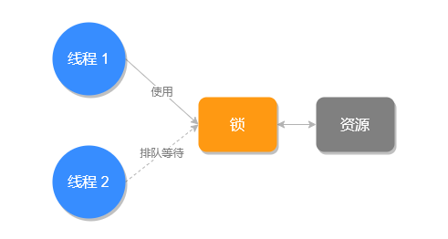
什么是分布式锁？
上面说的锁指的是程序级别的锁，例如 Java 语言中的 synchronized 和 ReentrantLock 在单应用中使用不会有任何问题，但如果放到分布式环境下就不适用了，这个时候我们就要使用分布式锁。
分布式锁比较好理解就是用于分布式环境下并发控制的一种机制，用于控制某个资源在同一时刻只能被一个应用所使用。
分布式锁示意图，如下所示：
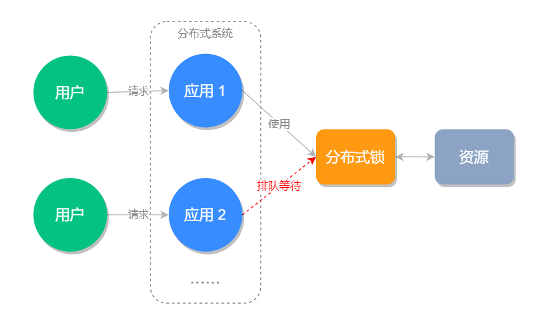
怎么实现分布式锁？
分布式锁比较常见的实现方式有三种：
- Memcached 实现的分布式锁：使用 add 命令，添加成功的情况下，表示创建分布式锁成功。
- ZooKeeper 实现的分布式锁：使用 ZooKeeper 顺序临时节点来实现分布式锁。
- Redis 实现的分布式锁。
本文要重点来说的是第三种，也就是 Redis 分布式锁的实现方式。
Redis 分布式锁的实现思路是使用 setnx（set if not exists），如果创建成功则表明此锁创建成功，否则代表这个锁已经被占用创建失败。
分布式锁实现
127.0.0.1:6379> setnx lock true
(integer) 1 #创建锁成功
#逻辑业务处理...
127.0.0.1:6379> del lock
(integer) 1 #释放锁
从以上代码可以看出，释放锁使用 del lock 即可，如果在锁未被删除之前，其他程序再来执行 setnx 是不会创建成功的，结果如下：
127.0.0.1:6379> setnx lock true
(integer) 0
执行结果为 0 表示失败。
setnx 的问题
setnx 虽然可以成功地创建分布式锁，但存在一个问题，如果此程序在创建了锁之后，程序异常退出了，那么这个锁将永远不会被释放，就造成了死锁的问题。
这个时候有人想到，我们可以使用 expire key seconds 设置超时时间，即使出现程序中途崩溃的情况，超过超时时间之后，这个锁也会解除，不会出现死锁的情况了，实现命令如下：
127.0.0.1:6379> setnx lock true
(integer) 1
127.0.0.1:6379> expire lock 30
(integer) 1
#逻辑业务处理...
127.0.0.1:6379> del lock
(integer) 1 #释放锁
但这样依然会有问题，因为命令 setnx 和 expire 处理是一前一后非原子性的，因此如果在它们执行之间，出现断电和 Redis 异常退出的情况，因为超时时间未设置，依然会造成死锁。
带参数的 Set
因为 setnx 和 expire 存在原子性的问题，所以之后出现了很多类库用于解决此问题的，这样就增加了使用的成本，意味着你不但要添加 Redis 本身的客户端，并且为了解决 setnx 分布式锁的问题，还需要额外第三方类库。
然而，这个问题到 Redis 2.6.12 时得到了解决，因为这个版本可以使用 set 并设置超时和非空判定等参数了。
这样我们就可以使用 set 命令来设置分布式锁，并设置超时时间了，而且 set 命令可以保证原子性，实现命令如下所示：
127.0.0.1:6379> set lock true ex 30 nx
OK #创建锁成功
127.0.0.1:6379> set lock true ex 30 nx
(nil) #在锁被占用的时候，企图获取锁失败
其中， ex n 为设置超时时间，nx 为元素非空判断，用来判断是否能正常使用锁的。
分布式锁的执行超时问题
使用 set 命令之后好像所有问题都解决了，然后真相是“没那么简单”。使用 set 命令只解决创建锁的问题，那执行中的极端问题，和释放锁极端问题，我们依旧要考虑。
例如，我们设置锁的最大超时时间是 30s，但业务处理使用了 35s，这就会导致原有的业务还未执行完成，锁就被释放了，新的程序和旧程序一起操作就会带来线程安全的问题。
此执行流程如下图所示：
执行超时的问题处理带来线程安全问题之外，还引发了另一个问题：锁被误删。
假设锁的最大超时时间是 30s，应用 1 执行了 35s，然而应用 2 在 30s，锁被自动释放之后，用重新获取并设置了锁，然后在 35s 时，应用 1 执行完之后，就会把应用 2 创建的锁给删除掉，如下图所示：
锁被误删的解决方案是在使用 set 命令创建锁时，给 value 值设置一个归属人标识，例如给应用关联一个 UUID，每次在删除之前先要判断 UUID 是不是属于当前的线程，如果属于在删除，这样就避免了锁被误删的问题。
注意：如果是在代码中执行删除，不能使用先判断再删除的方法，伪代码如下：
if(xxx.equals(xxx)){ // 判断是否是自己的锁
del(luck); // 删除锁
}
因为判断代码和删除代码不具备原子性，因此也不能这样使用，这个时候可以使用 Lua 脚本来执行判断和删除的操作，因为多条 Lua 命令可以保证原子性，Java 实现代码如下：
/**
* 释放分布式锁
* @param jedis Redis 客户端
* @param lockKey 锁的 key
* @param flagId 锁归属标识
* @return 是否释放成功
*/
public static boolean unLock(Jedis jedis, String lockKey, String flagId) {
String script = "if redis.call('get', KEYS[1]) == ARGV[1] then return redis.call('del', KEYS[1]) else return 0 end";
Object result = jedis.eval(script, Collections.singletonList(lockKey), Collections.singletonList(flagId));
if ("1L".equals(result)) { // 判断执行结果
return true;
}
return false;
}
其中，Collections.singletonList() 方法的作用是将 String 转成 List，因为 jedis.eval() 最后两个参数的类型必须是 List。
说完了锁误删的解决方案，咱们回过头来看如何解决执行超时的问题，执行超时的问题可以从以下两方面来解决：
- 把执行比较耗时的任务不要放到加锁的方法内，锁内的方法尽量控制执行时长；
- 把最大超时时间可以适当的设置长一点，正常情况下锁用完之后会被手动的删除掉，因此适当的把最大超时时间设置的长一点，也是可行的。
代码实战
下面我们使用 Java 代码来实现分布式锁，代码如下：
import org.apache.commons.lang3.StringUtils;
import redis.clients.jedis.Jedis;
import redis.clients.jedis.params.SetParams;
import utils.JedisUtils;
import java.util.Collections;
public class LockExample {
static final String _LOCKKEY = "REDISLOCK"; // 锁 key
static final String _FLAGID = "UUID:6379"; // 标识（UUID）
static final Integer _TimeOut = 90; // 最大超时时间
public static void main(String[] args) {
Jedis jedis = JedisUtils.getJedis();
// 加锁
boolean lockResult = lock(jedis, _LOCKKEY, _FLAGID, _TimeOut);
// 逻辑业务处理
if (lockResult) {
System.out.println("加锁成功");
} else {
System.out.println("加锁失败");
}
// 手动释放锁
if (unLock(jedis, _LOCKKEY, _FLAGID)) {
System.out.println("锁释放成功");
} else {
System.out.println("锁释放成功");
}
}
/**
* @param jedis Redis 客户端
* @param key 锁名称
* @param flagId 锁标识（锁值），用于标识锁的归属
* @param secondsTime 最大超时时间
* @return
*/
public static boolean lock(Jedis jedis, String key, String flagId, Integer secondsTime) {
SetParams params = new SetParams();
params.ex(secondsTime);
params.nx();
String res = jedis.set(key, flagId, params);
if (StringUtils.isNotBlank(res) && res.equals("OK"))
return true;
return false;
}
/**
* 释放分布式锁
* @param jedis Redis 客户端
* @param lockKey 锁的 key
* @param flagId 锁归属标识
* @return 是否释放成功
*/
public static boolean unLock(Jedis jedis, String lockKey, String flagId) {
String script = "if redis.call('get', KEYS[1]) == ARGV[1] then return redis.call('del', KEYS[1]) else return 0 end";
Object result = jedis.eval(script, Collections.singletonList(lockKey), Collections.singletonList(flagId));
if ("1L".equals(result)) { // 判断执行结果
return true;
}
return false;
}
}
以上代码执行结果如下所示：
加锁成功
锁释放成功
小结
本文介绍了锁和分布式锁的概念，锁其实就是用来保证同一时刻只有一个程序可以去操作某一个资源，以此来保证并发时程序能正常执行的。使用 Redis 来实现分布式锁不能使用 setnx 命令，因为它可能会带来死锁的问题，因此我们可以使用 Redis 2.6.12 带来的多参数的 set 命令来申请锁，但在使用的时候也要注意锁内的业务流程执行的时间，不能大于锁设置的最大超时时间，不然会带来线程安全问题和锁误删的问题。
29 实战：布隆过滤器安装与使用及原理分析
我们前面有讲到过 HyperLogLog 可以用来做基数统计，但它没提供判断一个值是否存在的查询方法，那我们如何才能查询一个值是否存在于海量数据之中呢？
如果使用传统的方式，例如 SQL 中的传统查询，因为数据量太多，查询效率又低有占用系统的资源，因此我们需要一个优秀的算法和功能来实现这个需求，这是我们今天要讲的——布隆过滤器。
开启布隆过滤器
在 Redis 中不能直接使用布隆过滤器，但我们可以通过 Redis 4.0 版本之后提供的 modules（扩展模块）的方式引入，本文提供两种方式的开启方式。
方式一：编译方式
1. 下载并安装布隆过滤器
git clone https://github.com/RedisLabsModules/redisbloom.git
cd redisbloom
make # 编译redisbloom
编译正常执行完，会在根目录生成一个 redisbloom.so 文件。
2. 启动 Redis 服务器
> ./src/redis-server redis.conf --loadmodule ./src/modules/RedisBloom-master/redisbloom.so
其中 --loadmodule 为加载扩展模块的意思，后面跟的是 redisbloom.so 文件的目录。
方式二：Docker 方式
docker pull redislabs/rebloom # 拉取镜像
docker run -p6379:6379 redislabs/rebloom # 运行容器
启动验证
服务启动之后，我们需要判断布隆过滤器是否正常开启，此时我们只需使用 redis-cli 连接到服务端，输入 bf.add 看有没有命令提示，就可以判断是否正常启动了，如下图所示：
如果有命令提示则表名 Redis 服务器已经开启了布隆过滤器。
布隆过滤器的使用
布隆过滤器的命令不是很多，主要包含以下几个：
- bf.add：添加元素
- bf.exists：判断某个元素是否存在
- bf.madd：添加多个元素
- bf.mexists：判断多个元素是否存在
- bf.reserve：设置布隆过滤器的准确率
具体使用如下所示：
127.0.0.1:6379> bf.add user xiaoming
(integer) 1
127.0.0.1:6379> bf.add user xiaohong
(integer) 1
127.0.0.1:6379> bf.add user laowang
(integer) 1
127.0.0.1:6379> bf.exists user laowang
(integer) 1
127.0.0.1:6379> bf.exists user lao
(integer) 0
127.0.0.1:6379> bf.madd user huahua feifei
1) (integer) 1
2) (integer) 1
127.0.0.1:6379> bf.mexists user feifei laomiao
1) (integer) 1
2) (integer) 0
可以看出以上结果没有任何误差，我们再来看一下准确率 bf.reserve 的使用：
127.0.0.1:6379> bf.reserve user 0.01 200
(error) ERR item exists #已经存的 key 设置会报错
127.0.0.1:6379> bf.reserve userlist 0.9 10
OK
可以看出此命令必须在元素刚开始执行，否则会报错，它有三个参数：key、error_rate 和 initial_size。
其中：
- error_rate：允许布隆过滤器的错误率，这个值越低过滤器占用空间也就越大，以为此值决定了位数组的大小，位数组是用来存储结果的，它的空间占用的越大（存储的信息越多），错误率就越低，它的默认值是 0.01。
- initial_size：布隆过滤器存储的元素大小，实际存储的值大于此值，准确率就会降低，它的默认值是 100。
后面原理部分会讲到 error_rate 和 initial_size 对准确率影响的具体原因。
代码实战
下面我们用 Java 客户端来实现布隆过滤器的操作，因为 Jedis 没有直接操作布隆过滤器的方法，所以我们使用 Jedis 操作 Lua 脚本的方式来实现布隆过滤器，代码如下：
import redis.clients.jedis.Jedis;
import utils.JedisUtils;
import java.util.Arrays;
public class BloomExample {
private static final String _KEY = "user";
public static void main(String[] args) {
Jedis jedis = JedisUtils.getJedis();
for (int i = 1; i < 10001; i++) {
bfAdd(jedis, _KEY, "user_" + i);
boolean exists = bfExists(jedis, _KEY, "user_" + i);
if (!exists) {
System.out.println("未找到数据 i=" + i);
break;
}
}
System.out.println("执行完成");
}
/**
* 添加元素
* @param jedis Redis 客户端
* @param key key
* @param value value
* @return boolean
*/
public static boolean bfAdd(Jedis jedis, String key, String value) {
String luaStr = "return redis.call('bf.add', KEYS[1], KEYS[2])";
Object result = jedis.eval(luaStr, Arrays.asList(key, value),
Arrays.asList());
if (result.equals(1L)) {
return true;
}
return false;
}
/**
* 查询元素是否存在
* @param jedis Redis 客户端
* @param key key
* @param value value
* @return boolean
*/
public static boolean bfExists(Jedis jedis, String key, String value) {
String luaStr = "return redis.call('bf.exists', KEYS[1], KEYS[2])";
Object result = jedis.eval(luaStr, Arrays.asList(key, value),
Arrays.asList());
if (result.equals(1L)) {
return true;
}
return false;
}
}
但我们发现执行了半天，执行的结果竟然是：
执行完成
没有任何误差，奇怪了，于是我们在循环次数后面又加了一个 0，执行了大半天之后，发现依旧是相同的结果，依旧没有任何误差。
这是因为对于布隆过滤器来说，它说没有的值一定没有，它说有的值有可能没有。
于是我们把程序改一下，重新换一个 key 值，把条件改为查询存在的数据，代码如下：
import redis.clients.jedis.Jedis;
import utils.JedisUtils;
import java.util.Arrays;
public class BloomExample {
private static final String _KEY = "userlist";
public static void main(String[] args) {
Jedis jedis = JedisUtils.getJedis();
for (int i = 1; i < 100001; i++) {
bfAdd(jedis, _KEY, "user_" + i);
boolean exists = bfExists(jedis, _KEY, "user_" + (i + 1));
if (exists) {
System.out.println("找到了" + i);
break;
}
}
System.out.println("执行完成");
}
/**
* 添加元素
* @param jedis Redis 客户端
* @param key key
* @param value value
* @return boolean
*/
public static boolean bfAdd(Jedis jedis, String key, String value) {
String luaStr = "return redis.call('bf.add', KEYS[1], KEYS[2])";
Object result = jedis.eval(luaStr, Arrays.asList(key, value),
Arrays.asList());
if (result.equals(1L)) {
return true;
}
return false;
}
/**
* 查询元素是否存在
* @param jedis Redis 客户端
* @param key key
* @param value value
* @return boolean
*/
public static boolean bfExists(Jedis jedis, String key, String value) {
String luaStr = "return redis.call('bf.exists', KEYS[1], KEYS[2])";
Object result = jedis.eval(luaStr, Arrays.asList(key, value),
Arrays.asList());
if (result.equals(1L)) {
return true;
}
return false;
}
}
这次我们发现执行不一会就出现了如下信息：
找到了344
执行完成
说明循环执行了一会之后就出现误差了，代码执行也符合布隆过滤器的预期。
原理
上面我们学会了布隆过滤器的使用，下面我们就来看下它的实现原理。
Redis 布隆过滤器的实现，依靠的是它数据结构中的一个位数组，每次存储键值的时候，不是直接把数据存储在数据结构中，因为这样太占空间了，它是利用几个不同的无偏哈希函数，把此元素的 hash 值均匀的存储在位数组中，也就是说，每次添加时会通过几个无偏哈希函数算出它的位置，把这些位置设置成 1 就完成了添加操作。
当进行元素判断时，查询此元素的几个哈希位置上的值是否为 1，如果全部为 1，则表示此值存在，如果有一个值为 0，则表示不存在。因为此位置是通过 hash 计算得来的，所以即使这个位置是 1，并不能确定是那个元素把它标识为 1 的，因此布隆过滤器查询此值存在时，此值不一定存在，但查询此值不存在时，此值一定不存在。
并且当位数组存储值比较稀疏的时候，查询的准确率越高，而当位数组存储的值越来越多时，误差也会增大。
位数组和 key 之间的关系，如下图所示：
布隆过滤器使用场景
它的经典使用场景包括以下几个：
- 垃圾邮件过滤
- 爬虫里的 URL 去重
- 判断一个元素在亿级数据中是否存在
布隆过滤器在数据库领域的使用也比较广泛，例如：HBase、Cassandra、LevelDB、RocksDB 内部都有使用布隆过滤器。
小结
通过本文我们知道可以使用 Redis 4.0 之后提供的 modules 方式来开启布隆过滤器，并学习了布隆过滤器的三个重要操作方法 bf.add 添加元素、bf.exists 查询元素是否存在，还有 bf.reserve 设置布隆过滤器的准确率，其中 bf.reserve 有 2 个重要的参数：错误率和数组大小，错误率设置的越低，数组设置的越大，需要存储的空间就越大，相对来说查询的错误率也越低，需要如何设置需要使用者根据实际情况进行调整。我们也知道布隆过滤器的特点：当它查询有数据时，此数据不一定真的存在，当它查询没有此数据时，此数据一定不存在。
30 完整案例：实现延迟队列的两种方法
延迟队列是指把当前要做的事情，往后推迟一段时间再做。
延迟队列在实际工作中和面试中都比较常见，它的实现方式有很多种，然而每种实现方式也都有它的优缺点，接下来我们来看。
延迟队列的使用场景
延迟队列的常见使用场景有以下几种：
- 超过 30 分钟未支付的订单，将会被取消
- 外卖商家超过 5 分钟未接单的订单，将会被取消
- 在平台注册但 30 天内未登录的用户，发短信提醒
等类似的应用场景，都可以使用延迟队列来实现。
常见实现方式
Redis 延迟队列实现的思路、优点：目前市面上延迟队列的实现方式基本分为三类，第一类是通过程序的方式实现，例如 JDK 自带的延迟队列 DelayQueue，第二类是通过 MQ 框架来实现，例如 RabbitMQ 可以通过 rabbitmq-delayed-message-exchange 插件来实现延迟队列，第三类就是通过 Redis 的方式来实现延迟队列。
程序实现方式
JDK 自带的 DelayQueue 实现延迟队列，代码如下：
public class DelayTest {
public static void main(String[] args) throws InterruptedException {
DelayQueue delayQueue = new DelayQueue();
delayQueue.put(new DelayElement(1000));
delayQueue.put(new DelayElement(3000));
delayQueue.put(new DelayElement(5000));
System.out.println("开始时间：" + DateFormat.getDateTimeInstance().format(new Date()));
while (!delayQueue.isEmpty()){
System.out.println(delayQueue.take());
}
System.out.println("结束时间：" + DateFormat.getDateTimeInstance().format(new Date()));
}
static class DelayElement implements Delayed {
// 延迟截止时间（单面：毫秒）
long delayTime = System.currentTimeMillis();
public DelayElement(long delayTime) {
this.delayTime = (this.delayTime + delayTime);
}
@Override
// 获取剩余时间
public long getDelay(TimeUnit unit) {
return unit.convert(delayTime - System.currentTimeMillis(), TimeUnit.MILLISECONDS);
}
@Override
// 队列里元素的排序依据
public int compareTo(Delayed o) {
if (this.getDelay(TimeUnit.MILLISECONDS) > o.getDelay(TimeUnit.MILLISECONDS)) {
return 1;
} else if (this.getDelay(TimeUnit.MILLISECONDS) < o.getDelay(TimeUnit.MILLISECONDS)) {
return -1;
} else {
return 0;
}
}
@Override
public String toString() {
return DateFormat.getDateTimeInstance().format(new Date(delayTime));
}
}
}
程序执行结果：
开始时间：2019-6-13 20:40:38
2019-6-13 20:40:39
2019-6-13 20:40:41
2019-6-13 20:40:43
结束时间：2019-6-13 20:40:43
优点
- 开发比较方便，可以直接在代码中使用
- 代码实现比较简单
缺点
- 不支持持久化保存
- 不支持分布式系统
MQ 实现方式
RabbitMQ 本身并不支持延迟队列，但可以通过添加插件 rabbitmq-delayed-message-exchange 来实现延迟队列。
优点
- 支持分布式
- 支持持久化
缺点
框架比较重，需要搭建和配置 MQ。
Redis 实现方式
Redis 是通过有序集合（ZSet）的方式来实现延迟消息队列的，ZSet 有一个 Score 属性可以用来存储延迟执行的时间。
优点
- 灵活方便，Redis 是互联网公司的标配，无序额外搭建相关环境；
- 可进行消息持久化，大大提高了延迟队列的可靠性；
- 分布式支持，不像 JDK 自身的 DelayQueue；
- 高可用性，利用 Redis 本身高可用方案，增加了系统健壮性。
缺点
需要使用无限循环的方式来执行任务检查，会消耗少量的系统资源。
结合以上优缺点，我们决定使用 Redis 来实现延迟队列，具体实现代码如下。
代码实战
本文我们使用 Java 语言来实现延迟队列，延迟队列的实现有两种方式：第一种是利用 zrangebyscore 查询符合条件的所有待处理任务，循环执行队列任务。第二种实现方式是每次查询最早的一条消息，判断这条信息的执行时间是否小于等于此刻的时间，如果是则执行此任务，否则继续循环检测。
方式一
一次性查询所有满足条件的任务，循环执行，代码如下：
import redis.clients.jedis.Jedis;
import utils.JedisUtils;
import java.time.Instant;
import java.util.Set;
/**
* 延迟队列
*/
public class DelayQueueExample {
// zset key
private static final String _KEY = "myDelayQueue";
public static void main(String[] args) throws InterruptedException {
Jedis jedis = JedisUtils.getJedis();
// 延迟 30s 执行（30s 后的时间）
long delayTime = Instant.now().plusSeconds(30).getEpochSecond();
jedis.zadd(_KEY, delayTime, "order_1");
// 继续添加测试数据
jedis.zadd(_KEY, Instant.now().plusSeconds(2).getEpochSecond(), "order_2");
jedis.zadd(_KEY, Instant.now().plusSeconds(2).getEpochSecond(), "order_3");
jedis.zadd(_KEY, Instant.now().plusSeconds(7).getEpochSecond(), "order_4");
jedis.zadd(_KEY, Instant.now().plusSeconds(10).getEpochSecond(), "order_5");
// 开启延迟队列
doDelayQueue(jedis);
}
/**
* 延迟队列消费
* @param jedis Redis 客户端
*/
public static void doDelayQueue(Jedis jedis) throws InterruptedException {
while (true) {
// 当前时间
Instant nowInstant = Instant.now();
long lastSecond = nowInstant.plusSeconds(-1).getEpochSecond(); // 上一秒时间
long nowSecond = nowInstant.getEpochSecond();
// 查询当前时间的所有任务
Set<String> data = jedis.zrangeByScore(_KEY, lastSecond, nowSecond);
for (String item : data) {
// 消费任务
System.out.println("消费：" + item);
}
// 删除已经执行的任务
jedis.zremrangeByScore(_KEY, lastSecond, nowSecond);
Thread.sleep(1000); // 每秒轮询一次
}
}
}
以上程序执行结果如下：
消费：order_2
消费：order_3
消费：order_4
消费：order_5
消费：order_1
方式二
每次查询最早的一条任务，与当前时间判断，决定是否需要执行，实现代码如下：
import redis.clients.jedis.Jedis;
import utils.JedisUtils;
import java.time.Instant;
import java.util.Set;
/**
* 延迟队列
*/
public class DelayQueueExample {
// zset key
private static final String _KEY = "myDelayQueue";
public static void main(String[] args) throws InterruptedException {
Jedis jedis = JedisUtils.getJedis();
// 延迟 30s 执行（30s 后的时间）
long delayTime = Instant.now().plusSeconds(30).getEpochSecond();
jedis.zadd(_KEY, delayTime, "order_1");
// 继续添加测试数据
jedis.zadd(_KEY, Instant.now().plusSeconds(2).getEpochSecond(), "order_2");
jedis.zadd(_KEY, Instant.now().plusSeconds(2).getEpochSecond(), "order_3");
jedis.zadd(_KEY, Instant.now().plusSeconds(7).getEpochSecond(), "order_4");
jedis.zadd(_KEY, Instant.now().plusSeconds(10).getEpochSecond(), "order_5");
// 开启延迟队列
doDelayQueue2(jedis);
}
/**
* 延迟队列消费（方式2）
* @param jedis Redis 客户端
*/
public static void doDelayQueue2(Jedis jedis) throws InterruptedException {
while (true) {
// 当前时间
long nowSecond = Instant.now().getEpochSecond();
// 每次查询一条消息，判断此消息的执行时间
Set<String> data = jedis.zrange(_KEY, 0, 0);
if (data.size() == 1) {
String firstValue = data.iterator().next();
// 消息执行时间
Double score = jedis.zscore(_KEY, firstValue);
if (nowSecond >= score) {
// 消费消息（业务功能处理）
System.out.println("消费消息：" + firstValue);
// 删除已经执行的任务
jedis.zrem(_KEY, firstValue);
}
}
Thread.sleep(100); // 执行间隔
}
}
}
以上程序执行结果和实现方式一相同，结果如下：
消费：order_2
消费：order_3
消费：order_4
消费：order_5
消费：order_1
其中，执行间隔代码 Thread.sleep(100) 可根据实际的业务情况删减或配置。
小结
本文我们介绍了延迟队列的使用场景以及各种实现方案，其中 Redis 的方式是最符合我们需求的，它主要是利用有序集合的 score 属性来存储延迟执行时间，再开启一个无限循环来判断是否有符合要求的任务，如果有的话执行相关逻辑，没有的话继续循环检测。
31 实战：定时任务案例
我在开发的时候曾经遇到了这样一个问题，产品要求给每个在线预约看病的患者，距离预约时间的前一天发送一条提醒推送，以防止患者错过看病的时间。这个时候就要求我们给每个人设置一个定时任务，用前面文章说的延迟队列也可以实现，但延迟队列的实现方式需要开启一个无限循环任务，那有没有其他的实现方式呢？
答案是肯定的，接下来我们就用 Keyspace Notifications（键空间通知）来实现定时任务，定时任务指的是指定一个时间来执行某个任务，就叫做定时任务。
开启键空间通知
默认情况下 Redis 服务器端是不开启键空间通知的，需要我们手动开启。
键空间开启分为两种方式：
- 命令设置方式
- 配置文件设置方式
接下来，我们分别来看。
命令设置方式
使用 redis-cli 连接到服务器端之后，输入 config set notify-keyspace-events Ex 命令，可以直接开启键空间通知功能，返回“OK”则表示开启成功，如下命令所示：
127.0.0.1:6379> config set notify-keyspace-events Ex
OK
优点：
- 设置方便，无序启动 Redis 服务。
缺点：
- 这种方式设置的配置信息是存储在内存中的，重启 Redis 服务之后，配置项会丢失。
配置文件设置方式
找到 Redis 的配置文件 redis.conf，设置配置项 notify-keyspace-events Ex，然后重启 Redis 服务器。
优点：
- 无论 Redis 服务器重启多少次，配置都不会丢失。
缺点：
- 需要重启 Redis 服务。
配置说明
可以看出无论是那种方式，都是设置 notify-keyspace-events Ex，其中 Ex 表示开启键事件通知里面的 key 过期事件。
更多配置项说明如下：
- K：键空间通知，所有通知以
__keyspace@<db>__为前缀 - E：键事件通知，所有通知以
__keyevent@<db>__为前缀 - g：DEL、EXPIRE、RENAME 等类型无关的通用命令的通知
- $：字符串命令的通知
- l：列表命令的通知
- s：集合命令的通知
- h：哈希命令的通知
- z：有序集合命令的通知
- x：过期事件，每当有过期键被删除时发送
- e：驱逐（evict）事件，每当有键因为 maxmemory 政策而被删除时发送
- A：参数 g$lshzxe 的别名
以上配置项可以自由组合，例如我们订阅列表事件就是 El，但需要注意的是，如果 notify-keyspace-event 的值设置为空，则表示不开启任何通知，有值则表示开启通知。
功能实现
我们要实现定时任务需要使用 Pub/Sub 订阅者和发布者的功能，使用订阅者订阅元素的过期事件，然后再执行固定的任务，这就是定时任务的实现思路。
以本文开头的问题为例，我们是这样实现此定时任务的，首先根据每个患者预约的时间往前推一天，然后再计算出当前时间和目标时间（预约前一天的时间）的毫秒值，把这个值作为元素的过期时间设置到 Redis 中，当这个键过期的时候，我们使用订阅者模式就可以订阅到此信息，然后再发提醒消息给此用户，这样就实现了给每个患者开启一个单独的分布式定时任务的功能。
我们先用命令的模式来模拟一下此功能的实现，首先，我们使用 redis-cli 开启一个客户端，监听 __keyevent@0__:expired 键过期事件，此监听值 __keyevent@0__:expired 为固定的写法，其中 0 表示第一个数据库，我们知道 Redis 中一共有 16 个数据，默认使用的是第 0 个，我们建议新开一个非 0 的数据库专门用来实现定时任务，这样就可以避免很多无效的事件监听。
命令监听如下：
127.0.0.1:6379> psubscribe __keyevent@0__:expired
1) "psubscribe"
2) "__keyevent@0__:expired"
3) (integer) 1
此时我们开启另一个客户端，添加两条测试数据试试，命令如下：
127.0.0.1:6379> set key value ex 3
OK
127.0.0.1:6379> set user xiaoming ex 3
OK
等过去 3 秒钟之后，我们去看监听结果如下：
127.0.0.1:6379> psubscribe __keyevent@0__:expired
1) "psubscribe"
2) "__keyevent@0__:expired"
3) (integer) 1
1) "pmessage"
2) "__keyevent@0__:expired"
3) "__keyevent@0__:expired"
4) "key" #接收到过期信息 key
1) "pmessage"
2) "__keyevent@0__:expired"
3) "__keyevent@0__:expired"
4) "user" #接收到过期信息 user
已经成功的介绍到两条过期信息了。
代码实战
本文我们使用 Jedis 来实现定时任务，代码如下：
import redis.clients.jedis.Jedis;
import redis.clients.jedis.JedisPubSub;
import utils.JedisUtils;
/**
* 定时任务
*/
public class TaskExample {
public static final String _TOPIC = "__keyevent@0__:expired"; // 订阅频道名称
public static void main(String[] args) {
Jedis jedis = JedisUtils.getJedis();
// 执行定时任务
doTask(jedis);
}
/**
* 订阅过期消息，执行定时任务
* @param jedis Redis 客户端
*/
public static void doTask(Jedis jedis) {
// 订阅过期消息
jedis.psubscribe(new JedisPubSub() {
@Override
public void onPMessage(String pattern, String channel, String message) {
// 接收到消息，执行定时任务
System.out.println("收到消息：" + message);
}
}, _TOPIC);
}
}
小结
本文我们通过开启 Keyspace Notifications 和 Pub/Sub 消息订阅的方式，可以拿到每个键值过期的事件，我们利用这个机制实现了给每个人开启一个定时任务的功能，过期事件中我们可以获取到过期键的 key 值，在 key 值中我们可以存储每个用户的 id，例如“user_1001”的方式，其中数字部分表示用户的编号，通过此编号就可以完成给对应人发送消息通知的功能。
32 实战：RediSearch 高性能的全文搜索引擎
RediSearch 是一个高性能的全文搜索引擎，它可以作为一个 Redis Module（扩展模块）运行在 Redis 服务器上。
RediSearch 主要特性如下：
- 基于文档的多个字段全文索引
- 高性能增量索引
- 文档排序（由用户在索引时手动提供）
- 在子查询之间使用 AND 或 NOT 操作符的复杂布尔查询
- 可选的查询子句
- 基于前缀的搜索
- 支持字段权重设置
- 自动完成建议（带有模糊前缀建议）
- 精确的短语搜索
- 在许多语言中基于词干分析的查询扩展
- 支持用于查询扩展和评分的自定义函数
- 将搜索限制到特定的文档字段
- 数字过滤器和范围
- 使用 Redis 自己的地理命令进行地理过滤
- Unicode 支持（需要 UTF-8 字符集）
- 检索完整的文档内容或只是 ID 的检索
- 支持文档删除和更新与索引垃圾收集
- 支持部分更新和条件文档更新
安装
和前面讲到布隆过滤器的引入方式一样，我们可以使用 RediSearch 官方推荐的 Docker 方式来安装并启动 RediSearch 功能，操作命令如下：
docker run -p 6379:6379 redislabs/redisearch:latest
安装并启动成功，如下图所示：
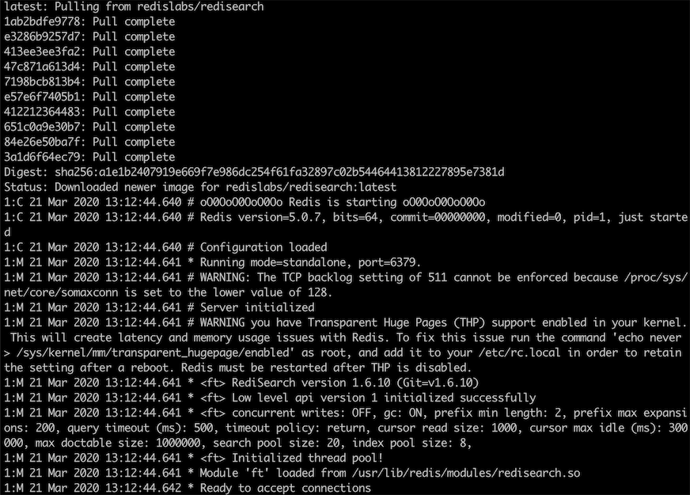
安装完成之后使用 redis-cli 来检查 RediSearch 模块是否加载成功，使用 Docker 启动 redis-cli，命令如下：
docker exec -it myredis redis-cli
其中“myredis”为 Redis 服务器的名称，执行结果如下：
127.0.0.1:6379> module list
1) 1) "name"
2) "ft"
3) "ver"
4) (integer) 10610
返回数组存在“ft”，表明 RediSearch 模块已经成功加载。
源码方式安装
如果不想使用 Docker，我们也可以使用源码的方式进行安装，安装命令如下：
git clone https://github.com/RedisLabsModules/RediSearch.git
cd RediSearch # 进入模块目录
make all
安装完成之后，可以使用如下命令启动 Redis 并加载 RediSearch 模块，命令如下：
src/redis-server redis.conf --loadmodule ../RediSearch/src/redisearch.so
使用
我们先使用 redis-cli 来对 RediSearch 进行相关的操作。
创建索引和字段
127.0.0.1:6379> ft.create myidx schema title text weight 5.0 desc text
OK
其中“myidx”为索引的ID，此索引包含了两个字段“title”和“desc”，“weight”为权重，默认值为 1.0。
将内容添加到索引
127.0.0.1:6379> ft.add myidx doc1 1.0 fields title "He urged her to study English" desc "good idea"
OK
其中“doc1”为文档 ID（docid），“1.0”为评分（score）。
根据关键查询
127.0.0.1:6379> ft.search myidx "english" limit 0 10
1) (integer) 1
2) "doc1"
3) 1) "title"
2) "He urged her to study English"
3) "desc"
4) "good idea"
可以看出我们使用 title 字段中的关键字“english”查询出了一条满足查询条件的数据。
中文搜索
首先我们需要先给索引中，添加一条中文数据，执行命令如下：
127.0.0.1:6379> ft.add myidx doc2 1.0 language "chinese" fields title "Java 14 发布了！新功能速览" desc "Java 14 在 2020.3.17 日发布正式版了，但现在很多公司还在使用 Java 7 或 Java 8"
OK
注意：这里必须要设置语言编码为中文，也就是“language "chinese"”，默认是英文编码，如果不设置则无法支持中文查询（无法查出结果）。
我们使用之前的查询方式，命令如下：
127.0.0.1:6379> ft.search myidx "正式版"
1) (integer) 0
我们发现并没有查到任何信息，这是因为我们没有指定搜索的语言，不但保存时候要指定编码，查询时也需要指定，查询命令如下：
127.0.0.1:6379> ft.search myidx "发布了" language "chinese"
1) (integer) 1
2) "doc2"
3) 1) "desc"
2) "Java 14 \xe5\x9c\xa8 2020.3.17 \xe6\x97\xa5\xe5\x8f\x91\xe5\xb8\x83\xe6\xad\xa3\xe5\xbc\x8f\xe7\x89\x88\xe4\xba\x86\xef\xbc\x8c\xe4\xbd\x86\xe7\x8e\xb0\xe5\x9c\xa8\xe5\xbe\x88\xe5\xa4\x9a\xe5\x85\xac\xe5\x8f\xb8\xe8\xbf\x98\xe5\x9c\xa8\xe4\xbd\xbf\xe7\x94\xa8 Java 7 \xe6\x88\x96 Java 8"
3) "title"
4) "Java 14 \xe5\x8f\x91\xe5\xb8\x83\xe4\xba\x86\xef\xbc\x81\xe6\x96\xb0\xe5\x8a\x9f\xe8\x83\xbd\xe9\x80\x9f\xe8\xa7\x88"
从结果可以看出中文信息已经被顺利的查询出来了。
删除索引的数据
127.0.0.1:6379> ft.del myidx doc1
(integer) 1
我们使用索引加文档 ID 就可以实现删除数据的功能。
删除索引
我们可以使用“ft.drop”关键字删除整个索引，执行命令如下：
127.0.0.1:6379> ft.drop myidx
OK
查询索引详细信息
我们可以使用“ft.info”关键查询索引相关信息，执行命令如下：
127.0.0.1:6379> ft.info myidx
1) index_name
2) myidx
3) index_options
4) (empty list or set)
5) fields
6) 1) 1) title
2) type
3) TEXT
4) WEIGHT
5) "5"
2) 1) desc
2) type
3) TEXT
4) WEIGHT
5) "1"
7) num_docs
8) "2"
9) max_doc_id
10) "2"
11) num_terms
12) "9"
13) num_records
14) "18"
15) inverted_sz_mb
16) "0.000102996826171875"
17) total_inverted_index_blocks
18) "29"
19) offset_vectors_sz_mb
20) "1.71661376953125e-05"
21) doc_table_size_mb
22) "0.000164031982421875"
23) sortable_values_size_mb
24) "0"
25) key_table_size_mb
26) "8.0108642578125e-05"
27) records_per_doc_avg
28) "9"
29) bytes_per_record_avg
30) "6"
31) offsets_per_term_avg
32) "1"
33) offset_bits_per_record_avg
34) "8"
35) gc_stats
36) 1) bytes_collected
2) "0"
3) total_ms_run
4) "16"
5) total_cycles
6) "14"
7) avarage_cycle_time_ms
8) "1.1428571428571428"
9) last_run_time_ms
10) "2"
11) gc_numeric_trees_missed
12) "0"
13) gc_blocks_denied
14) "0"
37) cursor_stats
38) 1) global_idle
2) (integer) 0
3) global_total
4) (integer) 0
5) index_capacity
6) (integer) 128
7) index_total
8) (integer) 0
其中“num_docs”表示存储的数据数量。
代码实战
RediSearch 支持的客户端有以下这些。
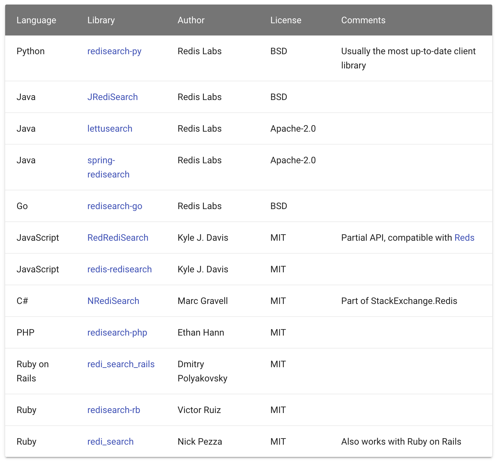
本文我们使用 JRediSearch 来实现全文搜索的功能，首先在 pom.xml 添加 JRediSearch 引用：
<!-- https://mvnrepository.com/artifact/com.redislabs/jredisearch -->
<dependency>
<groupId>com.redislabs</groupId>
<artifactId>jredisearch</artifactId>
<version>1.3.0</version>
</dependency>
完整的操作代码如下：
import io.redisearch.client.AddOptions;
import io.redisearch.client.Client;
import io.redisearch.Document;
import io.redisearch.SearchResult;
import io.redisearch.Query;
import io.redisearch.Schema;
public class RediSearchExample {
public static void main(String[] args) {
// 连接 Redis 服务器和指定索引
Client client = new Client("myidx", "127.0.0.1", 6379);
// 定义索引
Schema schema = new Schema().addTextField("title",
5.0).addTextField("desc", 1.0);
// 删除索引
client.dropIndex();
// 创建索引
client.createIndex(schema, Client.IndexOptions.Default());
// 设置中文编码
AddOptions addOptions = new AddOptions();
addOptions.setLanguage("chinese");
// 添加数据
Document document = new Document("doc1");
document.set("title", "天气预报");
document.set("desc", "今天的天气很好，是个阳光明媚的大晴天，有蓝蓝的天空和白白的云朵。");
// 向索引中添加文档
client.addDocument(document,addOptions);
// 查询
Query q = new Query("天气") // 设置查询条件
.setLanguage("chinese") // 设置为中文编码
.limit(0,5);
// 返回查询结果
SearchResult res = client.search(q);
// 输出查询结果
System.out.println(res.docs);
}
}
以上程序执行结果如下：
[{"id":"doc1","score":1.0,"properties":{"title":"天气预报","desc":"今天的天气很好，是个阳光明媚的大晴天，有蓝蓝的天空和白白的云朵。"}}]
可以看出添加的中文数据，被正确的查询出来了。
小结
本文我们使用 Docker 和 源码编译的方式成功的启动了 RediSearch 功能，要使用 RediSearch 的全文搜索功能，必须先要创建一个索引，然后再索引中添加数据，再使用 ft.search 命令进行全文搜索，如果要查询中文内容的话，需要在添加数据时设置中文编码，并且在查询时也要设置中文编码，指定“language "chinese"”。
参考 & 鸣谢
官网地址：
项目地址：
33 实战：Redis 性能测试
为什么需要性能测试？
性能测试的使用场景有很多，例如以下几个：
- 技术选型，比如测试 Memcached 和 Redis；
- 对比单机 Redis 和集群 Redis 的吞吐量；
- 评估不同类型的存储性能，例如集合和有序集合；
- 对比开启持久化和关闭持久化的吞吐量；
- 对比调优和未调优的吞吐量；
- 对比不同 Redis 版本的吞吐量，作为是否升级的一个参考标准。
等等，诸如此类的情况，我们都需要进行性能测试。
性能测试的几种方式
既然性能测试使用场景那么多，那要怎么进行性能测试呢？
目前比较主流的性能测试分为两种：
- 编写代码模拟并发进行性能测试；
- 使用 redis-benchmark 进行测试。
因为自己编写代码进行性能测试的方式不够灵活，且很难短时间内模拟大量的并发数，所有作者并不建议使用这种方式。幸运的是 Redis 本身给我们提供了性能测试工具 redis-benchmark（Redis 基准测试），因此我们本文重点来介绍 redis-benchmark 的使用。
基准测试实战
redis-benchmark 位于 Redis 的 src 目录下，我们可以使用 ./redis-benchmark -h 来查看基准测试的使用，执行结果如下：
Usage: redis-benchmark [-h <host>] [-p <port>] [-c <clients>] [-n <requests>] [-k <boolean>]
-h <hostname> Server hostname (default 127.0.0.1)
-p <port> Server port (default 6379)
-s <socket> Server socket (overrides host and port)
-a <password> Password for Redis Auth
-c <clients> Number of parallel connections (default 50)
-n <requests> Total number of requests (default 100000)
-d <size> Data size of SET/GET value in bytes (default 3)
--dbnum <db> SELECT the specified db number (default 0)
-k <boolean> 1=keep alive 0=reconnect (default 1)
-r <keyspacelen> Use random keys for SET/GET/INCR, random values for SADD
Using this option the benchmark will expand the string __rand_int__
inside an argument with a 12 digits number in the specified range
from 0 to keyspacelen-1. The substitution changes every time a command
is executed. Default tests use this to hit random keys in the
specified range.
-P <numreq> Pipeline <numreq> requests. Default 1 (no pipeline).
-e If server replies with errors, show them on stdout.
(no more than 1 error per second is displayed)
-q Quiet. Just show query/sec values
--csv Output in CSV format
-l Loop. Run the tests forever
-t <tests> Only run the comma separated list of tests. The test
names are the same as the ones produced as output.
-I Idle mode. Just open N idle connections and wait.
可以看出 redis-benchmark 支持以下选项：
-h <hostname>：服务器的主机名（默认值为 127.0.0.1）。-p <port>：服务器的端口号（默认值为 6379）。-s <socket>：服务器的套接字（会覆盖主机名和端口号）。-a <password>：登录 Redis 时进行身份验证的密码。-c <clients>：并发的连接数量（默认值为 50）。-n <requests>：发出的请求总数（默认值为 100000）。-d <size>：SET/GET 命令所操作的值的数据大小，以字节为单位（默认值为 2）。–dbnum <db>：选择用于性能测试的数据库的编号（默认值为 0）。-k <boolean>：1 = 保持连接；0 = 重新连接（默认值为 1）。-r <keyspacelen>：SET/GET/INCR 命令使用随机键，SADD 命令使用随机值。通过这个选项，基准测试会将参数中的__rand_int__字符串替换为一个 12 位的整数，这个整数的取值范围从 0 到 keyspacelen-1。每次执行一条命令的时候，用于替换的整数值都会改变。通过这个参数，默认的测试方案会在指定范围之内尝试命中随机键。-P <numreq>：使用管道机制处理<numreq>条 Redis 请求。默认值为 1（不使用管道机制）。-q：静默测试，只显示 QPS 的值。–csv：将测试结果输出为 CSV 格式的文件。-l：循环测试。基准测试会永远运行下去。-t <tests>：基准测试只会运行列表中用逗号分隔的命令。测试命令的名称和结果输出产生的名称相同。-I：空闲模式，只会打开 N 个空闲的连接，然后等待。
可以看出 redis-benchmark 带的功能还是比较全的。
基本使用
在安装 Redis 服务端的机器上，我们可以不带任何参数直接执行 ./redis-benchmark 执行结果如下：
[@iZ2ze0nc5n41zomzyqtksmZ:src]$ ./redis-benchmark
====== PING_INLINE ======
100000 requests completed in 1.26 seconds
50 parallel clients
3 bytes payload
keep alive: 1
99.81% <= 1 milliseconds
100.00% <= 2 milliseconds
79302.14 requests per second
====== PING_BULK ======
100000 requests completed in 1.29 seconds
50 parallel clients
3 bytes payload
keep alive: 1
99.83% <= 1 milliseconds
100.00% <= 1 milliseconds
77459.34 requests per second
====== SET ======
100000 requests completed in 1.26 seconds
50 parallel clients
3 bytes payload
keep alive: 1
99.80% <= 1 milliseconds
99.99% <= 2 milliseconds
100.00% <= 2 milliseconds
79239.30 requests per second
====== GET ======
100000 requests completed in 1.19 seconds
50 parallel clients
3 bytes payload
keep alive: 1
99.72% <= 1 milliseconds
99.95% <= 15 milliseconds
100.00% <= 16 milliseconds
100.00% <= 16 milliseconds
84104.29 requests per second
====== INCR ======
100000 requests completed in 1.17 seconds
50 parallel clients
3 bytes payload
keep alive: 1
99.86% <= 1 milliseconds
100.00% <= 1 milliseconds
85397.09 requests per second
====== LPUSH ======
100000 requests completed in 1.22 seconds
50 parallel clients
3 bytes payload
keep alive: 1
99.79% <= 1 milliseconds
100.00% <= 1 milliseconds
82169.27 requests per second
====== RPUSH ======
100000 requests completed in 1.22 seconds
50 parallel clients
3 bytes payload
keep alive: 1
99.71% <= 1 milliseconds
100.00% <= 1 milliseconds
81900.09 requests per second
====== LPOP ======
100000 requests completed in 1.29 seconds
50 parallel clients
3 bytes payload
keep alive: 1
99.78% <= 1 milliseconds
99.95% <= 13 milliseconds
99.97% <= 14 milliseconds
100.00% <= 14 milliseconds
77399.38 requests per second
====== RPOP ======
100000 requests completed in 1.25 seconds
50 parallel clients
3 bytes payload
keep alive: 1
99.82% <= 1 milliseconds
100.00% <= 1 milliseconds
80192.46 requests per second
====== SADD ======
100000 requests completed in 1.25 seconds
50 parallel clients
3 bytes payload
keep alive: 1
99.74% <= 1 milliseconds
100.00% <= 1 milliseconds
80192.46 requests per second
====== HSET ======
100000 requests completed in 1.21 seconds
50 parallel clients
3 bytes payload
keep alive: 1
99.86% <= 1 milliseconds
100.00% <= 1 milliseconds
82440.23 requests per second
====== SPOP ======
100000 requests completed in 1.22 seconds
50 parallel clients
3 bytes payload
keep alive: 1
99.92% <= 1 milliseconds
100.00% <= 1 milliseconds
81699.35 requests per second
====== LPUSH (needed to benchmark LRANGE) ======
100000 requests completed in 1.26 seconds
50 parallel clients
3 bytes payload
keep alive: 1
99.69% <= 1 milliseconds
99.95% <= 13 milliseconds
99.99% <= 14 milliseconds
100.00% <= 14 milliseconds
79176.56 requests per second
====== LRANGE_100 (first 100 elements) ======
100000 requests completed in 1.25 seconds
50 parallel clients
3 bytes payload
keep alive: 1
99.57% <= 1 milliseconds
99.98% <= 2 milliseconds
100.00% <= 2 milliseconds
80128.20 requests per second
====== LRANGE_300 (first 300 elements) ======
100000 requests completed in 1.25 seconds
50 parallel clients
3 bytes payload
keep alive: 1
99.91% <= 1 milliseconds
100.00% <= 1 milliseconds
80064.05 requests per second
====== LRANGE_500 (first 450 elements) ======
100000 requests completed in 1.30 seconds
50 parallel clients
3 bytes payload
keep alive: 1
99.78% <= 1 milliseconds
100.00% <= 1 milliseconds
76863.95 requests per second
====== LRANGE_600 (first 600 elements) ======
100000 requests completed in 1.20 seconds
50 parallel clients
3 bytes payload
keep alive: 1
99.85% <= 1 milliseconds
100.00% <= 1 milliseconds
83263.95 requests per second
====== MSET (10 keys) ======
100000 requests completed in 1.27 seconds
50 parallel clients
3 bytes payload
keep alive: 1
99.65% <= 1 milliseconds
100.00% <= 1 milliseconds
78740.16 requests per second
可以看出以上都是对常用的方法 Set、Get、Incr 等进行测试，基本能达到每秒 8W 的处理级别。
精简测试
我们可以使用 ./redis-benchmark -t set,get,incr -n 1000000 -q 命令，来对 Redis 服务器进行精简测试，测试结果如下：
[@iZ2ze0nc5n41zomzyqtksmZ:src]$ ./redis-benchmark -t set,get,incr -n 1000000 -q
SET: 81726.05 requests per second
GET: 81466.40 requests per second
INCR: 82481.03 requests per second
可以看出以上测试展示的结果非常的精简，这是因为我们设置了 -q 参数，此选项的意思是设置输出结果为精简模式，其中 -t 表示指定测试指令，-n 设置每个指令测试 100w 次。
管道测试
本课程的前面章节介绍了 Pipeline（管道）的知识，它是用于客户端把命令批量发给服务器端执行的，以此来提高程序的整体执行效率，那接下来我们测试一下 Pipeline 的吞吐量能到达多少，执行命令如下：
[@iZ2ze0nc5n41zomzyqtksmZ:src]$ ./redis-benchmark -t set,get,incr -n 1000000 -q -P 10
SET: 628535.50 requests per second
GET: 654450.25 requests per second
INCR: 647249.19 requests per second
我们发现 Pipeline 的测试很快就执行完了，同样是每个指令执行 100w 次，可以看出 Pipeline 的性能几乎是普通命令的 8 倍， -P 10 表示每次执行 10 个 Redis 命令。
基准测试的影响元素
为什么每次执行 10 个 Redis 命令，Pipeline 的效率为什么达不到普通命令的 10 倍呢？
这是因为基准测试会受到很大外部因素的影响，例如以下几个：
- 网络带宽和网络延迟可能是 Redis 操作最大的性能瓶颈，比如有 10w q/s，平均每个请求负责传输 8 KB 的字符，那我们需要的理论带宽是 7.6 Gbits/s，如果服务器配置的是 1 Gbits/s，那么一定会有很多信息在排队等候传输，因此运行效率可想而知，这也是很多 Redis 生产坏境之所以效率不高的原因；
- CPU 可能是 Redis 运行的另一个重要的影响因素，如果 CPU 的计算能力跟不上 Redis 要求的话，也会影响 Redis 的运行效率；
- 如果 Redis 运行在虚拟设备上，性能也会受影响，因为普通操作在虚拟设备上会有额外的消耗；
- 普通操作和批量操作（Pipeline）对 Redis 的吞吐量也有很大的影响。
小结
本文介绍了 Redis 自带的性能测试工具 redis-benchmark 也是 Redis 主流的性能测试工具，我们可以轻松模拟指定并发量和指定命令的测试条件，也可以模拟管道测试。测试的结果对于我们做技术选型、版本选择以及数据类型的选择上都有一定的指导意义，但需要注意 Redis 的吞吐量还受到其他因素的影响，例如带宽、CPU 等因素。
34 实战：Redis 慢查询
Redis 慢查询作用和 MySQL 慢查询作用类似，都是为我们查询出不合理的执行命令，然后让开发人员和运维人员一起来规避这些耗时的命令，从而让服务器更加高效和健康的运行。对于单线程的 Redis 来说，不合理的使用更是致命的，因此掌握 Redis 慢查询技能对我们来说非常的关键。
如何进行慢查询？
在开始之前，我们先要了解一下 Redis 中和慢查询相关的配置项，Redis 慢查询重要的配置项有以下两个：
- slowlog-log-slower-than：用于设置慢查询的评定时间，也就是说超过此配置项的命令，将会被当成慢操作记录在慢查询日志中，它执行单位是微秒（1 秒等于 1000000 微秒）；
- slowlog-max-len：用来配置慢查询日志的最大记录数。
我们先来看它们的默认配置值：
127.0.0.1:6379> config get slowlog-log-slower-than #慢查询判断时间
1) "slowlog-log-slower-than"
2) "10000"
127.0.0.1:6379> config get slowlog-max-len #慢查询最大记录条数
1) "slowlog-max-len"
2) "128"
可以看出慢查询的临界值是 10000 微秒，默认保存 128 条慢查询记录。
修改配置项
slowlog-log-slower-than 和 slowlog-max-len 可以通过 config set xxx 的模式来修改，例如 config set slowlog-max-len 200 设置慢查询最大记录数为 200 条。
慢查询演示
我们先来设置慢查询的判断时间为 0 微秒，这样所有的执行命令都会被记录，设置命令如下：
127.0.0.1:6379> config set slowlog-log-slower-than 0
OK
接下来我们执行两条插入命令：
127.0.0.1:6379> set msg xiaoming
OK
127.0.0.1:6379> set lang java
OK
最后我们使用 slowlog show 来查询慢日志，结果如下：
127.0.0.1:6379> slowlog get #慢日志查询
1) 1) (integer) 2 #慢日志下标
2) (integer) 1581994139 #执行时间
3) (integer) 5 #花费时间 (单位微秒)
4) 1) "set" #执行的具体命令
2) "lang"
3) "java"
5) "127.0.0.1:47068"
6) ""
2) 1) (integer) 1
2) (integer) 1581994131
3) (integer) 6
4) 1) "set"
2) "msg"
3) "xiaoming"
5) "127.0.0.1:47068"
6) ""
3) 1) (integer) 0
2) (integer) 1581994093
3) (integer) 5
4) 1) "config"
2) "set"
3) "slowlog-log-slower-than"
4) "0"
5) "127.0.0.1:47068"
6) ""
加上本身的设置命令一共有三条“慢操作”记录，按照插入的顺序倒序存入慢查询日志中。
小贴士：当慢查询日志超过设定的最大存储条数之后，会把最早的执行命令依次舍弃。
慢查询其他相关命令
查询指定条数慢日志
语法：slowlog get n。
127.0.0.1:6379> slowlog get 2 #查询两条
1) 1) (integer) 20
2) (integer) 1581997567
3) (integer) 14
4) 1) "slowlog"
2) "get"
3) "4"
5) "127.0.0.1:47068"
6) ""
2) 1) (integer) 19
2) (integer) 1581997544
3) (integer) 11
4) 1) "slowlog"
2) "get"
3) "3"
5) "127.0.0.1:47068"
6) ""
127.0.0.1:6379> slowlog get 3 #查询三条
1) 1) (integer) 22
2) (integer) 1581997649
3) (integer) 25
4) 1) "set"
2) "msg"
3) "hi"
5) "127.0.0.1:47068"
6) ""
2) 1) (integer) 21
2) (integer) 1581997613
3) (integer) 9
4) 1) "slowlog"
2) "get"
3) "2"
5) "127.0.0.1:47068"
6) ""
3) 1) (integer) 20
2) (integer) 1581997567
3) (integer) 14
4) 1) "slowlog"
2) "get"
3) "4"
5) "127.0.0.1:47068"
6) ""
获取慢查询队列长度
语法：slowlog len。
127.0.0.1:6379> slowlog len
(integer) 16
清空慢查询日志
使用 slowlog reset 来清空所有的慢查询日志，执行命令如下：
127.0.0.1:6379> slowlog reset
OK
代码实战
本文我们使用 Java 来实现慢查询日志的操作，代码如下：
import redis.clients.jedis.Jedis;
import redis.clients.jedis.util.Slowlog;
import utils.JedisUtils;
import java.util.List;
/**
* 慢查询
*/
public class SlowExample {
public static void main(String[] args) {
Jedis jedis = JedisUtils.getJedis();
// 插入慢查询（因为 slowlog-log-slower-than 设置为 0，所有命令都符合慢操作）
jedis.set("db", "java");
jedis.set("lang", "java");
// 慢查询记录的条数
long logLen = jedis.slowlogLen();
// 所有慢查询
List<Slowlog> list = jedis.slowlogGet();
// 循环打印
for (Slowlog item : list) {
System.out.println("慢查询命令："+ item.getArgs()+
" 执行了："+item.getExecutionTime()+" 微秒");
}
// 清空慢查询日志
jedis.slowlogReset();
}
}
以上代码执行结果如下：
慢查询命令：[SLOWLOG, len] 执行了：1 微秒
慢查询命令：[SET, lang, java] 执行了：2 微秒
慢查询命令：[SET, db, java] 执行了：4 微秒
慢查询命令：[SLOWLOG, reset] 执行了：155 微秒
小结
本文我们介绍了慢查询相关的两个重要参数 slowlog-log-slower-than（用于设置慢查询的评定时间）和 slowlog-max-len 用来配置慢查询日志的最大记录数，然后通过修改 config set slowlog-log-slower-than 0 把所有操作都记录在慢日志进行相关测试。我们可以使用 slowlog get [n] 查询慢操作日志，使用 slowlog reset 清空慢查询日志。最后给大家一个建议，可以定期检查慢查询日志，及时发现和改进 Redis 运行中不合理的操作。
35 实战：Redis 性能优化方案
Redis 是基于单线程模型实现的，也就是 Redis 是使用一个线程来处理所有的客户端请求的，尽管 Redis 使用了非阻塞式 IO，并且对各种命令都做了优化（大部分命令操作时间复杂度都是 O(1)），但由于 Redis 是单线程执行的特点，因此它对性能的要求更加苛刻，本文我们将通过一些优化手段，让 Redis 更加高效的运行。
本文我们将使用以下手段，来提升 Redis 的运行速度：
- 缩短键值对的存储长度；
- 使用 lazy free（延迟删除）特性；
- 设置键值的过期时间；
- 禁用耗时长的查询命令；
- 使用 slowlog 优化耗时命令；
- 使用 Pipeline 批量操作数据；
- 避免大量数据同时失效；
- 客户端使用优化；
- 限制 Redis 内存大小；
- 使用物理机而非虚拟机安装 Redis 服务；
- 检查数据持久化策略；
- 使用分布式架构来增加读写速度。
缩短键值对的存储长度
键值对的长度是和性能成反比的，比如我们来做一组写入数据的性能测试，执行结果如下：
| 数据量 | key 大小 | value 大小 | string:set 平均耗时 | hash:hset 平均耗时 |
|---|---|---|---|---|
| 100w | 20byte | 512byte | 1.13 微秒 | 10.28 微秒 |
| 100w | 20byte | 200byte | 0.74 微秒 | 8.08 微秒 |
| 100w | 20byte | 100byte | 0.65 微秒 | 7.92 微秒 |
| 100w | 20byte | 50byte | 0.59 微秒 | 6.74 微秒 |
| 100w | 20byte | 20byte | 0.55 微秒 | 6.60 微秒 |
| 100w | 20byte | 5byte | 0.53 微秒 | 6.53 微秒 |
从以上数据可以看出，在 key 不变的情况下，value 值越大操作效率越慢，因为 Redis 对于同一种数据类型会使用不同的内部编码进行存储，比如字符串的内部编码就有三种：int（整数编码）、raw（优化内存分配的字符串编码）、embstr（动态字符串编码），这是因为 Redis 的作者是想通过不同编码实现效率和空间的平衡，然而数据量越大使用的内部编码就越复杂，而越是复杂的内部编码存储的性能就越低。
这还只是写入时的速度，当键值对内容较大时，还会带来另外几个问题：
- 内容越大需要的持久化时间就越长，需要挂起的时间越长，Redis 的性能就会越低；
- 内容越大在网络上传输的内容就越多，需要的时间就越长，整体的运行速度就越低；
- 内容越大占用的内存就越多，就会更频繁地触发内存淘汰机制，从而给 Redis 带来了更多的运行负担。
因此在保证完整语义的同时，我们要尽量地缩短键值对的存储长度，必要时要对数据进行序列化和压缩再存储，以 Java 为例，序列化我们可以使用 protostuff 或 kryo，压缩我们可以使用 snappy。
使用 lazy free 特性
lazy free 特性是 Redis 4.0 新增的一个非常实用的功能，它可以理解为惰性删除或延迟删除。意思是在删除的时候提供异步延时释放键值的功能，把键值释放操作放在 BIO（Background I/O）单独的子线程处理中，以减少删除对 Redis 主线程的阻塞，可以有效地避免删除 big key 时带来的性能和可用性问题。
lazy free 对应了 4 种场景，默认都是关闭的：
lazyfree-lazy-eviction no
lazyfree-lazy-expire no
lazyfree-lazy-server-del no
slave-lazy-flush no
它们代表的含义如下：
- lazyfree-lazy-eviction：表示当 Redis 运行内存超过 maxmeory 时，是否开启 lazy free 机制删除；
- lazyfree-lazy-expire：表示设置了过期时间的键值，当过期之后是否开启 lazy free 机制删除；
- lazyfree-lazy-server-del：有些指令在处理已存在的键时，会带有一个隐式的 del 键的操作，比如 rename 命令，当目标键已存在，Redis 会先删除目标键，如果这些目标键是一个 big key，就会造成阻塞删除的问题，此配置表示在这种场景中是否开启 lazy free 机制删除；
- slave-lazy-flush：针对 slave（从节点）进行全量数据同步，slave 在加载 master 的 RDB 文件前，会运行 flushall 来清理自己的数据，它表示此时是否开启 lazy free 机制删除。
建议开启其中的 lazyfree-lazy-eviction、lazyfree-lazy-expire、lazyfree-lazy-server-del 等配置，这样就可以有效的提高主线程的执行效率。
设置键值的过期时间
我们应该根据实际的业务情况，对键值设置合理的过期时间，这样 Redis 会帮你自动清除过期的键值对，以节约对内存的占用，以避免键值过多的堆积，频繁的触发内存淘汰策略。
禁用耗时长的查询命令
Redis 绝大多数读写命令的时间复杂度都在 O(1) 到 O(N) 之间，在官方文档对每命令都有时间复杂度说明，地址：
如下图所示：
其中 O(1) 表示可以安全使用的，而 O(N) 就应该当心了，N 表示不确定，数据越大查询的速度可能会越慢。因为 Redis 只用一个线程来做数据查询，如果这些指令耗时很长，就会阻塞 Redis，造成大量延时。
要避免 O(N) 命令对 Redis 造成的影响，可以从以下几个方面入手改造：
- 决定禁止使用 keys 命令；
- 避免一次查询所有的成员，要使用 scan 命令进行分批的，游标式的遍历；
- 通过机制严格控制 Hash、Set、Sorted Set 等结构的数据大小；
- 将排序、并集、交集等操作放在客户端执行，以减少 Redis 服务器运行压力；
- 删除（del）一个大数据的时候，可能会需要很长时间，所以建议用异步删除的方式 unlink，它会启动一个新的线程来删除目标数据，而不阻塞 Redis 的主线程。
使用 slowlog 优化耗时命令
我们可以使用 slowlog 功能找出最耗时的 Redis 命令进行相关的优化，以提升 Redis 的运行速度，慢查询有两个重要的配置项：
- slowlog-log-slower-than：用于设置慢查询的评定时间，也就是说超过此配置项的命令，将会被当成慢操作记录在慢查询日志中，它执行单位是微秒（1 秒等于 1000000 微秒）；
- slowlog-max-len：用来配置慢查询日志的最大记录数。
我们可以根据实际的业务情况进行相应的配置，其中慢日志是按照插入的顺序倒序存入慢查询日志中，我们可以使用 slowlog get n 来获取相关的慢查询日志，再找到这些慢查询对应的业务进行相关的优化。
使用 Pipeline 批量操作数据
Pipeline（管道技术）是客户端提供的一种批处理技术，用于一次处理多个 Redis 命令，从而提高整个交互的性能。
我们使用 Java 代码来测试一下 Pipeline 和普通操作的性能对比，Pipeline 的测试代码如下：
public class PipelineExample {
public static void main(String[] args) {
Jedis jedis = new Jedis("127.0.0.1", 6379);
// 记录执行开始时间
long beginTime = System.currentTimeMillis();
// 获取 Pipeline 对象
Pipeline pipe = jedis.pipelined();
// 设置多个 Redis 命令
for (int i = 0; i < 100; i++) {
pipe.set("key" + i, "val" + i);
pipe.del("key"+i);
}
// 执行命令
pipe.sync();
// 记录执行结束时间
long endTime = System.currentTimeMillis();
System.out.println("执行耗时：" + (endTime - beginTime) + "毫秒");
}
}
以上程序执行结果为：
执行耗时：297毫秒
普通的操作代码如下：
public class PipelineExample {
public static void main(String[] args) {
Jedis jedis = new Jedis("127.0.0.1", 6379);
// 记录执行开始时间
long beginTime = System.currentTimeMillis();
for (int i = 0; i < 100; i++) {
jedis.set("key" + i, "val" + i);
jedis.del("key"+i);
}
// 记录执行结束时间
long endTime = System.currentTimeMillis();
System.out.println("执行耗时：" + (endTime - beginTime) + "毫秒");
}
}
以上程序执行结果为：
执行耗时：17276毫秒
从以上的结果可以看出，管道的执行时间是 297 毫秒，而普通命令执行时间是 17276 毫秒，管道技术要比普通的执行大约快了 58 倍。
避免大量数据同时失效
Redis 过期键值删除使用的是贪心策略，它每秒会进行 10 次过期扫描，此配置可在 redis.conf 进行配置，默认值是 hz 10，Redis 会随机抽取 20 个值，删除这 20 个键中过期的键，如果过期 key 的比例超过 25%，重复执行此流程，如下图所示：
如果在大型系统中有大量缓存在同一时间同时过期，那么会导致 Redis 循环多次持续扫描删除过期字典，直到过期字典中过期键值被删除的比较稀疏为止，而在整个执行过程会导致 Redis 的读写出现明显的卡顿，卡顿的另一种原因是内存管理器需要频繁回收内存页，因此也会消耗一定的 CPU。
为了避免这种卡顿现象的产生，我们需要预防大量的缓存在同一时刻一起过期，最简单的解决方案就是在过期时间的基础上添加一个指定范围的随机数。
客户端使用优化
在客户端的使用上我们除了要尽量使用 Pipeline 的技术外，还需要注意要尽量使用 Redis 连接池，而不是频繁创建销毁 Redis 连接，这样就可以减少网络传输次数和减少了非必要调用指令。
限制 Redis 内存大小
在 64 位操作系统中 Redis 的内存大小是没有限制的，也就是配置项 maxmemory <bytes> 是被注释掉的，这样就会导致在物理内存不足时，使用 swap 空间既交换空间，而当操心系统将 Redis 所用的内存分页移至 swap 空间时，将会阻塞 Redis 进程，导致 Redis 出现延迟，从而影响 Redis 的整体性能。因此我们需要限制 Redis 的内存大小为一个固定的值，当 Redis 的运行到达此值时会触发内存淘汰策略，内存淘汰策略在 Redis 4.0 之后有 8 种：
- noeviction：不淘汰任何数据，当内存不足时，新增操作会报错，Redis 默认内存淘汰策略；
- allkeys-lru：淘汰整个键值中最久未使用的键值；
- allkeys-random：随机淘汰任意键值;
- volatile-lru：淘汰所有设置了过期时间的键值中最久未使用的键值；
- volatile-random：随机淘汰设置了过期时间的任意键值；
- volatile-ttl：优先淘汰更早过期的键值。
在 Redis 4.0 版本中又新增了 2 种淘汰策略：
- volatile-lfu：淘汰所有设置了过期时间的键值中，最少使用的键值；
- allkeys-lfu：淘汰整个键值中最少使用的键值。
其中 allkeys-xxx 表示从所有的键值中淘汰数据，而 volatile-xxx 表示从设置了过期键的键值中淘汰数据。
我们可以根据实际的业务情况进行设置，默认的淘汰策略不淘汰任何数据，在新增时会报错。
使用物理机而非虚拟机
在虚拟机中运行 Redis 服务器，因为和物理机共享一个物理网口，并且一台物理机可能有多个虚拟机在运行，因此在内存占用上和网络延迟方面都会有很糟糕的表现，我们可以通过 ./redis-cli --intrinsic-latency 100 命令查看延迟时间，如果对 Redis 的性能有较高要求的话，应尽可能在物理机上直接部署 Redis 服务器。
检查数据持久化策略
Redis 的持久化策略是将内存数据复制到硬盘上，这样才可以进行容灾恢复或者数据迁移，但维护此持久化的功能，需要很大的性能开销。
在 Redis 4.0 之后，Redis 有 3 种持久化的方式：
- RDB（Redis DataBase，快照方式）将某一个时刻的内存数据，以二进制的方式写入磁盘；
- AOF（Append Only File，文件追加方式），记录所有的操作命令，并以文本的形式追加到文件中；
- 混合持久化方式，Redis 4.0 之后新增的方式，混合持久化是结合了 RDB 和 AOF 的优点，在写入的时候，先把当前的数据以 RDB 的形式写入文件的开头，再将后续的操作命令以 AOF 的格式存入文件，这样既能保证 Redis 重启时的速度，又能减低数据丢失的风险。
RDB 和 AOF 持久化各有利弊，RDB 可能会导致一定时间内的数据丢失，而 AOF 由于文件较大则会影响 Redis 的启动速度，为了能同时拥有 RDB 和 AOF 的优点，Redis 4.0 之后新增了混合持久化的方式，因此我们在必须要进行持久化操作时，应该选择混合持久化的方式。
查询是否开启混合持久化可以使用 config get aof-use-rdb-preamble 命令，执行结果如下图所示：
其中 yes 表示已经开启混合持久化，no 表示关闭，Redis 5.0 默认值为 yes。
如果是其他版本的 Redis 首先需要检查一下，是否已经开启了混合持久化，如果关闭的情况下，可以通过以下两种方式开启：
- 通过命令行开启
- 通过修改 Redis 配置文件开启
通过命令行开启
使用命令 config set aof-use-rdb-preamble yes 执行结果如下图所示：
命令行设置配置的缺点是重启 Redis 服务之后，设置的配置就会失效。
通过修改 Redis 配置文件开启
在 Redis 的根路径下找到 redis.conf 文件，把配置文件中的 aof-use-rdb-preamble no 改为 aof-use-rdb-preamble yes 如下图所示：
配置完成之后，需要重启 Redis 服务器，配置才能生效，但修改配置文件的方式，在每次重启 Redis 服务之后，配置信息不会丢失。
需要注意的是，在非必须进行持久化的业务中，可以关闭持久化，这样可以有效地提升 Redis 的运行速度，不会出现间歇性卡顿的困扰。
使用分布式架构来增加读写速度
Redis 分布式架构有三个重要的手段：
- 主从同步
- 哨兵模式
- Redis Cluster 集群
使用主从同步功能我们可以把写入放到主库上执行，把读功能转移到从服务上，因此就可以在单位时间内处理更多的请求，从而提升的 Redis 整体的运行速度。
而哨兵模式是对于主从功能的升级，但当主节点奔溃之后，无需人工干预就能自动恢复 Redis 的正常使用。
Redis Cluster 是 Redis 3.0 正式推出的，Redis 集群是通过将数据分散存储到多个节点上，来平衡各个节点的负载压力。
Redis Cluster 采用虚拟哈希槽分区，所有的键根据哈希函数映射到 0~16383 整数槽内，计算公式：
slot = CRC16(key) & 16383
每一个节点负责维护一部分槽以及槽所映射的键值数据。这样 Redis 就可以把读写压力从一台服务器，分散给多台服务器了，因此性能会有很大的提升。
在这三个功能中，我们只需要使用一个就行了，毫无疑问 Redis Cluster 应该是首选的实现方案，它可以把读写压力自动地分担给更多的服务器，并且拥有自动容灾的能力。
36 实战：Redis 主从同步
主从同步（主从复制）是 Redis 高可用服务的基石，也是多机运行中最基础的一个。我们把主要存储数据的节点叫做主节点 (master），把其他通过复制主节点数据的副本节点叫做从节点 (slave），如下图所示：
在 Redis 中一个主节点可以拥有多个从节点，一个从节点也可以是其他服务器的主节点，如下图所示：
主从同步的优点
主从同步具有以下三个优点：
- 性能方面：有了主从同步之后，可以把查询任务分配给从服务器，用主服务器来执行写操作，这样极大的提高了程序运行的效率，把所有压力分摊到各个服务器了；
- 高可用：当有了主从同步之后，当主服务器节点宕机之后，可以很迅速的把从节点提升为主节点，为 Redis 服务器的宕机恢复节省了宝贵的时间；
- 防止数据丢失：当主服务器磁盘坏掉之后，其他从服务器还保留着相关的数据，不至于数据全部丢失。
既然主从同步有这么多的优点，那接下来我们来看如何开启和使用主从同步功能。
开启主从同步
运行中设置从服务器
在 Redis 运行过程中，我们可以使用 replicaof host port 命令，把自己设置为目标 IP 的从服务器，执行命令如下：
127.0.0.1:6379> replicaof 127.0.0.1 6380
OK
如果主服务设置了密码，需要在从服务器输入主服务器的密码，使用 config set masterauth 主服务密码 命令的方式，例如：
127.0.0.1:6377> config set masterauth pwd654321
OK
1. 执行流程
在执行完 replicaof 命令之后，从服务器的数据会被清空，主服务会把它的数据副本同步给从服务器。
2. 测试同步功能
主从服务器设置完同步之后，我们来测试一下主从数据同步，首先我们先在主服务器上执行保存数据操作，再去从服务器查询。
主服务器执行命令：
127.0.0.1:6379> set lang redis
OK
从服务执行查询：
127.0.0.1:6379> get lang
"redis"
可以看出数据已经被正常同步过来了。
启动时设置从服务器
我们可以使用命令 redis-server --port 6380 --replicaof 127.0.0.1 6379 将自己设置成目标服务器的从服务器。
数据同步
完整数据同步
当有新的从服务器连接时，为了保障多个数据库的一致性，主服务器会执行一次 bgsave 命令生成一个 RDB 文件，然后再以 Socket 的方式发送给从服务器，从服务器收到 RDB 文件之后再把所有的数据加载到自己的程序中，就完成了一次全量的数据同步。
部分数据同步
在 Redis 2.8 之前每次从服务器离线再重新上线之前，主服务器会进行一次完整的数据同步，然后这种情况如果发生在离线时间比较短的情况下，只有少量的数据不同步却要同步所有的数据是非常笨拙和不划算的，在 Redis 2.8 这个功能得到了优化。
Redis 2.8 的优化方法是当从服务离线之后，主服务器会把离线之后的写入命令，存储在一个特定大小的队列中，队列是可以保证先进先出的执行顺序的，当从服务器重写恢复上线之后，主服务会判断离线这段时间内的命令是否还在队列中，如果在就直接把队列中的数据发送给从服务器，这样就避免了完整同步的资源浪费。
小贴士：存储离线命令的队列大小默认是 1MB，使用者可以自行修改队列大小的配置项 repl-backlog-size。
无盘数据同步
从前面的内容我们可以得知，在第一次主从连接的时候，会先产生一个 RDB 文件，再把 RDB 文件发送给从服务器，如果主服务器是非固态硬盘的时候，系统的 I/O 操作是非常高的，为了缓解这个问题，Redis 2.8.18 新增了无盘复制功能，无盘复制功能不会在本地创建 RDB 文件，而是会派生出一个子进程，然后由子进程通过 Socket 的方式，直接将 RDB 文件写入到从服务器，这样主服务器就可以在不创建RDB文件的情况下，完成与从服务器的数据同步。
要使用无须复制功能，只需把配置项 repl-diskless-sync 的值设置为 yes 即可，它默认配置值为 no。
查询服务器的角色
我们使用 role 命令，来查询当前服务器的主从角色信息。
主服务查看
在主服务器上执行 role 结果如下：
127.0.0.1:6379> role
1) "master"
2) (integer) 546
3) 1) 1) "172.17.0.1"
2) "6379"
3) "546"
master 表示主服务器，底下是从服务器的 IP、端口和连接时间。
从服务器查看
在从服务器执行 role 命令，执行结果如下：
127.0.0.1:6379> role
1) "slave"
2) "192.168.1.71"
3) (integer) 6380
4) "connected"
5) (integer) 14
slave 表示从服务器，底下主服务器的 IP、端口和连接时间。
关闭主从同步
我们可以使用 replicaof no one 命令来停止从服务器的复制，操作命令如下：
127.0.0.1:6379> role #查询当前角色
1) "slave" #从服务器
2) "192.168.1.71"
3) (integer) 6380
4) "connected"
5) (integer) 14
127.0.0.1:6379> replicaof no one #关闭同步
OK
127.0.0.1:6379> role #查询当前角色
1) "master" #主服务器
2) (integer) 1097
3) (empty list or set)
可以看出执行了 replicaof no one 命令之后，自己就从服务器变成主服务器了。
小贴士：服务器类型的转换并不会影响数据，这台服务器的数据将会被保留。
注意事项
主从同步有一些需要注意的点，我们来看一下。
数据一致性问题
当从服务器已经完成和主服务的数据同步之后，再新增的命令会以异步的方式发送至从服务器，在这个过程中主从同步会有短暂的数据不一致，如在这个异步同步发生之前主服务器宕机了，会造成数据不一致。
从服务器只读性
默认在情况下，处于复制模式的主服务器既可以执行写操作也可以执行读操作，而从服务器则只能执行读操作。
可以在从服务器上执行 config set replica-read-only no 命令，使从服务器开启写模式，但需要注意以下几点：
- 在从服务器上写的数据不会同步到主服务器；
- 当键值相同时主服务器上的数据可以覆盖从服务器；
- 在进行完整数据同步时，从服务器数据会被清空。
复制命令的变化
Redis 5.0 之前使用的复制命令是 slaveof，在 Redis 5.0 之后复制命令才被改为 replicaof，在高版本（Redis 5+）中我们应该尽量使用 replicaof，因为 slaveof 命令可能会被随时废弃掉。
小结
本文我们了解了 Redis 多机运行的基础功能主从同步，主从同步可以通过 replicaof host port 命令开启，知道了同步的三种方式：完整数据同步（第一次全量 RDB 同步），部分数据同步（Redis 2.8 对于短时间离线的同步功能优化），无盘同步（非 RDB 生成的方式同步数据），我们也可以使用 replicaof no one 命令来停止从服务器的复制功能。
37 实战：Redis哨兵模式（上）
上一篇我们讲了主从复制模式，它是属于 Redis 多机运行的基础，但这种模式本身存在一个致命的问题，当主节点奔溃之后，需要人工干预才能恢复 Redis 的正常使用。
例如，我们有 3 台服务器做了主从复制，一个主服务器 A 和两个从服务器 B、C，当 A 发生故障之后，需要人工把 B 服务器设置为主服务器，同时再去 C 服务器设置成从服务器并且从主服务器 B 同步数据，如果是发生在晚上或者从服务器节点很多的情况下，对于人工来说想要立即实现恢复的难度很多，所以我们需要一个自动的工具——Redis Sentinel（哨兵模式）来把手动的过程变成自动的，让 Redis 拥有自动容灾恢复（failover）的能力。
哨兵模式如下所示：
小贴士：Redis Sentinel 的最小分配单位是一主一从。
Redis Sentinel 搭建
Redis 官方提供了 Redis Sentinel 的功能，它的运行程序保存在 src 目录下，如图所示：
我们需要使用命令 ./src/redis-sentinel sentinel.conf 来启动 Sentinel，可以看出我们在启动它时必须设置一个 sentinel.conf 文件，这个配置文件中必须包含监听的主节点信息：
sentinel monitor master-name ip port quorum
例如：
sentinel monitor mymaster 127.0.0.1 6379 1
其中：
- master-name 表示给监视的主节点起一个名称；
- ip 表示主节点的 IP；
- port 表示主节点的端口；
- quorum 表示确认主节点下线的 Sentinel 数量，如果 quorum 设置为 1 表示只要有一台 Sentinel 判断它下线了，就可以确认它真的下线了。
注意：如果主节点 Redis 服务器有密码，还必须在 sentinel.conf 中添加主节点的密码，不然会导致 Sentinel 不能自动监听到主节点下面的从节点。
所以如果 Redis 有密码，sentinel.conf 必须包含以下内容：
sentinel monitor mymaster 127.0.0.1 6379 1
sentinel auth-pass mymaster pwd654321
当我们配置好 sentinel.conf 并执行启动命令 ./src/redis-sentinel sentinel.conf 之后，Redis Sentinel 就会被启动，如下图所示：
从上图可以看出 Sentinel 只需配置监听主节点的信息，它会自动监听对应的从节点。
启动 Sentinel 集群
上面我们演示了单个 Sentinel 的启动，但生产环境我们不会只启动一台 Sentinel，因为如果启动一台 Sentinel 假如它不幸宕机的话，就不能提供自动容灾的服务了，不符合我们高可用的宗旨，所以我们会在不同的物理机上启动多个 Sentinel 来组成 Sentinel 集群，来保证 Redis 服务的高可用。
启动 Sentinel 集群的方法很简单，和上面启动单台的方式一样，我们只需要把多个 Sentinel 监听到一个主服务器节点，那么多个 Sentinel 就会自动发现彼此，并组成一个 Sentinel 集群。
我们启动第二个 Sentinel 来试一下，执行结果如下：
[@iZ2ze0nc5n41zomzyqtksmZ:redis2]$ ./src/redis-sentinel sentinel.conf
5547:X 19 Feb 2020 20:29:30.047 # oO0OoO0OoO0Oo Redis is starting oO0OoO0OoO0Oo
5547:X 19 Feb 2020 20:29:30.047 # Redis version=5.0.5, bits=64, commit=00000000, modified=0, pid=5547, just started
5547:X 19 Feb 2020 20:29:30.047 # Configuration loaded
_._
_.-``__ ''-._
_.-`` `. `_. ''-._ Redis 5.0.5 (00000000/0) 64 bit
.-`` .-```. ```\/ _.,_ ''-._
( ' , .-` | `, ) Running in sentinel mode
|`-._`-...-` __...-.``-._|'` _.-'| Port: 26377
| `-._ `._ / _.-' | PID: 5547
`-._ `-._ `-./ _.-' _.-'
|`-._`-._ `-.__.-' _.-'_.-'|
| `-._`-._ _.-'_.-' | http://redis.io
`-._ `-._`-.__.-'_.-' _.-'
|`-._`-._ `-.__.-' _.-'_.-'|
| `-._`-._ _.-'_.-' |
`-._ `-._`-.__.-'_.-' _.-'
`-._ `-.__.-' _.-'
`-._ _.-'
`-.__.-'
5547:X 19 Feb 2020 20:29:30.049 # WARNING: The TCP backlog setting of 511 cannot be enforced because /proc/sys/net/core/somaxconn is set to the lower value of 128.
5547:X 19 Feb 2020 20:29:30.049 # Sentinel ID is 6455f2f74614a71ce0a63398b2e48d6cd1cf0d06
5547:X 19 Feb 2020 20:29:30.049 # +monitor master mymaster 127.0.0.1 6379 quorum 1
5547:X 19 Feb 2020 20:29:30.049 * +slave slave 127.0.0.1:6377 127.0.0.1 6377 @ mymaster 127.0.0.1 6379
5547:X 19 Feb 2020 20:29:30.052 * +slave slave 127.0.0.1:6378 127.0.0.1 6378 @ mymaster 127.0.0.1 6379
5547:X 19 Feb 2020 20:29:30.345 * +sentinel sentinel 6455f2f74614a71ce0a63398b2e48d6cd1cf0d08 127.0.0.1 26379 @ mymaster 127.0.0.1 6379
从以上启动命令可以看出，比单机模式多了最后一行发现其他 Sentinel 服务器的命令，说明这两个 Sentinel 已经组成一个集群了。
Sentinel 集群示意图如下：
一般情况下 Sentinel 集群的数量取大于 1 的奇数，例如 3、5、7、9，而 quorum 的配置要根据 Sentinel 的数量来发生变化，例如 Sentinel 是 3 台，那么对应的 quorum 最好是 2，如果 Sentinel 是 5 台，那么 quorum 最好是 3，它表示当有 3 台 Sentinel 都确认主节点下线了，就可以确定主节点真的下线了。
与 quorum 参数相关的有两个概念：主观下线和客观下线。
当 Sentinel 集群中，有一个 Sentinel 认为主服务器已经下线时，它会将这个主服务器标记为主观下线（Subjectively Down，SDOWN），然后询问集群中的其他 Sentinel，是否也认为该服务器已下线，当同意主服务器已下线的 Sentinel 数量达到 quorum 参数所指定的数量时，Sentinel 就会将相应的主服务器标记为客观下线（Objectively down，ODOWN），然后开始对其进行故障转移。
自动容灾测试
前面我们已经搭建了 Redis Sentinel，接下来我们就尝试一下自动容灾的功能，为了模拟故障我们先把主节点手动 kill 掉，执行命令如下：
[@iZ2ze0nc5n41zomzyqtksmZ:~]$ ps -ef|grep redis #找到主节点的进程id
root 5186 1 0 16:54 ? 00:00:23 ./src/redis-server *:6377
root 5200 1 0 16:56 ? 00:00:22 ./src/redis-server *:6378
root 5304 5287 0 17:31 pts/2 00:00:00 redis-cli -a pwd654321
root 5395 5255 0 18:26 pts/1 00:00:19 ./src/redis-sentinel *:26379 [sentinel]
root 5547 5478 0 20:29 pts/4 00:00:02 ./src/redis-sentinel *:26377 [sentinel]
root 5551 5517 0 20:29 pts/5 00:00:00 redis-cli -h 127.0.0.1 -p 26377 -a pwd654321
root 5568 5371 0 20:48 pts/0 00:00:00 grep --color=auto redis
root 28517 1 0 Feb13 ? 00:15:33 ./src/redis-server *:6379
[@iZ2ze0nc5n41zomzyqtksmZ:~]$ kill -9 28517 #关闭主节点服务
这个时候我们在连接上另一台 Redis 服务器，查看当前主从服务器信息，执行命令如下：
[@iZ2ze0nc5n41zomzyqtksmZ:~]$ redis-cli -h 127.0.0.1 -p 6377 -a pwd654321 2>/dev/null
127.0.0.1:6377> role
1) "master"
2) (integer) 770389
3) 1) 1) "127.0.0.1"
2) "6378"
3) "770389"
可以看出之前的从服务 6377 被提升为主服务器了，还剩下一台从服务 6378，而之前的主服务器 6379 被我们手动下线了，可以看出 Sentinel 已经完美的完成的它的故障自动转移的任务。
主服务竞选规则
上面我们模拟了 Redis Sentinel 自动容灾恢复，那接下来我们来看一下，主服务器竞选的规则和相关设置项。
新主节点竞选优先级设置
我们可以 redis.conf 中的 replica-priority 选项来设置竞选新主节点的优先级，它的默认值是 100，它的最大值也是 100，这个值越小它的权重就越高，例如从节点 A 的 replica-priority 值为 100，从节点 B 的值为 50，从节点 C 的值为 5，那么在竞选时从节点 C 会作为新的主节点。
新主节点竞选规则
新主节点的竞选会排除不符合条件的从节点，然后再剩余的从节点按照优先级来挑选。首先来说，存在以下条件的从节点会被排除：
- 排除所有已经下线以及长时间没有回复心跳检测的疑似已下线从服务器；
- 排除所有长时间没有与主服务器通信，数据状态过时的从服务器；
- 排除所有优先级（replica-priority）为 0 的服务器。
符合条件的从节点竞选顺序：
- 优先级最高的从节点将会作为新主节点；
- 优先级相等则判断复制偏移量，偏移量最大的从节点获胜；
- 如果以上两个条件都相同，选择 Redis 运行时随机生成 ID 最小那个为新的主服务器。
旧主节点恢复上线
如果之前的旧主节点恢复上线，会作为从节点运行在主从服务器模式中。
哨兵工作原理
哨兵的工作原理是这样的，首先每个 Sentinel 会以每秒钟 1 次的频率，向已知的主服务器、从服务器和以及其他 Sentinel 实例，发送一个 PING 命令。
如果最后一次有效回复 PING 命令的时间超过 down-after-milliseconds 所配置的值（默认 30s），那么这个实例会被 Sentinel 标记为主观下线。
如果一个主服务器被标记为主观下线，那么正在监视这个主服务器的所有 Sentinel 节点，要以每秒 1 次的频率确认 主服务器的确进入了主观下线状态。
如果有足够数量（quorum 配置值）的 Sentinel 在指定的时间范围内同意这一判断，那么这个主服务器被标记为客观下线。此时所有的 Sentinel 会按照规则协商自动选出新的主节点。
注意：一个有效的 PING 回复可以是：+PONG、-LOADING 或者 -MASTERDOWN。如果返回值非以上三种回复，或者在指定时间内没有回复 PING 命令， 那么 Sentinel 认为服务器返回的回复无效（non-valid)。
小结
本文我们讲了主从模式的步骤，需要手动切换故障服务器的弊端，引出了 Sentinel 模式，可以实现监控和自动容灾，我们通过 Redis 提供的 Redis-Sentinel 来启动哨兵模式，当我们启动多个哨兵模式监视同一个主节点时，它们就会彼此发现形成一个新的高可用的 Sentinel 网络。同时我们讲了 Sentinel 的工作原理是通过 PING 命令来检查节点是否存活的，并通过配置项和复制偏移量 ID 来确定新主节点，下文我们讲一下哨兵管理命令和代码实战。
38 实战：Redis 哨兵模式（下）
上一篇我们介绍了 Redis Sentinel 的搭建和运行原理，本文我们重点来看下 Sentinel 的命令操作和代码实战。
Sentinel 命令操作
要使用 Sentinel 实现要连接到 Sentinel 服务器，和连接 Redis 服务相同，我们可以使用 redis-cli 来连接 Sentinel，如下命令所示：
[@iZ2ze0nc5n41zomzyqtksmZ:~]$ redis-cli -h 127.0.0.1 -p 26379 -a pwd654321
127.0.0.1:26379> ping
PONG
其中：
- -h 后面输入的是 Sentinel 的 IP；
- -p 后面输入的是 Sentinel 的端口，默认是 26379；
- -a 后面输入的是密码。
Sentinel 的端口号可以在 sentinel.conf 里面配置，通过 port 选项设置。
注意：Sentinel 可以监视多台主节点，而不是只能监视一台服务器。想要监视多台主节点只需要在配置文件中设置多个 sentinel monitor master-name ip port quorum 即可，我们通过 master-name 来区分不同的主节点。
查询所有被监控的主服务器信息
127.0.0.1:26379> sentinel masters
1) 1) "name"
2) "mymaster"
3) "ip"
4) "127.0.0.1"
5) "port"
6) "6377"
7) "runid"
8) "eb3552c6fc8974f91466c4ada90fe23ef30fd89c"
9) "flags"
10) "master"
11) "link-pending-commands"
12) "0"
13) "link-refcount"
14) "1"
15) "last-ping-sent"
16) "0"
17) "last-ok-ping-reply"
18) "400"
19) "last-ping-reply"
20) "400"
21) "down-after-milliseconds"
22) "30000"
23) "info-refresh"
24) "5731"
25) "role-reported"
26) "master"
27) "role-reported-time"
28) "75963321"
29) "config-epoch"
30) "7"
31) "num-slaves"
32) "2"
33) "num-other-sentinels"
34) "1"
35) "quorum"
36) "2"
37) "failover-timeout"
38) "180000"
39) "parallel-syncs"
40) "1"
相关语法：
sentinel masters
因为我们配置的 Sentinel 只监视了一台主服务器，所以只有一台服务器的信息。
查询某个主节点的信息
127.0.0.1:26379> sentinel master mymaster
1) "name"
2) "mymaster"
3) "ip"
4) "127.0.0.1"
5) "port"
6) "6377"
7) "runid"
8) "eb3552c6fc8974f91466c4ada90fe23ef30fd89c"
9) "flags"
10) "master"
11) "link-pending-commands"
12) "0"
13) "link-refcount"
14) "1"
15) "last-ping-sent"
16) "0"
17) "last-ok-ping-reply"
18) "250"
19) "last-ping-reply"
20) "250"
21) "down-after-milliseconds"
22) "30000"
23) "info-refresh"
24) "8191"
25) "role-reported"
26) "master"
27) "role-reported-time"
28) "76096303"
29) "config-epoch"
30) "7"
31) "num-slaves"
32) "2"
33) "num-other-sentinels"
34) "1"
35) "quorum"
36) "2"
37) "failover-timeout"
38) "180000"
39) "parallel-syncs"
40) "1"
相关语法：
sentinel master master-name
查看某个主节点的 IP 和端口
127.0.0.1:26379> sentinel get-master-addr-by-name mymaster
1) "127.0.0.1"
2) "6377"
相关语法：
sentinel get-master-addr-by-name master-name
查询从节点的信息
127.0.0.1:26379> sentinel slaves mymaster #获取方式一
1) 1) "name"
2) "127.0.0.1:6379"
3) "ip"
4) "127.0.0.1"
5) "port"
6) "6379"
7) "runid"
8) "14734d6065d745d89f115ca4735e7eeeeaa1a59b"
9) "flags"
10) "slave"
11) "link-pending-commands"
12) "0"
13) "link-refcount"
14) "1"
15) "last-ping-sent"
16) "0"
17) "last-ok-ping-reply"
18) "389"
19) "last-ping-reply"
20) "389"
21) "down-after-milliseconds"
22) "30000"
23) "info-refresh"
24) "390"
25) "role-reported"
26) "slave"
27) "role-reported-time"
28) "982798"
29) "master-link-down-time"
30) "1582192784000"
31) "master-link-status"
32) "err"
33) "master-host"
34) "127.0.0.1"
35) "master-port"
36) "6377"
37) "slave-priority"
38) "100"
39) "slave-repl-offset"
40) "1"
2) 1) "name"
2) "127.0.0.1:6378"
3) "ip"
4) "127.0.0.1"
5) "port"
6) "6378"
7) "runid"
8) "f9d69479ace6c9eb4a6dffa58ebc1ddf3de456e0"
9) "flags"
10) "slave"
11) "link-pending-commands"
12) "0"
13) "link-refcount"
14) "1"
15) "last-ping-sent"
16) "0"
17) "last-ok-ping-reply"
18) "390"
19) "last-ping-reply"
20) "390"
21) "down-after-milliseconds"
22) "30000"
23) "info-refresh"
24) "4004"
25) "role-reported"
26) "slave"
27) "role-reported-time"
28) "76212633"
29) "master-link-down-time"
30) "0"
31) "master-link-status"
32) "ok"
33) "master-host"
34) "127.0.0.1"
35) "master-port"
36) "6377"
37) "slave-priority"
38) "100"
39) "slave-repl-offset"
40) "10811245"
127.0.0.1:26379> sentinel replicas mymaster #获取方式二
1) 1) "name"
2) "127.0.0.1:6379"
3) "ip"
4) "127.0.0.1"
5) "port"
6) "6379"
7) "runid"
8) "14734d6065d745d89f115ca4735e7eeeeaa1a59b"
9) "flags"
10) "slave"
11) "link-pending-commands"
12) "0"
13) "link-refcount"
14) "1"
15) "last-ping-sent"
16) "0"
17) "last-ok-ping-reply"
18) "100"
19) "last-ping-reply"
20) "100"
21) "down-after-milliseconds"
22) "30000"
23) "info-refresh"
24) "100"
25) "role-reported"
26) "slave"
27) "role-reported-time"
28) "1071687"
29) "master-link-down-time"
30) "1582192873000"
31) "master-link-status"
32) "err"
33) "master-host"
34) "127.0.0.1"
35) "master-port"
36) "6377"
37) "slave-priority"
38) "100"
39) "slave-repl-offset"
40) "1"
2) 1) "name"
2) "127.0.0.1:6378"
3) "ip"
4) "127.0.0.1"
5) "port"
6) "6378"
7) "runid"
8) "f9d69479ace6c9eb4a6dffa58ebc1ddf3de456e0"
9) "flags"
10) "slave"
11) "link-pending-commands"
12) "0"
13) "link-refcount"
14) "1"
15) "last-ping-sent"
16) "0"
17) "last-ok-ping-reply"
18) "100"
19) "last-ping-reply"
20) "100"
21) "down-after-milliseconds"
22) "30000"
23) "info-refresh"
24) "2496"
25) "role-reported"
26) "slave"
27) "role-reported-time"
28) "76301522"
29) "master-link-down-time"
30) "0"
31) "master-link-status"
32) "ok"
33) "master-host"
34) "127.0.0.1"
35) "master-port"
36) "6377"
37) "slave-priority"
38) "100"
39) "slave-repl-offset"
40) "10823208"
相关语法：
sentinel replicas mymaster
或
sentinel slaves master-name
查询 Sentinel 集群中的其他 Sentinel 信息
127.0.0.1:26379> sentinel sentinels mymaster
1) 1) "name"
2) "6455f2f74614a71ce0a63398b2e48d6cd1cf0d06"
3) "ip"
4) "127.0.0.1"
5) "port"
6) "26377"
7) "runid"
8) "6455f2f74614a71ce0a63398b2e48d6cd1cf0d06"
9) "flags"
10) "sentinel"
11) "link-pending-commands"
12) "0"
13) "link-refcount"
14) "1"
15) "last-ping-sent"
16) "0"
17) "last-ok-ping-reply"
18) "571"
19) "last-ping-reply"
20) "571"
21) "down-after-milliseconds"
22) "30000"
23) "last-hello-message"
24) "1043"
25) "voted-leader"
26) "?"
27) "voted-leader-epoch"
28) "0"
相关语法：
sentinel sentinels master-name
检查可用 Sentinel 的数量
127.0.0.1:26379> sentinel ckquorum mymaster
OK 2 usable Sentinels. Quorum and failover authorization can be reached
有两个可用的 Sentinel，可用完成仲裁和故障转移授权。
相关语法：
sentinel ckquorum master-name
强制故障转移
127.0.0.1:26379> sentinel failover mymaster
OK
相关语法：
sentinel failover master-name
在线修改配置信息
在 Redis 2.8.4 之前如果需要修改 Sentinel 的配置文件，例如添加或删除一个监视主节点，需要先停止 Sentinel 服务，再找到配置文件修改之后，重新启动 Sentinel 才行，这样就给我们带来了很多的不便，尤其是生产环境的 Sentinel，正常情况下如果是非致命问题我们是不能手动停止服务的，幸运的是 Redis 2.8.4 之后，我们可以不停机在线修改配置文件了，修改命令有以下几个。
增加监视主节点
使用 sentinel monitor mymaster IP Port Quorum 命令来添加监视主节点，如下命令所示：
127.0.0.1:26379> sentinel monitor mymaster 127.0.0.1 6379 2
OK
OK 表示添加监视主节点成功。
移除主节点的监视
使用 sentinel remove master-name 命令来实现移除主节点的监视，如下命令所示：
127.0.0.1:26379> sentinel remove mymaster
OK
OK 表示操作成功。
修改 quorum 参数
使用 sentinel set master-name quorum n 来修改 quorum 参数，如下命令所示：
127.0.0.1:26379> sentinel set mymaster quorum 1
OK
quorum 参数用来表示确认主节点下线的 Sentinel 数量，如果 quorum 设置为 1 表示只要有一台 Sentinel 确认主观下线后，这个主节点就客观（真正地）下线了。
小贴士：以上所有对配置文件的修改，都会自动被刷新到物理配置文件 sentinel.conf 中。
代码实战
本文我们通过 Java 代码来实现，通过 Sentinel 连接信息获取相关 Redis 客户端，再进行相关 Redis 操作，这样 Sentinel 就会帮我们做容灾恢复，我们就不用担心操作某一个 Redis 服务器端，因为服务器挂了之后就会导致程序不可用了，具体实现代码如下：
import redis.clients.jedis.Jedis;
import redis.clients.jedis.JedisSentinelPool;
import utils.Config;
import java.util.HashSet;
import java.util.Set;
public class SentinelExample {
// master name
private static String _MASTER_NAME = "mymaster";
public static void main(String[] args) {
// Sentinel 配置信息
Set<String> set = new HashSet<>();
// 连接信息 ip:port
set.add("127.0.0.1:26379");
// 创建 Sentinel 连接池
JedisSentinelPool jedisSentinel = new JedisSentinelPool(_MASTER_NAME,
set, Config.REDIS_AUTH);
// 获取 Redis 客户端
Jedis jedis = jedisSentinel.getResource();
// 设置元素
String setRes = jedis.set("key", "Hello, redis.");
System.out.println(setRes);
// 获取元素
System.out.println(jedis.get("key"));
}
}
以上程序执行结果如下：
OK
Hello, redis.
小结
本文我们讲了 Sentinel 相关的命令操作，主要是用于查询相关主从节点和其他 Sentinel 信息的，还可以执行强制故障转移等，我们还讲了 2.8.4 提供的在线修改 Sentinel 参数的三个方法，方便我们更好的使用 Sentinel，最后用代码实现了通过 Sentinel 获取主节点并进行 Redis 服务器操作的实例，这样就讲完整个 Sentinel 的介绍和应用。
39 实战：Redis 集群模式（上）
Redis Cluster 是 Redis 3.0 版本推出的 Redis 集群方案，它将数据分布在不同的服务区上，以此来降低系统对单主节点的依赖，并且可以大大的提高 Redis 服务的读写性能。
Redis 将所有的数据分为 16384 个 slots（槽），每个节点负责其中的一部分槽位，当有 Redis 客户端连接集群时，会得到一份集群的槽位配置信息，这样它就可以直接把请求命令发送给对应的节点进行处理。
Redis Cluster 是无代理模式去中心化的运行模式，客户端发送的绝大数命令会直接交给相关节点执行，这样大部分情况请求命令无需转发，或仅转发一次的情况下就能完成请求与响应，所以集群单个节点的性能与单机 Redis 服务器的性能是非常接近的，因此在理论情况下，当水平扩展一倍的主节点就相当于请求处理的性能也提高了一倍，所以 Redis Cluster 的性能是非常高的。
Redis Cluster 架构图如下所示：
搭建 Redis Cluster
Redis Cluster 的搭建方式有两种，一种是使用 Redis 源码中提供的 create-cluster 工具快速的搭建 Redis 集群环境，另一种是配置文件的方式手动创建 Redis 集群环境。
快速搭建 Redis Cluster
create-cluster 工具在 utils/create-cluster 目录下，如下图所示：
使用命令 ./create-cluster start 就可以急速创建一个 Redis 集群，执行如下：
$ ./create-cluster start # 创建集群
Starting 30001
Starting 30002
Starting 30003
Starting 30004
Starting 30005
Starting 30006
接下来我们需要把以上创建的 6 个节点通过 create 命令组成一个集群，执行如下：
[@iZ2ze0nc5n41zomzyqtksmZ:create-cluster]$ ./create-cluster create # 组建集群
>>> Performing hash slots allocation on 6 nodes...
Master[0] -> Slots 0 - 5460
Master[1] -> Slots 5461 - 10922
Master[2] -> Slots 10923 - 16383
Adding replica 127.0.0.1:30005 to 127.0.0.1:30001
Adding replica 127.0.0.1:30006 to 127.0.0.1:30002
Adding replica 127.0.0.1:30004 to 127.0.0.1:30003
>>> Trying to optimize slaves allocation for anti-affinity
[WARNING] Some slaves are in the same host as their master
M: 445f2a86fe36d397613839d8cc1ae6702c976593 127.0.0.1:30001
slots:[0-5460] (5461 slots) master
M: 63bb14023c0bf58926738cbf857ea304bff8eb50 127.0.0.1:30002
slots:[5461-10922] (5462 slots) master
M: 864d4dfe32e3e0b81a64cec8b393bbd26a65cbcc 127.0.0.1:30003
slots:[10923-16383] (5461 slots) master
S: 64828ab44566fc5ad656e831fd33de87be1387a0 127.0.0.1:30004
replicates 445f2a86fe36d397613839d8cc1ae6702c976593
S: 0b17b00542706343583aa73149ec5ff63419f140 127.0.0.1:30005
replicates 63bb14023c0bf58926738cbf857ea304bff8eb50
S: e35f06ca9b700073472d72001a39ea4dfcb541cd 127.0.0.1:30006
replicates 864d4dfe32e3e0b81a64cec8b393bbd26a65cbcc
Can I set the above configuration? (type 'yes' to accept): yes
>>> Nodes configuration updated
>>> Assign a different config epoch to each node
>>> Sending CLUSTER MEET messages to join the cluster
Waiting for the cluster to join
.
>>> Performing Cluster Check (using node 127.0.0.1:30001)
M: 445f2a86fe36d397613839d8cc1ae6702c976593 127.0.0.1:30001
slots:[0-5460] (5461 slots) master
1 additional replica(s)
M: 864d4dfe32e3e0b81a64cec8b393bbd26a65cbcc 127.0.0.1:30003
slots:[10923-16383] (5461 slots) master
1 additional replica(s)
S: e35f06ca9b700073472d72001a39ea4dfcb541cd 127.0.0.1:30006
slots: (0 slots) slave
replicates 864d4dfe32e3e0b81a64cec8b393bbd26a65cbcc
S: 0b17b00542706343583aa73149ec5ff63419f140 127.0.0.1:30005
slots: (0 slots) slave
replicates 63bb14023c0bf58926738cbf857ea304bff8eb50
M: 63bb14023c0bf58926738cbf857ea304bff8eb50 127.0.0.1:30002
slots:[5461-10922] (5462 slots) master
1 additional replica(s)
S: 64828ab44566fc5ad656e831fd33de87be1387a0 127.0.0.1:30004
slots: (0 slots) slave
replicates 445f2a86fe36d397613839d8cc1ae6702c976593
[OK] All nodes agree about slots configuration.
>>> Check for open slots...
>>> Check slots coverage...
[OK] All 16384 slots covered.
在执行的过程中会询问你是否通过把 30001、30002、30003 作为主节点，把 30004、30005、30006 作为它们的从节点，输入 yes 后会执行完成。
我们可以先使用 redis-cli 连接到集群，命令如下：
$ redis-cli -c -p 30001
在使用 nodes 命令来查看集群的节点信息，命令如下：
127.0.0.1:30001> cluster nodes
864d4dfe32e3e0b81a64cec8b393bbd26a65cbcc 127.0.0.1:30003@40003 master - 0 1585125835078 3 connected 10923-16383
e35f06ca9b700073472d72001a39ea4dfcb541cd 127.0.0.1:30006@40006 slave 864d4dfe32e3e0b81a64cec8b393bbd26a65cbcc 0 1585125835078 6 connected
0b17b00542706343583aa73149ec5ff63419f140 127.0.0.1:30005@40005 slave 63bb14023c0bf58926738cbf857ea304bff8eb50 0 1585125835078 5 connected
63bb14023c0bf58926738cbf857ea304bff8eb50 127.0.0.1:30002@40002 master - 0 1585125834175 2 connected 5461-10922
445f2a86fe36d397613839d8cc1ae6702c976593 127.0.0.1:30001@40001 myself,master - 0 1585125835000 1 connected 0-5460
64828ab44566fc5ad656e831fd33de87be1387a0 127.0.0.1:30004@40004 slave 445f2a86fe36d397613839d8cc1ae6702c976593 0 1585125835000 4 connected
可以看出 30001、30002、30003 都为主节点，30001 对应的槽位是 0~5460，30002 对应的槽位是 5461~10922，30003 对应的槽位是 10923~16383，总共有槽位 16384 个（0~16383）。
create-cluster 搭建的方式虽然速度很快，但是该方式搭建的集群主从节点数量固定以及槽位分配模式固定，并且安装在同一台服务器上，所以只能用于测试环境。
我们测试完成之后，可以使用以下命令，关闭并清理集群：
$ ./create-cluster stop # 关闭集群
Stopping 30001
Stopping 30002
Stopping 30003
Stopping 30004
Stopping 30005
Stopping 30006
$ ./create-cluster clean # 清理集群
手动搭建 Redis Cluster
由于 create-cluster 本身的限制，在实际生产环境中我们需要使用手动添加配置的方式搭建 Redis 集群，为此我们先要把 Redis 安装包复制到 node1 到 node6 文件中，因为我们要安装 6 个节点，3 主 3 从，如下图所示：
接下来我们进行配置并启动 Redis 集群。
1. 设置配置文件
我们需要修改每个节点内的 redis.conf 文件，设置 cluster-enabled yes 表示开启集群模式，并且修改各自的端口，我们继续使用 30001 到 30006，通过 port 3000X 设置。
2. 启动各个节点
redis.conf 配置好之后，我们就可以启动所有的节点了，命令如下：
cd /usr/local/soft/mycluster/node1
./src/redis-server redis.conf
3. 创建集群并分配槽位
之前我们已经启动了 6 个节点，但这些节点都在各自的集群之内并未互联互通，因此接下来我们需要把这些节点串连成一个集群，并为它们指定对应的槽位，执行命令如下：
redis-cli --cluster create 127.0.0.1:30001 127.0.0.1:30002 127.0.0.1:30003 127.0.0.1:30004 127.0.0.1:30005 127.0.0.1:30006 --cluster-replicas 1
其中 create 后面跟多个节点，表示把这些节点作为整个集群的节点，而 cluster-replicas 表示给集群中的主节点指定从节点的数量，1 表示为每个主节点设置一个从节点。
在执行了 create 命令之后，系统会为我们指定节点的角色和槽位分配计划，如下所示：
>>> Performing hash slots allocation on 6 nodes...
Master[0] -> Slots 0 - 5460
Master[1] -> Slots 5461 - 10922
Master[2] -> Slots 10923 - 16383
Adding replica 127.0.0.1:30005 to 127.0.0.1:30001
Adding replica 127.0.0.1:30006 to 127.0.0.1:30002
Adding replica 127.0.0.1:30004 to 127.0.0.1:30003
>>> Trying to optimize slaves allocation for anti-affinity
[WARNING] Some slaves are in the same host as their master
M: bdd1c913f87eacbdfeabc71befd0d06c913c891c 127.0.0.1:30001
slots:[0-5460] (5461 slots) master
M: bdd1c913f87eacbdfeabc71befd0d06c913c891c 127.0.0.1:30002
slots:[5461-10922] (5462 slots) master
M: bdd1c913f87eacbdfeabc71befd0d06c913c891c 127.0.0.1:30003
slots:[10923-16383] (5461 slots) master
S: bdd1c913f87eacbdfeabc71befd0d06c913c891c 127.0.0.1:30004
replicates bdd1c913f87eacbdfeabc71befd0d06c913c891c
S: bdd1c913f87eacbdfeabc71befd0d06c913c891c 127.0.0.1:30005
replicates bdd1c913f87eacbdfeabc71befd0d06c913c891c
S: bdd1c913f87eacbdfeabc71befd0d06c913c891c 127.0.0.1:30006
replicates bdd1c913f87eacbdfeabc71befd0d06c913c891c
Can I set the above configuration? (type 'yes' to accept):
从以上信息可以看出，Redis 打算把 30001、30002、30003 设置为主节点，并为他们分配的槽位，30001 对应的槽位是 0~5460，30002 对应的槽位是 5461~10922，30003 对应的槽位是 10923~16383，并且把 30005 设置为 30001 的从节点、30006 设置为 30002 的从节点、30004 设置为 30003 的从节点，我们只需要输入 yes 即可确认并执行分配，如下所示：
Can I set the above configuration? (type 'yes' to accept): yes
>>> Nodes configuration updated
>>> Assign a different config epoch to each node
>>> Sending CLUSTER MEET messages to join the cluster
Waiting for the cluster to join
....
>>> Performing Cluster Check (using node 127.0.0.1:30001)
M: 887397e6fefe8ad19ea7569e99f5eb8a803e3785 127.0.0.1:30001
slots:[0-5460] (5461 slots) master
1 additional replica(s)
S: abec9f98f9c01208ba77346959bc35e8e274b6a3 127.0.0.1:30005
slots: (0 slots) slave
replicates 887397e6fefe8ad19ea7569e99f5eb8a803e3785
S: 1a324d828430f61be6eaca7eb2a90728dd5049de 127.0.0.1:30004
slots: (0 slots) slave
replicates f5958382af41d4e1f5b0217c1413fe19f390b55f
S: dc0702625743c48c75ea935c87813c4060547cef 127.0.0.1:30006
slots: (0 slots) slave
replicates 3da35c40c43b457a113b539259f17e7ed616d13d
M: 3da35c40c43b457a113b539259f17e7ed616d13d 127.0.0.1:30002
slots:[5461-10922] (5462 slots) master
1 additional replica(s)
M: f5958382af41d4e1f5b0217c1413fe19f390b55f 127.0.0.1:30003
slots:[10923-16383] (5461 slots) master
1 additional replica(s)
[OK] All nodes agree about slots configuration.
>>> Check for open slots...
>>> Check slots coverage...
[OK] All 16384 slots covered.
显示 OK 表示整个集群就已经成功启动了。
接下来，我们使用 redis-cli 连接并测试一下集群的运行状态，代码如下：
$ redis-cli -c -p 30001 # 连接到集群
127.0.0.1:30001> cluster info # 查看集群信息
cluster_state:ok # 状态正常
cluster_slots_assigned:16384 # 槽位数
cluster_slots_ok:16384 # 正常的槽位数
cluster_slots_pfail:0
cluster_slots_fail:0
cluster_known_nodes:6 # 集群的节点数
cluster_size:3 # 集群主节点数
cluster_current_epoch:6
cluster_my_epoch:1
cluster_stats_messages_ping_sent:130
cluster_stats_messages_pong_sent:127
cluster_stats_messages_sent:257
cluster_stats_messages_ping_received:122
cluster_stats_messages_pong_received:130
cluster_stats_messages_meet_received:5
cluster_stats_messages_received:257
相关字段的说明已经标识在上述的代码中了，这里就不再赘述。
动态增删节点
某些情况下，我们需要根据实际的业务情况，对已经在运行的集群进行动态的添加或删除节点，那我们就需要进行以下操作。
增加主节点
添加方式一：cluster meet
使用 cluster meet ip:port 命令就可以把一个节点加入到集群中，执行命令如下：
127.0.0.1:30001> cluster meet 127.0.0.1 30007
OK
127.0.0.1:30001> cluster nodes
dc0702625743c48c75ea935c87813c4060547cef 127.0.0.1:30006@40006 slave 3da35c40c43b457a113b539259f17e7ed616d13d 0 1585142916000 6 connected
df0190853a53d8e078205d0e2fa56046f20362a7 127.0.0.1:30007@40007 master - 0 1585142917740 0 connected
f5958382af41d4e1f5b0217c1413fe19f390b55f 127.0.0.1:30003@40003 master - 0 1585142916738 3 connected 10923-16383
3da35c40c43b457a113b539259f17e7ed616d13d 127.0.0.1:30002@40002 master - 0 1585142913000 2 connected 5461-10922
abec9f98f9c01208ba77346959bc35e8e274b6a3 127.0.0.1:30005@40005 slave 887397e6fefe8ad19ea7569e99f5eb8a803e3785 0 1585142917000 5 connected
887397e6fefe8ad19ea7569e99f5eb8a803e3785 127.0.0.1:30001@40001 myself,master - 0 1585142915000 1 connected 0-5460
1a324d828430f61be6eaca7eb2a90728dd5049de 127.0.0.1:30004@40004 slave f5958382af41d4e1f5b0217c1413fe19f390b55f 0 1585142916000 4 connected
可以看出端口为 30007 的节点并加入到集群中，并设置成了主节点。
添加方式二：add-node
使用 redis-cli --cluster add-node 添加节点ip:port 集群某节点ip:port 也可以把一个节点添加到集群中，执行命令如下：
$ redis-cli --cluster add-node 127.0.0.1:30008 127.0.0.1:30001
>>> Adding node 127.0.0.1:30008 to cluster 127.0.0.1:30001
>>> Performing Cluster Check (using node 127.0.0.1:30001)
M: 887397e6fefe8ad19ea7569e99f5eb8a803e3785 127.0.0.1:30001
slots:[0-5460] (5461 slots) master
1 additional replica(s)
S: dc0702625743c48c75ea935c87813c4060547cef 127.0.0.1:30006
slots: (0 slots) slave
replicates 3da35c40c43b457a113b539259f17e7ed616d13d
M: df0190853a53d8e078205d0e2fa56046f20362a7 127.0.0.1:30007
slots: (0 slots) master
M: f5958382af41d4e1f5b0217c1413fe19f390b55f 127.0.0.1:30003
slots:[10923-16383] (5461 slots) master
1 additional replica(s)
M: 1d09d26fd755298709efe60278457eaa09cefc26 127.0.0.1:30008
slots: (0 slots) master
M: 3da35c40c43b457a113b539259f17e7ed616d13d 127.0.0.1:30002
slots:[5461-10922] (5462 slots) master
1 additional replica(s)
S: abec9f98f9c01208ba77346959bc35e8e274b6a3 127.0.0.1:30005
slots: (0 slots) slave
replicates 887397e6fefe8ad19ea7569e99f5eb8a803e3785
S: 1a324d828430f61be6eaca7eb2a90728dd5049de 127.0.0.1:30004
slots: (0 slots) slave
replicates f5958382af41d4e1f5b0217c1413fe19f390b55f
[OK] All nodes agree about slots configuration.
>>> Check for open slots...
>>> Check slots coverage...
[OK] All 16384 slots covered.
[ERR] Node 127.0.0.1:30008 is not empty. Either the node already knows other nodes (check with CLUSTER NODES) or contains some key in database 0.
从以上结果可以看出 30008 节点也被设置成了主节点。
添加从节点
使用 cluster replicate nodeId 命令就可以把当前节点设置为目标节点的从节点，执行命令如下：
127.0.0.1:30008> cluster replicate df0190853a53d8e078205d0e2fa56046f20362a7
OK
127.0.0.1:30008> cluster nodes
df0190853a53d8e078205d0e2fa56046f20362a7 127.0.0.1:30007@40007 master - 0 1585147827000 0 connected
abec9f98f9c01208ba77346959bc35e8e274b6a3 127.0.0.1:30005@40005 slave 887397e6fefe8ad19ea7569e99f5eb8a803e3785 0 1585147827000 1 connected
1a324d828430f61be6eaca7eb2a90728dd5049de 127.0.0.1:30004@40004 slave f5958382af41d4e1f5b0217c1413fe19f390b55f 0 1585147823000 3 connected
887397e6fefe8ad19ea7569e99f5eb8a803e3785 127.0.0.1:30001@40001 master - 0 1585147826000 1 connected 0-5460
dc0702625743c48c75ea935c87813c4060547cef 127.0.0.1:30006@40006 slave 3da35c40c43b457a113b539259f17e7ed616d13d 0 1585147826930 2 connected
f5958382af41d4e1f5b0217c1413fe19f390b55f 127.0.0.1:30003@40003 master - 0 1585147826000 3 connected 10923-16383
1d09d26fd755298709efe60278457eaa09cefc26 127.0.0.1:30008@40008 myself,slave df0190853a53d8e078205d0e2fa56046f20362a7 0 1585147823000 7 connected
3da35c40c43b457a113b539259f17e7ed616d13d 127.0.0.1:30002@40002 master - 0 1585147827933 2 connected 5461-10922
可以看出 30008 已经变为 30007 的从节点了。
删除节点
使用 cluster forget nodeId 命令就可以把一个节点从集群中移除。
此命令和 meet 命令不同的时，删除节点需要把使用节点的 Id 进行删除，可以通过 cluster nodes 命令查看所有节点的 Id 信息，其中每一行的最前面的 40 位字母和数组的组合就是该节点的 Id，如下图所示：
执行命令如下：
127.0.0.1:30001> cluster forget df0190853a53d8e078205d0e2fa56046f20362a7
OK
此时我们使用 cluster nodes 命令查看集群的所有节点信息：
127.0.0.1:30001> cluster nodes
dc0702625743c48c75ea935c87813c4060547cef 127.0.0.1:30006@40006 slave 3da35c40c43b457a113b539259f17e7ed616d13d 0 1585143789940 6 connected
f5958382af41d4e1f5b0217c1413fe19f390b55f 127.0.0.1:30003@40003 master - 0 1585143791000 3 connected 10923-16383
3da35c40c43b457a113b539259f17e7ed616d13d 127.0.0.1:30002@40002 master - 0 1585143789000 2 connected 5461-10922
abec9f98f9c01208ba77346959bc35e8e274b6a3 127.0.0.1:30005@40005 slave 887397e6fefe8ad19ea7569e99f5eb8a803e3785 0 1585143789000 5 connected
887397e6fefe8ad19ea7569e99f5eb8a803e3785 127.0.0.1:30001@40001 myself,master - 0 1585143786000 1 connected 0-5460
1a324d828430f61be6eaca7eb2a90728dd5049de 127.0.0.1:30004@40004 slave f5958382af41d4e1f5b0217c1413fe19f390b55f 0 1585143791945 4 connected
可以看出之前的端口为 30007 的节点已经被我们成功的移除了。
小结
本文讲了 Redis 集群的两种搭建方式：create-cluster start 和 cluster create，前一种方式虽然速度比较快，但它只能创建数量固定的主从节点，并且所有节点都在同一台服务器上，因此只能用于测试环境。我们还讲了 Redis 集群动态添加主、从节点和删除任意节点的功能。
40 实战：Redis 集群模式（下）
上篇文章我们讲了 Redis 集群的搭建与节点的动态添加和删除，我们这里再来简单的复习一下，其中 30001~30006 是我们最初搭建的集群，而 30007 和 30008 是后面动态添加的主从节点，我们使用 --cluster info 命令来看一下主节点和槽位的分配情况，执行代码如下：
$ redis-cli --cluster info 127.0.0.1:30001
127.0.0.1:30001 (887397e6...) -> 0 keys | 5461 slots | 1 slaves.
127.0.0.1:30007 (df019085...) -> 0 keys | 0 slots | 1 slaves.
127.0.0.1:30003 (f5958382...) -> 0 keys | 5461 slots | 1 slaves.
127.0.0.1:30002 (3da35c40...) -> 0 keys | 5462 slots | 1 slaves.
[OK] 0 keys in 4 masters.
0.00 keys per slot on average.
可以看出动态添加的主节点 30007 有一个从节点，但并没有分配任何槽位，这显然是不能满足我们的需求的，只添加了节点，但不处理任何数据，所以我们需要重新分片，让数据存储在所有的主节点上，这样才能发挥集群的最大作用。
重新分片
我们可以使用 reshard 命令，对槽位（slots）进行重新分配，执行命令如下：
$ redis-cli --cluster reshard 127.0.0.1:30007
>>> Performing Cluster Check (using node 127.0.0.1:30007)
M: df0190853a53d8e078205d0e2fa56046f20362a7 127.0.0.1:30007
slots:[0-1332],[5461-6794],[10923-12255] (4000 slots) master
1 additional replica(s)
S: dc0702625743c48c75ea935c87813c4060547cef 127.0.0.1:30006
slots: (0 slots) slave
replicates 3da35c40c43b457a113b539259f17e7ed616d13d
M: 3da35c40c43b457a113b539259f17e7ed616d13d 127.0.0.1:30002
slots:[6795-10922] (4128 slots) master
1 additional replica(s)
S: 1a324d828430f61be6eaca7eb2a90728dd5049de 127.0.0.1:30004
slots: (0 slots) slave
replicates f5958382af41d4e1f5b0217c1413fe19f390b55f
S: 1d09d26fd755298709efe60278457eaa09cefc26 127.0.0.1:30008
slots: (0 slots) slave
replicates df0190853a53d8e078205d0e2fa56046f20362a7
S: abec9f98f9c01208ba77346959bc35e8e274b6a3 127.0.0.1:30005
slots: (0 slots) slave
replicates 887397e6fefe8ad19ea7569e99f5eb8a803e3785
M: f5958382af41d4e1f5b0217c1413fe19f390b55f 127.0.0.1:30003
slots:[12256-16383] (4128 slots) master
1 additional replica(s)
M: 887397e6fefe8ad19ea7569e99f5eb8a803e3785 127.0.0.1:30001
slots:[1333-5460] (4128 slots) master
1 additional replica(s)
[OK] All nodes agree about slots configuration.
>>> Check for open slots...
>>> Check slots coverage...
[OK] All 16384 slots covered.
How many slots do you want to move (from 1 to 16384)?
在执行的过程中，它会询问你打算移动多少个节点，取值范围是 1 到 16384，我们这里输入 4000，意思是移动 4000 个槽位到某个主节点，输入命令之后，执行效果如下：
How many slots do you want to move (from 1 to 16384)? 4000
What is the receiving node ID?
接着它会询问你需要把这些槽位分配到哪个节点上，请输入节点 Id，我们把上面 30007 端口的 Id 输入进去之后，敲击回车，执行效果如下：
How many slots do you want to move (from 1 to 16384)? 4000
What is the receiving node ID? df0190853a53d8e078205d0e2fa56046f20362a7
Please enter all the source node IDs.
Type 'all' to use all the nodes as source nodes for the hash slots.
Type 'done' once you entered all the source nodes IDs.
Source node #1:
此时它会询问你要从那个源节点中进行转移，输入 all 命令表示从所有节点中随机抽取，执行效果如下：
# ......忽略其他
Moving slot 2656 from 887397e6fefe8ad19ea7569e99f5eb8a803e3785
Moving slot 2657 from 887397e6fefe8ad19ea7569e99f5eb8a803e3785
Moving slot 2658 from 887397e6fefe8ad19ea7569e99f5eb8a803e3785
Moving slot 2659 from 887397e6fefe8ad19ea7569e99f5eb8a803e3785
Moving slot 2660 from 887397e6fefe8ad19ea7569e99f5eb8a803e3785
Moving slot 2661 from 887397e6fefe8ad19ea7569e99f5eb8a803e3785
Moving slot 2662 from 887397e6fefe8ad19ea7569e99f5eb8a803e3785
Moving slot 2663 from 887397e6fefe8ad19ea7569e99f5eb8a803e3785
Moving slot 2664 from 887397e6fefe8ad19ea7569e99f5eb8a803e3785
Moving slot 2665 from 887397e6fefe8ad19ea7569e99f5eb8a803e3785
Do you want to proceed with the proposed reshard plan (yes/no)?
此时它会把所有要转移的节点信息列举出来，让你确认，你只需要输入 yes 就开始执行转移操作了。
在执行完转移之后，我们使用 cluster slots 命令来查看一下槽位的相关信息，结果如下：
$ redis-cli -c -p 30001
127.0.0.1:30001> cluster slots # 查看集群槽位信息
1) 1) (integer) 0
2) (integer) 1332
3) 1) "127.0.0.1"
2) (integer) 30007
3) "df0190853a53d8e078205d0e2fa56046f20362a7"
4) 1) "127.0.0.1"
2) (integer) 30008
3) "1d09d26fd755298709efe60278457eaa09cefc26"
2) 1) (integer) 5461
2) (integer) 6794
3) 1) "127.0.0.1"
2) (integer) 30007
3) "df0190853a53d8e078205d0e2fa56046f20362a7"
4) 1) "127.0.0.1"
2) (integer) 30008
3) "1d09d26fd755298709efe60278457eaa09cefc26"
3) 1) (integer) 10923
2) (integer) 12255
3) 1) "127.0.0.1"
2) (integer) 30007
3) "df0190853a53d8e078205d0e2fa56046f20362a7"
4) 1) "127.0.0.1"
2) (integer) 30008
3) "1d09d26fd755298709efe60278457eaa09cefc26"
4) 1) (integer) 12256
2) (integer) 16383
3) 1) "127.0.0.1"
2) (integer) 30003
3) "f5958382af41d4e1f5b0217c1413fe19f390b55f"
4) 1) "127.0.0.1"
2) (integer) 30004
3) "1a324d828430f61be6eaca7eb2a90728dd5049de"
5) 1) (integer) 6795
2) (integer) 10922
3) 1) "127.0.0.1"
2) (integer) 30002
3) "3da35c40c43b457a113b539259f17e7ed616d13d"
4) 1) "127.0.0.1"
2) (integer) 30006
3) "dc0702625743c48c75ea935c87813c4060547cef"
6) 1) (integer) 1333
2) (integer) 5460
3) 1) "127.0.0.1"
2) (integer) 30001
3) "887397e6fefe8ad19ea7569e99f5eb8a803e3785"
4) 1) "127.0.0.1"
2) (integer) 30005
3) "abec9f98f9c01208ba77346959bc35e8e274b6a3"
从结果可以看出 30007 分别从其他三个主节点中抽取了一部分槽位，作为了自己的槽位。
注意，执行此过程中如果出现
/usr/bin/env: ruby: No such file or directory错误，表明工具在执行的时候需要依赖 Ruby 环境，可使用命令yum install ruby安装 Ruby 环境即可。
槽位定位算法
Redis 集群总共的槽位数是 16384 个，每一个主节点负责维护一部分槽以及槽所映射的键值数据，Redis 集群默认会对要存储的 key 值使用 CRC16 算法进行 hash 得到一个整数值，然后用这个整数值对 16384 进行取模来得到具体槽位，公式为：
slot = CRC16(key) % 16383
负载均衡
在 Redis 集群负载不均衡的情况下，我们可以使用 rebalance 命令重新分配各个节点负责的槽数量，从而使得各个节点的负载压力趋于平衡，从而提高 Redis 集群的整体运行效率。
rebalance 命令如下：
$ redis-cli --cluster rebalance 127.0.0.1:30007
需要注意的是，即使输入 rebalance 命令，但它可能不会执行，当它认为没有必要进行分配时会直接退出，如下所示：
$ redis-cli --cluster rebalance 127.0.0.1:30007
>>> Performing Cluster Check (using node 127.0.0.1:30007)
[OK] All nodes agree about slots configuration.
>>> Check for open slots...
>>> Check slots coverage...
[OK] All 16384 slots covered.
*** No rebalancing needed! All nodes are within the 2.00% threshold.
代码实战
前面我们讲了 Redis 集群搭建的相关功能，接下来我们使用 Java 代码来操作一下 Redis 集群，本文依然使用 Jedis 来作为客户端进行相关的操作，核心代码如下：
import redis.clients.jedis.HostAndPort;
import redis.clients.jedis.JedisCluster;
import java.util.HashSet;
import java.util.Set;
public class ClusterExample {
public static void main(String[] args) {
// 集群节点信息
Set<HostAndPort> nodes = new HashSet<>();
nodes.add(new HostAndPort("127.0.0.1", 30001));
nodes.add(new HostAndPort("127.0.0.1", 30002));
nodes.add(new HostAndPort("127.0.0.1", 30003));
nodes.add(new HostAndPort("127.0.0.1", 30004));
nodes.add(new HostAndPort("127.0.0.1", 30005));
nodes.add(new HostAndPort("127.0.0.1", 30006));
// 创建集群连接
JedisCluster jedisCluster = new JedisCluster(nodes,
10000, // 超时时间
10); // 最大尝试重连次数
// 添加数据
String setResult = jedisCluster.set("lang", "redis");
// 输出结果
System.out.println("添加：" + setResult);
// 查询结果
String getResult = jedisCluster.get("lang");
// 输出结果
System.out.println("查询：" + getResult);
}
}
以上程序的执行结果如下：
添加：OK
查询：redis
此结果表明 Redis 集群操作正常，除了使用的操作对象不同之外，操作的方法名称都是相同的，所以对程序员来说比较友好，你可以根据自己的业务场景去写相应的代码了。
故障
在文章的最后部分，我们来看一下 Redis 集群故障相关的知识点，这样在我们遇到一些故障问题时就不会那么慌张了，并且能为我们处理故障时提供一些帮助。
故障发现
故障发现里面有两个重要的概念：疑似下线（PFAIL-Possibly Fail）和确定下线（Fail）。
集群中的健康监测是通过定期向集群中的其他节点发送 PING 信息来确认的，如果发送 PING 消息的节点在规定时间内，没有收到返回的 PONG 消息，那么对方节点就会被标记为疑似下线。
一个节点发现某个节点疑似下线，它会将这条信息向整个集群广播，其它节点就会收到这个消息，并且通过 PING 的方式监测某节点是否真的下线了。如果一个节点收到某个节点疑似下线的数量超过集群数量的一半以上，就可以标记该节点为确定下线状态，然后向整个集群广播，强迫其它节点也接收该节点已经下线的事实，并立即对该失联节点进行主从切换。
这就是疑似下线和确认下线的概念，这个概念和哨兵模式里面的主观下线和客观下线的概念比较类似。
故障转移
当一个节点被集群标识为确认下线之后就可以执行故障转移了，故障转移的执行流程如下：
- 从下线的主节点的所有从节点中，选择一个从节点（选择的方法详见下面“新主节点选举原则”部分）；
- 从节点会执行 SLAVEOF NO ONE 命令，关闭这个从节点的复制功能，并从从节点转变回主节点，原来同步所得的数据集不会被丢弃；
- 新的主节点会撤销所有对已下线主节点的槽指派，并将这些槽全部指派给自己；
- 新的主节点向集群广播一条 PONG 消息，这条 PONG 消息是让集群中的其他节点知道此节点已经由从节点变成了主节点，并且这个主节点已经接管了原本由已下线节点负责处理的槽位信息；
- 新的主节点开始处理相关的命令请求，此故障转移过程完成。
新主节点选举原则
新主节点选举的方法是这样的：
- 集群的纪元（epoch）是一个自增计数器，初始值为0；
- 而每个主节点都有一次投票的机会，主节点会把这一票投给第一个要求投票的从节点；
- 当从节点发现自己正在复制的主节点确认下线之后，就会向集群广播一条消息，要求所有有投票权的主节点给此从节点投票；
- 如果有投票权的主节点还没有给其他人投票的情况下，它会向第一个要求投票的从节点发送一条消息，表示把这一票投给这个从节点；
- 当从节点收到投票数量大于集群数量的半数以上时，这个从节点就会当选为新的主节点。
到这里整个新主节点的选择就完成了。
小结
本文从动态新增的主节点通过 reshard 命令重新分配槽位开始，讲了槽位定位的算法以及负载均衡的实现方法，还使用代码的方式演示了如何在程序中操作 Redis 集群，最后讲了 Redis 集群故障发现以及故障转移、新主节点选举的整个流程，希望对你理解 Redis 的集群有帮助。
41 案例：Redis 问题汇总和相关解决方案
本文收集了一些 Redis 使用中经常遇到的一些问题，和与之相对应的解决方案，这些内容不但会出现在实际工作中，也是面试的高频问题，接下来一起来看。
缓存雪崩
缓存雪崩是指在短时间内，有大量缓存同时过期，导致大量的请求直接查询数据库，从而对数据库造成了巨大的压力，严重情况下可能会导致数据库宕机的情况叫做缓存雪崩。
我们先来看下正常情况下和缓存雪崩时程序的执行流程图，正常情况下系统的执行流程如下图所示：
缓存雪崩的执行流程，如下图所示：
以上对比图可以看出缓存雪崩对系统造成的影响，那如何解决缓存雪崩的问题？
缓存雪崩的常用解决方案有以下几个。
加锁排队
加锁排队可以起到缓冲的作用，防止大量的请求同时操作数据库，但它的缺点是增加了系统的响应时间，降低了系统的吞吐量，牺牲了一部分用户体验。
加锁排队的代码实现，如下所示：
// 缓存 key
String cacheKey = "userlist";
// 查询缓存
String data = jedis.get(cacheKey);
if (StringUtils.isNotBlank(data)) {
// 查询到数据，直接返回结果
return data;
} else {
// 先排队查询数据库，在放入缓存
synchronized (cacheKey) {
data = jedis.get(cacheKey);
if (!StringUtils.isNotBlank(data)) { // 双重判断
// 查询数据库
data = findUserInfo();
// 放入缓存
jedis.set(cacheKey, data);
}
return data;
}
}
以上为加锁排队的实现示例，读者可根据自己的实际项目情况做相应的修改。
随机化过期时间
为了避免缓存同时过期，可在设置缓存时添加随机时间，这样就可以极大的避免大量的缓存同时失效。
示例代码如下：
// 缓存原本的失效时间
int exTime = 10 * 60;
// 随机数生成类
Random random = new Random();
// 缓存设置
jedis.setex(cacheKey, exTime+random.nextInt(1000) , value);
设置二级缓存
二级缓存指的是除了 Redis 本身的缓存，再设置一层缓存，当 Redis 失效之后，先去查询二级缓存。
例如可以设置一个本地缓存，在 Redis 缓存失效的时候先去查询本地缓存而非查询数据库。
加入二级缓存之后程序执行流程，如下图所示：
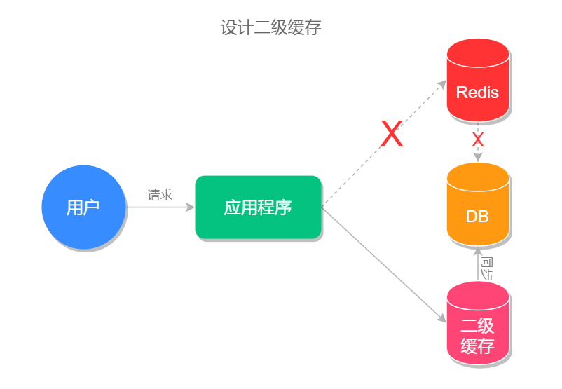
缓存穿透
缓存穿透是指查询数据库和缓存都无数据，因为数据库查询无数据，出于容错考虑，不会将结果保存到缓存中，因此每次请求都会去查询数据库，这种情况就叫做缓存穿透。
缓存穿透执行流程如下图所示：
其中红色路径表示缓存穿透的执行路径，可以看出缓存穿透会给数据库造成很大的压力。
缓存穿透的解决方案有以下几个。
使用过滤器
我们可以使用过滤器来减少对数据库的请求，例如使用我们前面章节所学的布隆过滤器，我们这里简单复习一下布隆过滤器，它的原理是将数据库的数据哈希到 bitmap 中，每次查询之前，先使用布隆过滤器过滤掉一定不存在的无效请求，从而避免了无效请求给数据库带来的查询压力。
缓存空结果
另一种方式是我们可以把每次从数据库查询的数据都保存到缓存中，为了提高前台用户的使用体验 (解决长时间内查询不到任何信息的情况)，我们可以将空结果的缓存时间设置得短一些，例如 3~5 分钟。
缓存击穿
缓存击穿指的是某个热点缓存，在某一时刻恰好失效了，然后此时刚好有大量的并发请求，此时这些请求将会给数据库造成巨大的压力，这种情况就叫做缓存击穿。
缓存击穿的执行流程如下图所示：
它的解决方案有以下 2 个。
加锁排队
此处理方式和缓存雪崩加锁排队的方法类似，都是在查询数据库时加锁排队，缓冲操作请求以此来减少服务器的运行压力。
设置永不过期
对于某些热点缓存，我们可以设置永不过期，这样就能保证缓存的稳定性，但需要注意在数据更改之后，要及时更新此热点缓存，不然就会造成查询结果的误差。
缓存预热
首先来说，缓存预热并不是一个问题，而是使用缓存时的一个优化方案，它可以提高前台用户的使用体验。
缓存预热指的是在系统启动的时候，先把查询结果预存到缓存中，以便用户后面查询时可以直接从缓存中读取，以节约用户的等待时间。
缓存预热的执行流程，如下图所示：
缓存预热的实现思路有以下三种：
- 把需要缓存的方法写在系统初始化的方法中，这样系统在启动的时候就会自动的加载数据并缓存数据；
- 把需要缓存的方法挂载到某个页面或后端接口上，手动触发缓存预热；
- 设置定时任务，定时自动进行缓存预热。
小结
本文介绍了缓存雪崩产生的原因是因为短时间内大量缓存同时失效，而导致大量请求直接查询数据库的情况，解决方案是加锁、随机设置过期时间和设置二级缓存等；还介绍了查询数据库无数据时会导致的每次空查询都不走缓存的缓存穿透问题，解决方案是使用布隆过滤器和缓存空结果等；同时还介绍了缓存在某一个高并发时刻突然失效导致的缓存击穿问题，以及解决方案——加锁、设置永不过期等方案，最后还介绍了优化系统性能的手段缓存预热。
42 技能学习指南
经过前面文章的学习，我相信一定有一半的人看懂了，而另一半人一定是似懂非懂或者是完全不懂，如果你属于前者，那恭喜你，但如果没看懂，也没关系，本文来给你具体的解决方案。
我们来仔细回忆两件事，第一件是大学考级学的那些英语，我每个单词每个语句当时都背的滚瓜烂熟，那时候你也以为这些东西你都会了吧？但你现在还能记起多少呢？
我们再来回忆一下，我们小的时候学习骑自行车的本领，即使相隔很多年，但依旧没能忘记，这是为什么？
无非是学自行车的时候我们经过了深度实践和练习才习得的本领，而英语只是我们应付考试临时下的“功夫”，所以我们想要习得终身为我们所用的技能，我们是一定要进行大量实践和练习，即使你感觉自己当时已经看得懂，那也要写出来试试，所谓“纸上得来终觉浅，绝知此事要躬行”就是这个道理，如果这些知识点你都会，那么你能不能写出给好的代码呢？
实践出真知、温故而知新，诸如此类的词语还有很多，这些都是前人经过无数次实践才得出来的结论，这些词语之所以能被流传到今天，一定是它能给后人带来价值。
如果你看不懂，先照代码敲起来，如果你已经看懂了，那你能不能写出更好的代码、更好的方法来实现同样的功能？这才是学习一门技术最佳的方式。
我本人在 11 年的程序开发生涯当中，全职做个 C#、NodeJs、Golang 还有手机混合开发 React Native，最近几年专注 Java 领域，我前年用 Python 写的 FaceAI 项目，在 GitHub 没经过任何推广，现在已经有 7k 个 Star 了，FaceAI 地址：
为什么我能习得这么多技能？还能做到不错？其实方法就是“实践”带给我的红利，所有我以为我看得懂的，还有我当时看不懂的东西，没关系，先实践起来再说，通过一步步实践我快速地掌握了技能的精髓，快速构建了语言整体的知识体系。
如果说学习有什么捷径的话，那一定是“实践”。
所以在课程的最后，我希望大家能动手实践起来。
我们期望自己能有所成，我们期望自己不被这个世界改变，我们期望所有的梦想将会被实现，那么此刻我们就不能只“说说而已”。
43 加餐：Redis 的可视化管理工具
因为 Redis 官方只提供了命令行版的 Redis 客户端 redis-cli，以至于我们在使用的时候会比较麻烦，通常要输入一堆命令，而且命令行版的客户端看起来也不够直观，基于以上两个原因我们需要找一个可视化的 Redis 客户端，下面是我这些年使用过的一些 Redis 可视化客户端，分享给大家。
RedisClient
是否收费：免费。
项目介绍：Java 编写的 Redis 连接客户端，功能丰富，并且是免费的。
支持平台：Windows。
项目地址：https://github.com/caoxinyu/RedisClient
使用截图：
Redis Desktop Manager
是否收费：收费。
项目介绍：一款基于 Qt5 的跨平台 Redis 桌面管理软件。
支持平台：Windows、macOS、Linux。
项目地址：https://github.com/uglide/RedisDesktopManager
使用截图：
RedisStudio
是否收费：免费。
项目介绍：一款 C++ 编写的 Redis 管理工具，比较老，好久没更新了。
支持平台：Windows。
项目地址：https://github.com/cinience/RedisStudio
使用截图：
AnotherRedisDesktopManager
是否收费：免费。
项目介绍：一款基于 Node.js 开发的 Redis 桌面管理器，它的特点就是相对来说比较稳定，在数据量比较大的时候不会崩溃。
支持平台：Windows、macOS、Linux。
项目地址：https://github.com/qishibo/AnotherRedisDesktopManager
使用截图：
其他 Redis 可视化工具
- Medis：https://github.com/luin/medis
- phpRedisAdmin：https://github.com/ErikDubbelboer/phpRedisAdmin
- PyRedisAdmin：https://github.com/JoneXiong/PyRedisAdmin
- Go-Redis：https://github.com/alphazero/Go-Redis
- RedisLive：https://github.com/nkrode/RedisLive
- TreeDMS ：http://www.treesoft.cn/dms.html
- RedisPlus：https://gitee.com/MaxBill/RedisPlus
总结
我本人使用过上面介绍的前 4 个客户端，最近一直在使用的是 AnotherRedisDesktopManager 和 Redis Desktop Manager，其中 Redis Desktop Manager 是花了 ￥98 买的 macOS 版，买之后就后悔了，原因之一就是界面并不美观，完全没有付费软件应有的精致感，建议大家使用免费版的 AnotherRedisDesktopManager。